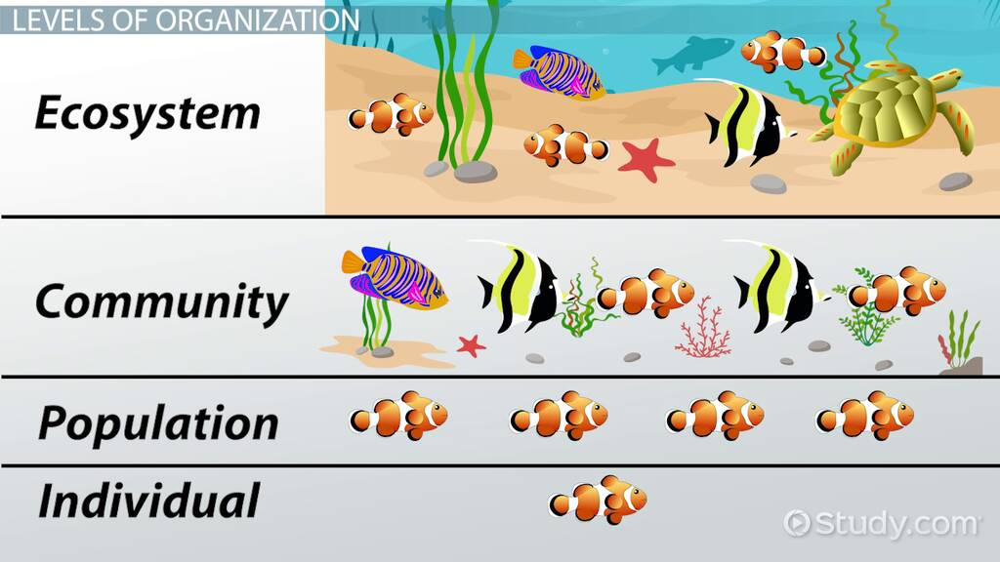
6.Diversidad
Medidas de diversidad
Conceptos básicos
- Especie. Grupo de organismos que se pueden reproducir entre sí y generar descendencia fértil.
- Comunidad. Conjunto de diferentes especies que interactúan entre sí.
- Muestreo. Método por el cual inferimos propiedades de una población objetivo (no confundir con población en el sentido ecológico).
- Esfuerzo de muestreo. Número de individuos muestreados o el tiempo invertido en obtener datos.
- Interpolación. Modelar datos dentro del intervalo observado.
- Extrapolación. Modelar datos fuera del intervalo observado.
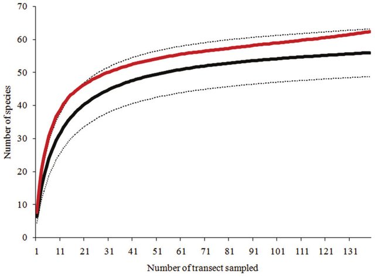
- Abundancia. Qué tan común o raro es encontrar una especie en una comunidad.
- Diversidad. Propiedad emergente de las comunidades que incorpora el grado de heterogeneidad de algún estado o propiedad (este estado puede ser diversidad de especies, gremios, grupos funcionales, familias, genética, etc).
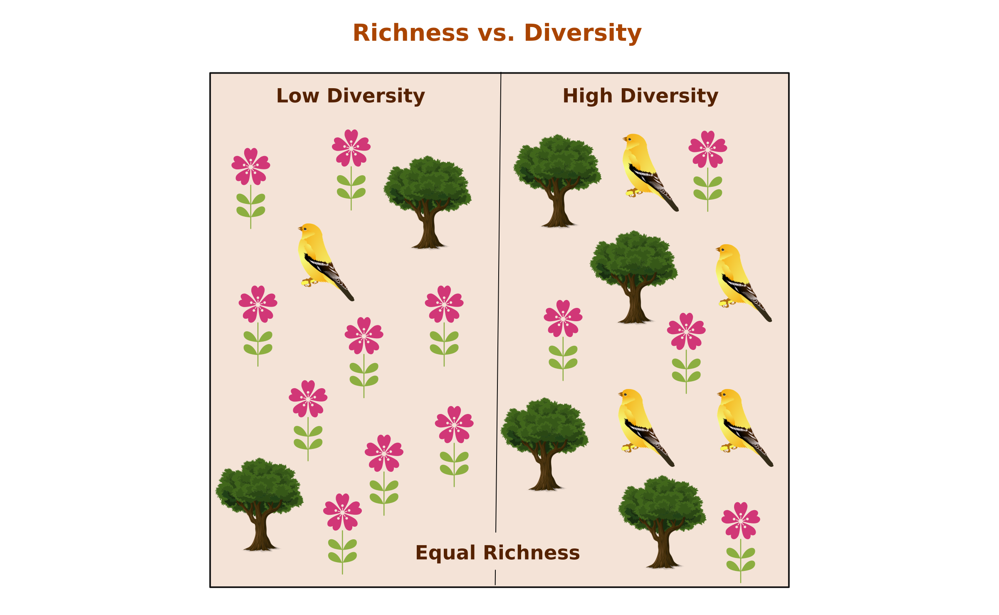
- Remuestreo. Técnica estadística que permite obtener estimaciones simulando submuestras de una muestra.
No existe una única forma de medir biodiversidad. Por lo tanto, hay diversas medidas que describen de manera distinta la diversidad. ¿Cómo responder a la pregunta qué tan diversa es una comunidad?
Diversidad
Diversidad \(\alpha\), \(\beta\) y \(\gamma\).
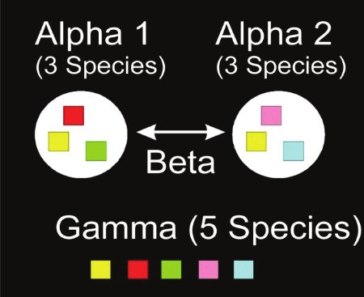
Los índices que vamos a ver permiten obtener mediciones \(\alpha\) y \(\gamma\). \(\beta\) normalmente se mide con índice de similitud o disimilitud.
Relevancia
El poder medir la diversidad permite entender patrones de distribución de especies (p.ej., zonas tropicales vs polares), poner a prueba hipótesis ecológicas (p.ej., sobre el estado de conservación / perturbación), crear líneas base (p.ej., conocer el número de especies presentes en una región), proveer información de prioridades de conservación (p.ej., proteger zonas más biodiversas), entre otras.
Índices tradicionales
Índices sobre qué tan heterogénea es una comunidad. Normalmente tratan de resumir dos componentes:
- Número de especies.
- Abundancia de éstas.
Medidas sobre diversidad incluyen el cálculo de índices “clásicos”:
- Riqueza. Número de especies en una muestra.
- Índice de Shannon. Incertidumbre en la identidad de una especie en una muestra. Índice que considera riqueza de especies y dominancia.
\[ D = -\sum_{i=1}^S p_i ln p_i \]
- Índice de Simpson. Probabilidad de que dos individuos, de una muestra, elegidos al azar sean de especies distintas. Índice que considera riqueza de especies y dominancia, pero está más influenciado por la dominancia.
Está el índice de Simpson (o Gini-Simpson).
\[ D = 1 - \sum_{i=1}^S p_i^2 \]
y el inverso de Simpson.
\[ D = \frac{1}{\sum_{i=1}^S p_i^2} \]
- Curvas de rango abundancia. Abundancia de cada especie encontrada en el muestreo.
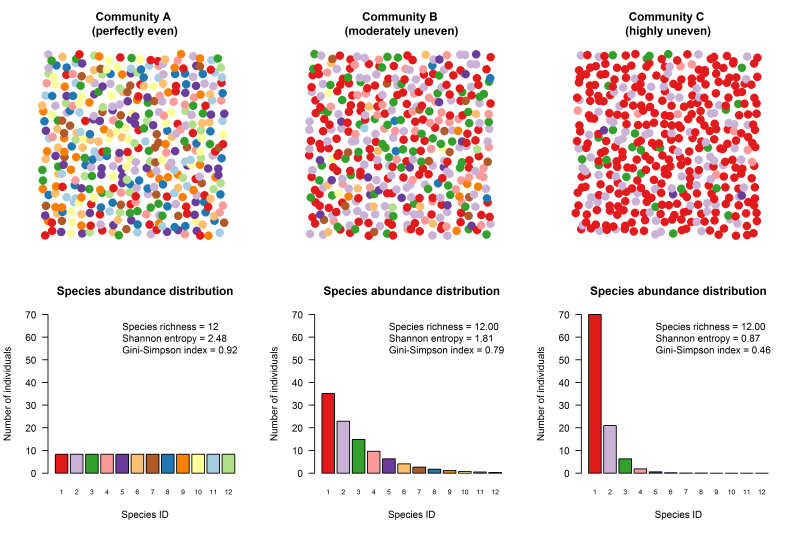
Figuras tomadas de: https://www.davidzeleny.net/anadat-r/doku.php/en:div-ind
Sin embargo, el principal problema con estos índices es que los índices dependen del esfuerzo de muestreo, cuántas especies hay y su abundancia relativa. Entonces qué puede pasar:
- Una comunidad puede ser igual de diversa que otra, pero si se muestreó con un menor esfuerzo de muestreo, el índice saldrá menor.
- Dos comunidades con el mismo valor del índice de Shannon, pero una puede tener el doble número de especies con diferente abundancia.
Otras métricas que se han plantado como alternativas, basadas en técnicas de remuestreo:
- Curvas de acumulación de especies.
- Rarefacción.
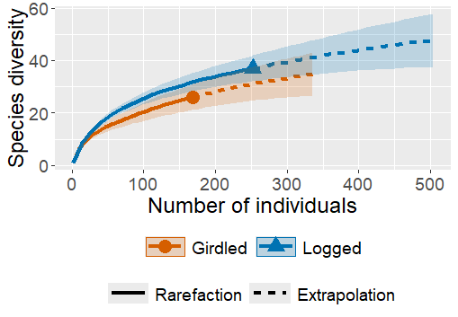
Las curvas de acumulación de especies permiten simular la diversidad encontrada en función del esfuerzo de muestreo. Tratan de describir la dependencia de los índices de diversidad de acuerdo con el esfuerzo de muestreo.
Los índices rarificados se basan en las curvas de acumulación de especies para intrapolar el valor de diversidad (modelado) de una comunidad con un esfuerzo de muestreo reducido.
Números de Hill
Los números de Hill corresponden a medidas de diversidad que tratan de estandarizar estas medidas en función del número de especies y su abundancia.
Trata de abordar el problema de la medir la diversidad en comunidades, como un valor que depende del: 1) esfuerzo de muestreo y 2) cuántas especies hay y su abundancia relativa.
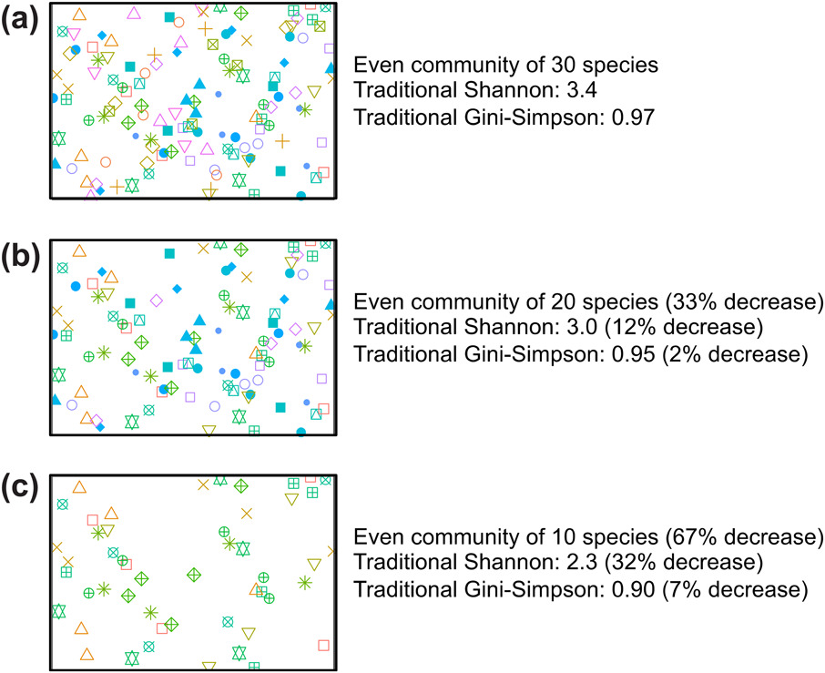
Figuras tomadas de: https://nsojournals.onlinelibrary.wiley.com/doi/full/10.1111/oik.07202
Su ventaja respecto a los índices de diversidad “tradicionales”:
- Interpretables en términos de número de especies.
- Cuentan con un exponente que controla la sensibilidad de la diversidad a la abundancia de las especies (q = c(0,1,2)). Más importancia a especies abundantes conforme incrementa el número q.
- q0: Riqueza de especies. Más sensible a especies raras.
- q1: Similar al índice de Shannon, pero expresado en número de especies (comunes). Punto intermedio.
- q2: Similar al índice de Simpson, pero expresado en número de especies (comunes). Más sensible a especies comunes.
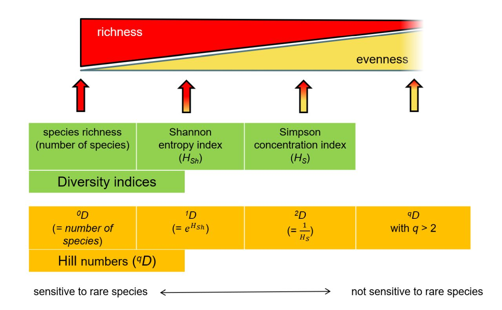
Figuras tomadas de: https://www.davidzeleny.net/anadat-r/doku.php/en:div-ind
Ventajas:
- Si dos comunidades tienen una proporción similar de especies dominantes, pero distinto número de especies totales, su índice de Shannon o Simpson serán muy similares; pero q1 y q2 no (reflejará la diferencia en número de especies).
- Los valores se expresan en número de especies. Modelan una comunidad con determinada diversidad donde todas las especies tienen la misma abundancia.
- Permite hacer comparaciones proporcionales en términos de diversidad entre números de Hill de distintas comunidades.
\[ D = (\sum_{i=1}^S p_i^q)^{1/1-q} \]
\(S\): número de especies en la muestra. \(p_i\): número de individuos de la especie \(i\) entre total de individuos. \(q\): exponente del número de Hill.
Otro concepto importante: Coverage.
Es una medida de qué tanto se ha muestrado una comunidad. Coverage crece más lento conforme crece el tamaño de la muestra. Se calcula a partir del número de singletons, doubletons y número total de individuos.
Datos INFyS
Veremos tres paquetes hoy: vegan, BiodiversityR y iNEXT.
- vegan: Clásico paquete para calcular índices de diversidad, curvas de acumulación de especies, rarificación, extrapolación de número de especies.
- BiodiversityR: funciones basadas en vegan más amigable con el tidyverse.
- iNEXT: Cálculo de números de Hill y curva de acumulación de especies.
Empecemos cargando los paquetes que vamos a usar.
library(BiodiversityR)Cargando paquete requerido: tcltkCargando paquete requerido: veganCargando paquete requerido: permuteCargando paquete requerido: latticeThis is vegan 2.6-8BiodiversityR 2.16-1: Use command BiodiversityRGUI() to launch the Graphical User Interface;
to see changes use BiodiversityRGUI(changeLog=TRUE, backward.compatibility.messages=TRUE)library(readxl)
library(tidyverse)── Attaching core tidyverse packages ──────────────────────── tidyverse 2.0.0 ──
✔ dplyr 1.1.4 ✔ readr 2.1.5
✔ forcats 1.0.0 ✔ stringr 1.5.1
✔ ggplot2 3.5.1 ✔ tibble 3.2.1
✔ lubridate 1.9.3 ✔ tidyr 1.3.1
✔ purrr 1.0.2 ── Conflicts ────────────────────────────────────────── tidyverse_conflicts() ──
✖ dplyr::filter() masks stats::filter()
✖ dplyr::lag() masks stats::lag()
ℹ Use the conflicted package (<http://conflicted.r-lib.org/>) to force all conflicts to become errorslibrary(readr)
library(skimr)
library(iNEXT)
library(dplyr)
knitr::opts_chunk$set(echo = TRUE)Cargar los datos del INFyS, pero ahora usaremos las columnas de especies.
df <- read_excel("INFyS_2015_2020_Michoacan_de_Ocampo_lHwLKIM.xlsx",
sheet = "Arbolado")Warning: Expecting numeric in BW19313 / R19313C75: got 'NULL'Warning: Expecting numeric in BX19313 / R19313C76: got 'NULL'# Preprocesamiento limpieza de datos
df <- df |>
mutate(across(c(AlturaTotal_C3, DiametroNormal_C3), ~ifelse(.x >= 99999, NA, .x))) |>
# Eliminar NA
drop_na(AlturaTotal_C3, DiametroNormal_C3) |>
# Seleccionar columnas de interés
select(IdConglomerado, DESCRIP_S7_C3, Genero_APG_C3, Especie_APG_C3) |>
# Renombrar columnas
rename("ParcelaId" = "IdConglomerado",
"TipoVeg" = "DESCRIP_S7_C3",
"Genero" = "Genero_APG_C3",
"Especie" = "Especie_APG_C3")
skim(df)| Name | df |
| Number of rows | 25258 |
| Number of columns | 4 |
| _______________________ | |
| Column type frequency: | |
| character | 3 |
| numeric | 1 |
| ________________________ | |
| Group variables | None |
Variable type: character
| skim_variable | n_missing | complete_rate | min | max | empty | n_unique | whitespace |
|---|---|---|---|---|---|---|---|
| TipoVeg | 0 | 1 | 7 | 61 | 0 | 32 | 0 |
| Genero | 0 | 1 | 2 | 21 | 0 | 173 | 0 |
| Especie | 0 | 1 | 4 | 17 | 0 | 292 | 0 |
Variable type: numeric
| skim_variable | n_missing | complete_rate | mean | sd | p0 | p25 | p50 | p75 | p100 | hist |
|---|---|---|---|---|---|---|---|---|---|---|
| ParcelaId | 0 | 1 | 61220.67 | 2777.27 | 56011 | 59280 | 60559 | 62584 | 69266 | ▃▇▃▂▁ |
Crear columna de especies
df <- df |>
mutate(nom_cien = paste(Genero, Especie, sep = " "))
df |>
select(nom_cien) |>
distinct() |>
arrange(nom_cien)# A tibble: 392 × 1
nom_cien
<chr>
1 Aa NULL
2 Abies NULL
3 Abies durangensis
4 Abies religiosa
5 Acacia NULL
6 Acacia acatlensis
7 Acacia angustissima
8 Acacia cochliacantha
9 Acacia cornigera
10 Acacia farnesiana
# ℹ 382 more rowsHay algunos géneros sin especies (NULL)
df <- df |>
mutate(across(nom_cien, ~str_replace_all(.x, "NULL", "sp.")))
df |>
select(nom_cien) |>
distinct() |>
arrange(nom_cien)# A tibble: 392 × 1
nom_cien
<chr>
1 Aa sp.
2 Abies durangensis
3 Abies religiosa
4 Abies sp.
5 Acacia acatlensis
6 Acacia angustissima
7 Acacia cochliacantha
8 Acacia cornigera
9 Acacia farnesiana
10 Acacia greggii
# ℹ 382 more rowsvegan
Sacar datos de los sitios
Queremos usar las siguientes funciones, ver ayuda
help(diversity)Para saber cómo meter los dato conviene revisar los datos que vienen en los ejemplos. Datos de la isla de Barro Colorado.
Vemos que en BCI vienen las especies en columnas, las abundancias correpsonden a cada entrada y las filas representan los sitios de muestreo. Trataremos de poner los datos en ese formato.
data(BCI)
data(BCI.env)
as_tibble(BCI)# A tibble: 50 × 225
Abarema.macradenia Vachellia.melanoceras Acalypha.diversifolia
<int> <int> <int>
1 0 0 0
2 0 0 0
3 0 0 0
4 0 0 0
5 0 0 0
6 0 0 0
7 0 0 0
8 0 0 0
9 0 0 0
10 1 0 0
# ℹ 40 more rows
# ℹ 222 more variables: Acalypha.macrostachya <int>, Adelia.triloba <int>,
# Aegiphila.panamensis <int>, Alchornea.costaricensis <int>,
# Alchornea.latifolia <int>, Alibertia.edulis <int>,
# Allophylus.psilospermus <int>, Alseis.blackiana <int>,
# Amaioua.corymbosa <int>, Anacardium.excelsum <int>, Andira.inermis <int>,
# Annona.spraguei <int>, Apeiba.glabra <int>, Apeiba.tibourbou <int>, …as_tibble(BCI.env)# A tibble: 50 × 7
UTM.EW UTM.NS elevation convex slope aspectEW aspectNS
<dbl> <dbl> <dbl> <dbl> <dbl> <dbl> <dbl>
1 625754. 1011569. 130. -7.87 6.69 -0.891 -0.454
2 625754. 1011669. 137. -10.7 5.09 -0.219 -0.976
3 625754. 1011769. 144. -14.7 3.10 0.0305 -1.00
4 625754. 1011869. 147. -16.8 1.87 -0.864 -0.503
5 625754. 1011969. 144. -12.5 5.12 -0.671 0.741
6 625854. 1011569. 137. -9.68 2.95 -0.865 -0.501
7 625854. 1011669. 139. 0.25 3.13 -0.767 -0.642
8 625854. 1011769. 143. 0.188 2.83 0.406 -0.914
9 625854. 1011869. 146. 1.13 2.88 0.897 -0.442
10 625854. 1011969. 147. -11.9 3.61 0.972 0.233
# ℹ 40 more rowsPreprocesamiento
df_sites2: Abundancia por sitio de muestreo. Este lo vamos a usar después, pero para dejarlo en el ambiente de trabajo. df2: Abundancia por tipo de vegetación.
Convertirlo a datos en formato ancho y convertirlo a matriz para poder usar las funciones de vegan.
library(vegan)
# Crear matriz de sitios y abundancia por especies
df_sites2 <- df |>
select(TipoVeg, ParcelaId, nom_cien) |>
group_by(TipoVeg, ParcelaId, nom_cien) |>
count() |>
pivot_wider(id_cols = c(TipoVeg, ParcelaId),
names_from = nom_cien,
values_from = n,
values_fill = 0) |>
ungroup()
# Grupos de tipos de vegetación
veggroups <- df_sites2 |>
pull(TipoVeg)
# Datos de los sitios, quitar tipoVeg y ParcelaID para solo dejar datos de abundancias
df_sites2 <- df_sites2 |>
select(-c(TipoVeg, ParcelaId)) |>
as.matrix()Crear tablas de abundancias a partir de observaciones individuales
# Acomodar datos y ponerlos en formato para usarlo por funciones de vegan
# Por tipo de vegetación
df2 <- df |>
select(TipoVeg, nom_cien) |>
group_by(TipoVeg, nom_cien) |>
count() |>
ungroup() |>
select(TipoVeg, nom_cien, n)
tv <- df2 |>
pull(TipoVeg)
df2mat <- df2 |>
pivot_wider(id_cols = TipoVeg,
names_from = nom_cien,
values_from = n,
values_fill =0) |>
select(-TipoVeg) |>
as.matrix()Índices de diversidad
Calcular índices de diversidad de dos formas, una más “tidyverse” y otra menos.
# Por tipo de vegetación: Tidyverse. Más organizado
res_vegan <- df2 |>
group_by(TipoVeg) |>
summarise(rich = specnumber(n),
shan = diversity(n,
index = "shannon"),
simp = diversity(n,
index = "simpson"),
invsimp = diversity(n,
index = "invsimpson"))
res_vegan# A tibble: 32 × 5
TipoVeg rich shan simp invsimp
<chr> <int> <dbl> <dbl> <dbl>
1 AGRICULTURA DE RIEGO ANUAL 4 1.24 0.667 3
2 AGRICULTURA DE RIEGO ANUAL Y PERMANENTE 3 0.937 0.568 2.31
3 AGRICULTURA DE RIEGO PERMANENTE 11 1.86 0.789 4.75
4 AGRICULTURA DE TEMPORAL ANUAL 11 1.90 0.806 5.16
5 AGRICULTURA DE TEMPORAL ANUAL Y PERMANENTE 7 1.26 0.634 2.73
6 AGRICULTURA DE TEMPORAL PERMANENTE 1 0 0 1
7 ASENTAMIENTOS HUMANOS 2 0.451 0.278 1.38
8 BOSQUE CULTIVADO 10 1.90 0.798 4.94
9 BOSQUE DE ENCINO 78 3.46 0.953 21.3
10 BOSQUE DE ENCINO-PINO 36 2.92 0.915 11.8
# ℹ 22 more rowsMás con sintáxis R base
# Por tipo de vegetación: más R base. Menos organizados (luego hay que hacer un data.frame).
specnumber(df2mat) [1] 4 3 11 11 7 1 2 10 78 36 12 82 124 9 4 26 24 76 8
[20] 93 52 47 65 107 37 6 6 16 49 18 66 11diversity(df_sites2,
index = "shannon",
groups = veggroups) AGRICULTURA DE RIEGO ANUAL
1.2424533
AGRICULTURA DE RIEGO ANUAL Y PERMANENTE
0.9368883
AGRICULTURA DE RIEGO PERMANENTE
1.8613602
AGRICULTURA DE TEMPORAL ANUAL
1.8997754
AGRICULTURA DE TEMPORAL ANUAL Y PERMANENTE
1.2560497
AGRICULTURA DE TEMPORAL PERMANENTE
0.0000000
ASENTAMIENTOS HUMANOS
0.4505612
BOSQUE CULTIVADO
1.8956203
BOSQUE DE ENCINO
3.4613067
BOSQUE DE ENCINO-PINO
2.9199529
BOSQUE DE OYAMEL
1.5242200
BOSQUE DE PINO
3.3385756
BOSQUE DE PINO-ENCINO
3.5455536
Bosque mesófilo DE MONTAÑA
1.5888496
MANGLAR
1.1231308
PASTIZAL CULTIVADO
2.5538907
PASTIZAL INDUCIDO
2.3804905
SELVA BAJA CADUCIFOLIA
2.7304372
VEGETACIÓN SECUNDARIA ARBÓREA DE BOSQUE DE ENCINO
2.9944029
VEGETACIÓN SECUNDARIA ARBÓREA DE BOSQUE DE ENCINO-PINO
1.5989074
VEGETACIÓN SECUNDARIA ARBÓREA DE BOSQUE DE OYAMEL
1.6269161
VEGETACIÓN SECUNDARIA ARBÓREA DE BOSQUE DE PINO
1.9417785
VEGETACIÓN SECUNDARIA ARBÓREA DE BOSQUE DE PINO-ENCINO
2.9262089
VEGETACIÓN SECUNDARIA ARBÓREA DE Bosque mesófilo DE MONTAÑA
1.5532701
VEGETACIÓN SECUNDARIA ARBÓREA DE SELVA BAJA CADUCIFOLIA
3.1759746
VEGETACIÓN SECUNDARIA ARBÓREA DE SELVA MEDIANA SUBCADUCIFOLIA
0.5655066
VEGETACIÓN SECUNDARIA ARBUSTIVA DE BOSQUE DE ENCINO
3.5890436
VEGETACIÓN SECUNDARIA ARBUSTIVA DE BOSQUE DE ENCINO-PINO
3.0563670
VEGETACION SECUNDARIA ARBUSTIVA DE BOSQUE DE OYAMEL
1.4364904
VEGETACIÓN SECUNDARIA ARBUSTIVA DE BOSQUE DE PINO
3.1257529
VEGETACIÓN SECUNDARIA ARBUSTIVA DE BOSQUE DE PINO-ENCINO
3.3643147
VEGETACIÓN SECUNDARIA ARBUSTIVA DE SELVA BAJA CADUCIFOLIA
3.6876133 Aquí vamos a ver que la desventaja es que vegan no se cruza tan bien con el tidyverse (sobre todo porque las funciones deben leer matrices). Sin embargo, vamos a ver rápido algunas funciones básicas.
Crear matriz de abundancias por sitios, en lugar de tipos de vegetación. Lo vamos a usar más adelante.
# Por sitio
df3 <- df |>
select(ParcelaId, nom_cien) |>
group_by(ParcelaId, nom_cien) |>
count() |>
ungroup() |>
select(ParcelaId, nom_cien, n) Curva de acumulación de especies
Esto hay que hacerlo por comunidad. Ahorita tomaremos datos de Bosque de Pino-Encino.
# Por un tipo de vegetación
dfbpq <- df |>
filter(TipoVeg == "BOSQUE DE PINO-ENCINO") |>
select(ParcelaId, nom_cien) |>
group_by(ParcelaId, nom_cien) |>
count() |>
ungroup() |>
select(ParcelaId, nom_cien, n) |>
pivot_wider(id_cols = ParcelaId,
names_from = nom_cien,
values_from = n,
values_fill =0) |>
select(-ParcelaId) |>
as.matrix()comm : datos de comunidad method: “collector”, orden de los datos como viene “random”, orden aleatorio “exact”, promedio esperado de especies, “coleman”, de acuerdo con Coleman et al 1982 “rarefaction”, promedio acumulando individuos en lugar de sitios. gamma: método para obtener el número de especies extrapolado, jack1, jack2, chao, boot, species
spacum <- specaccum(comm = dfbpq,
method="random",
permutations=100,
gamma="chao.1")
spacumSpecies Accumulation Curve
Accumulation method: random, with 100 permutations
Call: specaccum(comm = dfbpq, method = "random", permutations = 100, gamma = "chao.1")
Sites 1.00000 2.00000 3.00000 4.00000 5.00000 6.00000 7.00000 8.00000
Richness 6.47000 11.97000 16.52000 20.43000 24.12000 28.07000 31.23000 34.52000
sd 3.34681 4.61104 5.07217 5.78269 5.85736 6.70332 7.00916 7.59117
Sites 9.00000 10.0000 11.00000 12.00000 13.00000 14.00000 15.00000 16.00000
Richness 37.16000 40.7200 43.95000 46.80000 49.02000 51.18000 53.61000 55.70000
sd 7.94644 9.2639 9.54455 9.54733 9.84832 9.95077 10.41453 10.06594
Sites 17.00000 18.00000 19.00000 20.00000 21.00000 22.00000 23.00000
Richness 57.44000 59.62000 61.69000 63.68000 65.29000 67.00000 68.98000
sd 10.08782 10.39695 10.33548 10.42518 10.54983 10.46302 10.60873
Sites 24.00000 25.00000 26.00000 27.00000 28.00000 29.00000 30.00000
Richness 70.53000 71.83000 73.56000 75.30000 76.69000 78.08000 79.49000
sd 10.74729 10.74691 10.71233 10.65861 10.85971 10.90054 10.57106
Sites 31.00000 32.00000 33.0000 34.00000 35.00000 36.0000 37.00000 38.00000
Richness 80.91000 82.46000 83.8500 85.18000 86.75000 88.5200 89.92000 91.71000
sd 10.42636 10.27345 10.1607 10.22907 10.32245 9.9752 9.85929 9.68524
Sites 39.00000 40.00000 41.00000 42.00000 43.0000 44.00000 45.00000
Richness 92.98000 94.38000 95.45000 96.99000 97.9700 99.02000 100.54000
sd 9.63263 9.71179 9.80041 9.71045 9.4457 9.35601 8.87559
Sites 46.00000 47.00000 48.00000 49.00000 50.00000 51.00000 52.00000
Richness 101.76000 103.39000 104.50000 105.92000 106.87000 107.87000 108.91000
sd 8.88322 8.67004 8.69866 8.86564 8.55836 8.69303 8.51747
Sites 53.00000 54.00000 55.00000 56.00000 57.00000 58.00000 59.00000
Richness 110.11000 111.11000 112.08000 113.33000 114.49000 115.93000 117.34000
sd 8.24853 8.01122 7.59277 7.38693 7.36151 6.96493 5.76513
Sites 60.00000 61.00000 62.00000 63.0000 64.00000 65
Richness 118.67000 119.66000 120.70000 121.8200 123.06000 124
sd 5.52507 4.92821 4.36353 3.6553 2.38183 0plot(spacum)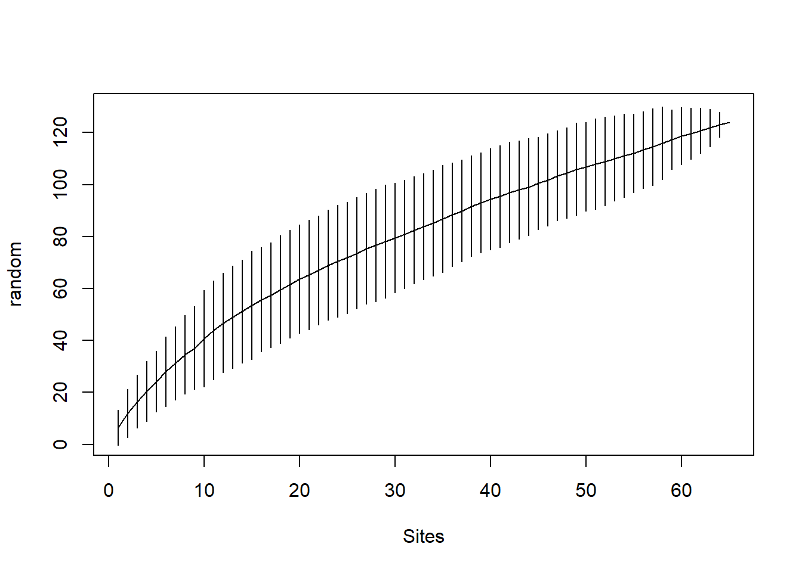
Rarificación
Rarificar número de especies.
Para cada sitio le calcula el número esperado de especies si se hubieran muestreado en todas 20 individuos. Además se muestra el error estándar.
# Rarificar número de especies
temp <- rarefy(dfbpq,
sample = 20,
se = TRUE)Warning in rarefy(dfbpq, sample = 20, se = TRUE): requested 'sample' was larger
than smallest site maximum (1)temp [,1] [,2] [,3] [,4] [,5] [,6] [,7]
S 4.7353630 5.662614 4.6328265 2.7393411 3.6466210 4.312330 2.4919355
se 0.8069547 0.990053 0.9163352 0.8197459 0.5120074 1.010441 0.5819318
[,8] [,9] [,10] [,11] [,12] [,13] [,14] [,15]
S 4.7121916 3.8408408 4.8128392 6.0676206 1 4.9913802 6.7390781 3.3728263
se 0.7417946 0.8008827 0.4061646 0.9604662 0 0.7017689 0.9477569 0.6265777
[,16] [,17] [,18] [,19] [,20] [,21] [,22]
S 2.5126752 3.6503590 4.4123082 5.7219339 3.5386514 4.476083 3.0111766
se 0.4999295 0.6235621 0.8715933 0.7823664 0.4997654 0.888893 0.7173617
[,23] [,24] [,25] [,26] [,27] [,28] [,29]
S 3.0101738 5.6537947 5.1616800 6.7632516 5.3634085 4.239443 6.2493835
se 0.9086285 0.9105218 0.8125108 0.8764778 0.9496699 0.710029 0.7084459
[,30] [,31] [,32] [,33] [,34] [,35] [,36] [,37]
S 5.5709712 4 3.5842893 5.9629255 4.091208 4.8450494 6.709836 3.8376166
se 0.8669328 0 0.6317954 0.8315371 1.025309 0.6666457 1.039531 0.3688233
[,38] [,39] [,40] [,41] [,42] [,43] [,44]
S 4.7218560 3.3825208 3.9881423 4.6280826 4.1560776 5.671827 2.4616800
se 0.6968103 0.9514644 0.1082456 0.5433478 0.5020651 0.877552 0.7562642
[,45] [,46] [,47] [,48] [,49] [,50] [,51] [,52]
S 5.579984 3.7130348 4.9815477 4.3582855 4.563074 7.059179 3 4.7952942
se 1.118280 0.7375148 0.8455379 0.6632085 1.071086 1.188708 0 0.8018448
[,53] [,54] [,55] [,56] [,57] [,58] [,59] [,60] [,61]
S 5.4395289 4 4.9805559 4 5.3416236 2 4.372792 5.276075 6
se 0.5472207 0 0.8748795 0 0.9692255 0 1.146961 1.020268 0
[,62] [,63] [,64] [,65]
S 9.701435 1 10.686741 2.9204440
se 1.257140 0 1.465539 0.7595642
attr(,"Subsample")
[1] 20Algunas parcelas tienen SE = 0 porque tienen menos individuos que los que le pusimos en sample.
Extrapolar número total de especies
Modelos: “arrhenius” (SSarrhenius), “gleason” (SSgleason), “gitay” (SSgitay), “lomolino” (SSlomolino) of vegan package. “asymp” (SSasymp). “gompertz” (SSgompertz). “michaelis-menten” (SSmicmen). “logis” (SSlogis). “weibull” (SSweibull).
Usar modelo de michaelis menten para calcular la curva de acumulación
# Calcular número de especies total
extrspp <- predict(fitspecaccum(dfbpq,
model = "michaelis-menten",
method = "exact"),
# Datos sobre los cuales se hace la predicción
newdata=seq(1,500,50))
plot(x = seq(1,500,50),
y = extrspp)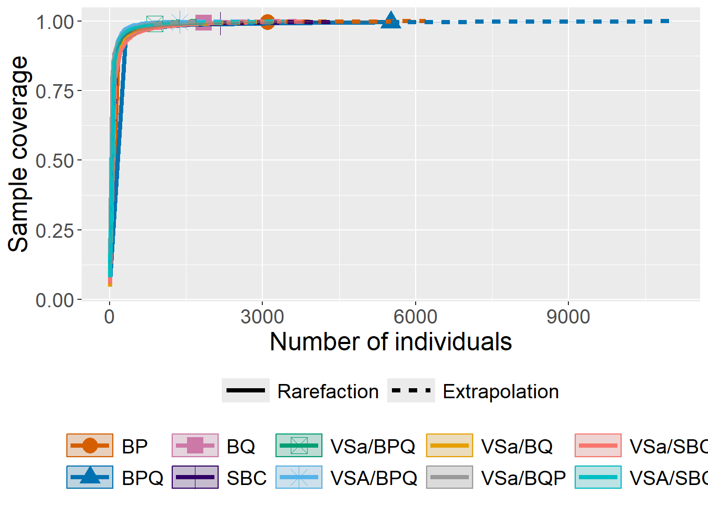
De acuerdo con el modelo de Michaelis-Menten, calcula cuál podría ser el número de especies esperado si se aumentara el esfuerzo de muestreo. La idea principal es que si hay mucha diversidad en el muestreo, al extrapolar va a calcular que hay más especies sin registrar y por lo tanto su diversidad extrapolada va a ser mayor.
BiodiversityR
Ver primero ejemplos de la función
help(diversityresult)data(dune.env)
data(dune)
as_tibble(dune)# A tibble: 20 × 30
Achimill Agrostol Airaprae Alopgeni Anthodor Bellpere Bromhord Chenalbu
<dbl> <dbl> <dbl> <dbl> <dbl> <dbl> <dbl> <dbl>
1 1 0 0 0 0 0 0 0
2 3 0 0 2 0 3 4 0
3 0 4 0 7 0 2 0 0
4 0 8 0 2 0 2 3 0
5 2 0 0 0 4 2 2 0
6 2 0 0 0 3 0 0 0
7 2 0 0 0 2 0 2 0
8 0 4 0 5 0 0 0 0
9 0 3 0 3 0 0 0 0
10 4 0 0 0 4 2 4 0
11 0 0 0 0 0 0 0 0
12 0 4 0 8 0 0 0 0
13 0 5 0 5 0 0 0 1
14 0 4 0 0 0 0 0 0
15 0 4 0 0 0 0 0 0
16 0 7 0 4 0 0 0 0
17 2 0 2 0 4 0 0 0
18 0 0 0 0 0 2 0 0
19 0 0 3 0 4 0 0 0
20 0 5 0 0 0 0 0 0
# ℹ 22 more variables: Cirsarve <dbl>, Comapalu <dbl>, Eleopalu <dbl>,
# Elymrepe <dbl>, Empenigr <dbl>, Hyporadi <dbl>, Juncarti <dbl>,
# Juncbufo <dbl>, Lolipere <dbl>, Planlanc <dbl>, Poaprat <dbl>,
# Poatriv <dbl>, Ranuflam <dbl>, Rumeacet <dbl>, Sagiproc <dbl>,
# Salirepe <dbl>, Scorautu <dbl>, Trifprat <dbl>, Trifrepe <dbl>,
# Vicilath <dbl>, Bracruta <dbl>, Callcusp <dbl>as_tibble(dune.env)# A tibble: 20 × 5
A1 Moisture Management Use Manure
<dbl> <ord> <fct> <ord> <ord>
1 2.8 1 SF Haypastu 4
2 3.5 1 BF Haypastu 2
3 4.3 2 SF Haypastu 4
4 4.2 2 SF Haypastu 4
5 6.3 1 HF Hayfield 2
6 4.3 1 HF Haypastu 2
7 2.8 1 HF Pasture 3
8 4.2 5 HF Pasture 3
9 3.7 4 HF Hayfield 1
10 3.3 2 BF Hayfield 1
11 3.5 1 BF Pasture 1
12 5.8 4 SF Haypastu 2
13 6 5 SF Haypastu 3
14 9.3 5 NM Pasture 0
15 11.5 5 NM Haypastu 0
16 5.7 5 SF Pasture 3
17 4 2 NM Hayfield 0
18 4.6 1 NM Hayfield 0
19 3.7 5 NM Hayfield 0
20 3.5 5 NM Hayfield 0 Pre procesamiento
Igual formato que vegan
Primero sacar los 10 tipos de vegetación con más especies. Luego usar esto para filtrar datos. Luego generar datos de abundancia.
- df3: Datos por sitio.
- df4: Datos por tipo de vegetación.
tiposveg <- df2 |>
group_by(TipoVeg) |>
count()|>
arrange(desc(n)) |>
ungroup() |>
slice_head(n = 10) |>
pull(TipoVeg)
df3 <- df |>
filter(TipoVeg %in% tiposveg) |>
select(TipoVeg, ParcelaId, nom_cien) |>
group_by(TipoVeg, ParcelaId, nom_cien) |>
count() |>
ungroup() |>
select(TipoVeg, ParcelaId,nom_cien, n) |>
pivot_wider(id_cols = c(TipoVeg, ParcelaId),
names_from = nom_cien,
values_from = n,
values_fill = 0)
df4 <- df |>
filter(TipoVeg %in% tiposveg) |>
select(TipoVeg, nom_cien) |>
group_by(TipoVeg, nom_cien) |>
count() |>
ungroup() |>
select(TipoVeg, nom_cien, n) |>
pivot_wider(id_cols = c(TipoVeg),
names_from = nom_cien,
values_from = n,
values_fill = 0) Métricas de diversidad
Por tipo vegetación
Riqueza se puede calcular por:
- pooled: todo junto.
- each site: cada sitio o cada nivel de los datos (fila).
- mean: promedio.
Todos los tipos de vegetación juntos
respool <- diversityresult(x = df4 |>
select(-c(TipoVeg)) |>
as.matrix(),
index = "richness",
method = "pooled",
sortit = FALSE,
digits = 5)
respool richness
pooled 358Por tipo de vegetación
resit <- diversityresult(x = df4 |>
select(-c(TipoVeg)) |>
as.matrix(),
index = "richness",
method = "each site",
sortit = FALSE,
digits = 5)
resit richness
1 78
2 82
3 124
4 76
5 93
6 52
7 65
8 107
9 49
10 66Promedio por tipo de vegetación
resmean <- diversityresult(x = df4 |>
select(-c(TipoVeg)) |>
as.matrix(),
index = "richness",
method = "mean",
sortit = FALSE,
digits = 5)
resmean richness
mean 79.2Por sitio
Riqueza de todo el muestreo
respool <- diversityresult(x = df3 |>
select(-c(TipoVeg, ParcelaId)) |>
as.matrix(),
index = "richness",
method = "pooled",
sortit = FALSE,
digits = 5)
respool richness
pooled 358Riqueza por sitio
resit <- diversityresult(x = df3 |>
select(-c(TipoVeg, ParcelaId)) |>
as.matrix(),
index = "richness",
method ="each site",
sortit = FALSE,
digits = 5)
resit richness
1 7
2 6
3 5
4 9
5 11
6 3
7 3
8 4
9 11
10 9
11 5
12 7
13 4
14 5
15 2
16 8
17 5
18 6
19 4
20 9
21 6
22 6
23 12
24 5
25 9
26 8
27 7
28 6
29 4
30 8
31 5
32 7
33 9
34 7
35 5
36 9
37 4
38 9
39 6
40 10
41 8
42 4
43 8
44 6
45 5
46 4
47 4
48 8
49 9
50 5
51 6
52 5
53 3
54 4
55 6
56 7
57 5
58 14
59 6
60 8
61 7
62 7
63 4
64 8
65 3
66 6
67 5
68 5
69 8
70 1
71 6
72 10
73 4
74 3
75 5
76 6
77 7
78 4
79 6
80 4
81 5
82 7
83 8
84 9
85 8
86 5
87 7
88 7
89 4
90 5
91 9
92 7
93 6
94 9
95 4
96 6
97 6
98 4
99 5
100 5
101 9
102 4
103 10
104 5
105 7
106 5
107 7
108 12
109 3
110 6
111 6
112 4
113 7
114 4
115 8
116 2
117 9
118 8
119 6
120 14
121 1
122 20
123 4
124 2
125 9
126 6
127 2
128 14
129 15
130 7
131 11
132 10
133 9
134 7
135 11
136 2
137 5
138 11
139 2
140 3
141 19
142 5
143 6
144 6
145 4
146 4
147 8
148 10
149 5
150 4
151 7
152 5
153 10
154 7
155 10
156 9
157 14
158 3
159 6
160 2
161 2
162 6
163 1
164 4
165 18
166 12
167 7
168 12
169 2
170 7
171 2
172 6
173 10
174 8
175 1
176 2
177 9
178 6
179 5
180 5
181 5
182 5
183 12
184 14
185 11
186 11
187 2
188 8
189 4
190 4
191 1
192 6
193 4
194 4
195 7
196 11
197 9
198 4
199 9
200 8
201 5
202 6
203 5
204 6
205 9
206 8
207 7
208 8
209 7
210 2
211 10
212 3
213 1
214 8
215 12
216 6
217 5
218 15
219 10
220 9
221 10
222 6
223 5
224 10
225 5
226 15
227 12
228 4
229 10
230 13
231 9
232 1
233 2
234 9
235 6
236 9
237 5
238 8
239 5
240 10
241 6
242 12
243 9
244 5
245 4
246 1
247 7
248 1
249 5
250 6
251 13
252 7
253 9
254 12
255 6
256 4
257 5
258 9
259 9
260 10
261 6
262 6
263 11
264 10
265 8
266 8
267 16Riqueza promedio por sitio
resmean <- diversityresult(x = df3 |>
select(-c(TipoVeg, ParcelaId)) |>
as.matrix(),
index = "richness",
method = "mean",
sortit = FALSE,
digits = 5)
resmean richness
mean 6.8202Shannon de todo el muestreo
respool <- diversityresult(x = df3 |>
select(-c(TipoVeg, ParcelaId)) |>
as.matrix(),
index = "Shannon",
method = "pooled",
sortit = FALSE,
digits = 5)
respool Shannon
pooled 4.2136Shannon por sitio
resit <- diversityresult(x = df3 |>
select(-c(TipoVeg, ParcelaId)) |>
as.matrix(),
index = "Shannon",
method ="each site",
sortit = FALSE,
digits = 5)
resit Shannon
1 1.18321
2 1.32302
3 1.00891
4 1.94935
5 1.46269
6 0.70423
7 0.84157
8 1.18961
9 1.74965
10 1.52913
11 1.26806
12 1.29488
13 0.52867
14 1.43917
15 0.15621
16 1.53715
17 0.75612
18 1.37597
19 0.45821
20 1.75648
21 1.42702
22 1.02655
23 2.05452
24 0.90227
25 1.69614
26 1.67194
27 1.57869
28 1.58076
29 0.59207
30 1.77141
31 0.89292
32 1.38626
33 1.58633
34 1.69430
35 0.71337
36 1.56027
37 1.28645
38 1.84966
39 1.58344
40 1.68548
41 1.24934
42 0.91016
43 1.90473
44 1.50346
45 1.41407
46 1.09255
47 0.21572
48 1.61773
49 1.73781
50 1.33089
51 1.22638
52 0.68036
53 0.69294
54 0.75802
55 1.30826
56 1.49479
57 0.90197
58 2.25477
59 1.25691
60 1.53581
61 1.17270
62 0.61241
63 0.97031
64 1.23109
65 0.37080
66 1.33862
67 0.78435
68 1.47738
69 1.61987
70 0.00000
71 1.38219
72 1.91862
73 0.85339
74 0.68080
75 1.14863
76 1.08920
77 1.53563
78 1.14635
79 1.08608
80 0.57315
81 0.57772
82 1.37538
83 1.50484
84 1.89848
85 1.61012
86 1.08068
87 1.77863
88 1.60400
89 1.26586
90 1.19150
91 1.74389
92 0.94115
93 1.38200
94 1.74270
95 1.23241
96 1.43189
97 0.69383
98 1.14328
99 1.36991
100 1.22626
101 1.65023
102 0.40680
103 1.64396
104 1.03887
105 1.42469
106 1.07460
107 0.99121
108 1.92241
109 1.05492
110 1.20479
111 1.63247
112 1.22061
113 1.34760
114 1.19885
115 1.50879
116 0.45056
117 0.98720
118 1.34107
119 1.53672
120 2.37488
121 0.00000
122 2.58421
123 0.51103
124 0.02690
125 1.62703
126 1.59516
127 0.42932
128 1.87756
129 2.00397
130 1.46507
131 1.21879
132 2.06820
133 1.79596
134 1.42491
135 1.48752
136 0.32508
137 1.30448
138 1.93915
139 0.63651
140 0.13996
141 2.57836
142 1.21463
143 0.72214
144 1.13662
145 1.12095
146 0.57406
147 1.51315
148 1.82658
149 0.85477
150 1.27985
151 1.68484
152 1.07625
153 1.87134
154 1.36835
155 2.08109
156 1.25575
157 2.10908
158 0.72984
159 1.39451
160 0.63651
161 0.19852
162 1.55202
163 0.00000
164 0.92220
165 2.55551
166 2.16587
167 1.50753
168 2.10655
169 0.69315
170 1.46941
171 0.69315
172 1.27180
173 1.95980
174 1.88225
175 0.00000
176 0.61724
177 1.85382
178 1.44397
179 1.26224
180 1.54983
181 1.03494
182 1.28213
183 1.76266
184 1.94303
185 1.83900
186 2.13052
187 0.69315
188 1.44913
189 1.06087
190 1.03356
191 0.00000
192 1.44072
193 0.72012
194 0.51441
195 1.46151
196 2.04478
197 1.53886
198 0.58188
199 1.97995
200 1.64680
201 1.49006
202 0.95251
203 1.01175
204 1.41860
205 1.25020
206 1.56612
207 1.27798
208 1.76043
209 1.50782
210 0.67301
211 2.07030
212 0.67026
213 0.00000
214 1.60403
215 2.15275
216 1.60542
217 1.33166
218 2.44362
219 2.06540
220 1.58785
221 2.01483
222 1.47685
223 1.27500
224 1.81742
225 1.26265
226 2.39629
227 2.17165
228 1.22144
229 1.84018
230 1.53923
231 1.70072
232 0.00000
233 0.56234
234 1.87793
235 1.61968
236 1.77100
237 0.79111
238 1.30136
239 0.48992
240 1.79694
241 1.46858
242 2.09500
243 1.99833
244 1.17959
245 0.30466
246 0.00000
247 1.86605
248 0.00000
249 1.04549
250 1.47981
251 2.05889
252 1.85852
253 1.87812
254 1.58034
255 1.23710
256 0.76409
257 1.54983
258 1.89958
259 1.57896
260 1.87539
261 1.44075
262 1.25395
263 1.97637
264 1.96203
265 1.41262
266 1.73328
267 2.17983Shannon promedio por sitio
resmean <- diversityresult(x = df3 |>
select(-c(TipoVeg, ParcelaId)) |>
as.matrix(),
index = "Shannon",
method = "mean",
sortit = FALSE,
digits = 5)
resmean Shannon
mean 1.3158Simpson de todo el muestreo
respool <- diversityresult(x = df3 |>
select(-c(TipoVeg, ParcelaId)) |>
as.matrix(),
index = "Simpson",
method = "pooled",
sortit = FALSE,
digits = 5)
respool Simpson
pooled 0.95829Simpson para cada sitio
resit <- diversityresult(x = df3 |>
select(-c(TipoVeg, ParcelaId)) |>
as.matrix(),
index = "Simpson",
method ="each site",
sortit = FALSE,
digits = 5)
resit Simpson
1 0.62711
2 0.67139
3 0.58360
4 0.84019
5 0.62663
6 0.41837
7 0.50643
8 0.66270
9 0.74312
10 0.73493
11 0.69563
12 0.60156
13 0.25307
14 0.73684
15 0.07008
16 0.70892
17 0.35900
18 0.70107
19 0.19898
20 0.76053
21 0.71928
22 0.50470
23 0.80988
24 0.45911
25 0.77798
26 0.77269
27 0.77176
28 0.76049
29 0.29516
30 0.79838
31 0.51658
32 0.64014
33 0.69959
34 0.79206
35 0.33365
36 0.71438
37 0.70487
38 0.81666
39 0.76190
40 0.73804
41 0.57141
42 0.51756
43 0.82689
44 0.73457
45 0.73214
46 0.58059
47 0.08032
48 0.76166
49 0.79102
50 0.71597
51 0.61528
52 0.30618
53 0.41617
54 0.38377
55 0.65425
56 0.69224
57 0.49609
58 0.86535
59 0.60327
60 0.69929
61 0.54229
62 0.29349
63 0.52136
64 0.60772
65 0.17383
66 0.66545
67 0.36961
68 0.74406
69 0.73662
70 0.00000
71 0.67658
72 0.83015
73 0.44685
74 0.41815
75 0.63552
76 0.50977
77 0.70891
78 0.65595
79 0.50417
80 0.27839
81 0.25113
82 0.61156
83 0.72085
84 0.82845
85 0.76324
86 0.54254
87 0.80980
88 0.75595
89 0.69822
90 0.66704
91 0.79223
92 0.43047
93 0.67925
94 0.76718
95 0.68512
96 0.72028
97 0.30972
98 0.61248
99 0.69572
100 0.63492
101 0.75956
102 0.18221
103 0.75924
104 0.54875
105 0.69377
106 0.52996
107 0.42545
108 0.81188
109 0.64000
110 0.57840
111 0.78875
112 0.66000
113 0.64453
114 0.65278
115 0.72000
116 0.27778
117 0.41736
118 0.61045
119 0.73469
120 0.88792
121 0.00000
122 0.90434
123 0.23268
124 0.00826
125 0.76194
126 0.78005
127 0.26036
128 0.74717
129 0.80311
130 0.74133
131 0.50589
132 0.84217
133 0.78440
134 0.63699
135 0.64511
136 0.18000
137 0.68560
138 0.82307
139 0.44444
140 0.05447
141 0.90703
142 0.64485
143 0.31354
144 0.60560
145 0.61157
146 0.27466
147 0.70520
148 0.79359
149 0.42604
150 0.70000
151 0.78125
152 0.56238
153 0.80085
154 0.64099
155 0.85602
156 0.54668
157 0.84348
158 0.42593
159 0.69601
160 0.44444
161 0.09500
162 0.73457
163 0.00000
164 0.49905
165 0.90533
166 0.85776
167 0.73155
168 0.85600
169 0.50000
170 0.66618
171 0.50000
172 0.66153
173 0.81579
174 0.82918
175 0.00000
176 0.42604
177 0.82237
178 0.73320
179 0.64360
180 0.77551
181 0.51701
182 0.65256
183 0.77121
184 0.81618
185 0.76524
186 0.85539
187 0.50000
188 0.67382
189 0.56888
190 0.54545
191 0.00000
192 0.71802
193 0.34667
194 0.23823
195 0.68367
196 0.83317
197 0.70032
198 0.27734
199 0.84082
200 0.77180
201 0.76370
202 0.42361
203 0.52002
204 0.67982
205 0.51974
206 0.73201
207 0.65170
208 0.78559
209 0.74065
210 0.48000
211 0.85760
212 0.40311
213 0.00000
214 0.74376
215 0.84737
216 0.77505
217 0.68750
218 0.90019
219 0.85560
220 0.71910
221 0.84072
222 0.74024
223 0.68637
224 0.80465
225 0.62591
226 0.89120
227 0.86202
228 0.65928
229 0.76531
230 0.70903
231 0.76317
232 0.00000
233 0.37500
234 0.81836
235 0.78301
236 0.78068
237 0.37018
238 0.62790
239 0.25016
240 0.75193
241 0.73923
242 0.85151
243 0.84505
244 0.62193
245 0.13675
246 0.00000
247 0.83333
248 0.00000
249 0.51242
250 0.72947
251 0.82577
252 0.83471
253 0.79953
254 0.71351
255 0.65036
256 0.38031
257 0.77551
258 0.82558
259 0.72819
260 0.79801
261 0.71450
262 0.60683
263 0.84189
264 0.81870
265 0.70558
266 0.80181
267 0.84379Simpson promedio por sitio
resmean <- diversityresult(x = df3 |>
select(-c(TipoVeg, ParcelaId)) |>
as.matrix(),
index = "Simpson",
method = "mean",
sortit = FALSE,
digits = 5)
resmean Simpson
mean 0.61508Acumulación de especies
Por tipo de vegetación
resul <- accumcomp(x = df3 |>
filter(TipoVeg %in% tiposveg) |>
select(-c(TipoVeg, ParcelaId)) |>
as.matrix(),
y = df3 |>
filter(TipoVeg %in% tiposveg) |>
select(c(TipoVeg, ParcelaId)),
factor = "TipoVeg",
method = "exact",
plotit = FALSE)
dim(resul)[1] 10 65 3# pa df
resul_list <- map(1:dim(resul)[1], function(i){
as.data.frame(resul[i,,])
}) |>
setNames(dimnames(resul)$TipoVeg) |>
bind_rows(.id = "tipoveg") |>
drop_na(Sites)
resul_list tipoveg Sites
1...1 BOSQUE DE ENCINO 1
2...2 BOSQUE DE ENCINO 2
3...3 BOSQUE DE ENCINO 3
4...4 BOSQUE DE ENCINO 4
5...5 BOSQUE DE ENCINO 5
6...6 BOSQUE DE ENCINO 6
7...7 BOSQUE DE ENCINO 7
8...8 BOSQUE DE ENCINO 8
9...9 BOSQUE DE ENCINO 9
10...10 BOSQUE DE ENCINO 10
11...11 BOSQUE DE ENCINO 11
12...12 BOSQUE DE ENCINO 12
13...13 BOSQUE DE ENCINO 13
14...14 BOSQUE DE ENCINO 14
15...15 BOSQUE DE ENCINO 15
16...16 BOSQUE DE ENCINO 16
17...17 BOSQUE DE ENCINO 17
18...18 BOSQUE DE ENCINO 18
19...19 BOSQUE DE ENCINO 19
20...20 BOSQUE DE ENCINO 20
21...21 BOSQUE DE ENCINO 21
22...22 BOSQUE DE ENCINO 22
23...23 BOSQUE DE ENCINO 23
1...24 BOSQUE DE PINO 1
2...25 BOSQUE DE PINO 2
3...26 BOSQUE DE PINO 3
4...27 BOSQUE DE PINO 4
5...28 BOSQUE DE PINO 5
6...29 BOSQUE DE PINO 6
7...30 BOSQUE DE PINO 7
8...31 BOSQUE DE PINO 8
9...32 BOSQUE DE PINO 9
10...33 BOSQUE DE PINO 10
11...34 BOSQUE DE PINO 11
12...35 BOSQUE DE PINO 12
13...36 BOSQUE DE PINO 13
14...37 BOSQUE DE PINO 14
15...38 BOSQUE DE PINO 15
16...39 BOSQUE DE PINO 16
17...40 BOSQUE DE PINO 17
18...41 BOSQUE DE PINO 18
19...42 BOSQUE DE PINO 19
20...43 BOSQUE DE PINO 20
21...44 BOSQUE DE PINO 21
22...45 BOSQUE DE PINO 22
23...46 BOSQUE DE PINO 23
24...47 BOSQUE DE PINO 24
25...48 BOSQUE DE PINO 25
26...49 BOSQUE DE PINO 26
27...50 BOSQUE DE PINO 27
28...51 BOSQUE DE PINO 28
29...52 BOSQUE DE PINO 29
30...53 BOSQUE DE PINO 30
31...54 BOSQUE DE PINO 31
32...55 BOSQUE DE PINO 32
33...56 BOSQUE DE PINO 33
34...57 BOSQUE DE PINO 34
35...58 BOSQUE DE PINO 35
1...59 BOSQUE DE PINO-ENCINO 1
2...60 BOSQUE DE PINO-ENCINO 2
3...61 BOSQUE DE PINO-ENCINO 3
4...62 BOSQUE DE PINO-ENCINO 4
5...63 BOSQUE DE PINO-ENCINO 5
6...64 BOSQUE DE PINO-ENCINO 6
7...65 BOSQUE DE PINO-ENCINO 7
8...66 BOSQUE DE PINO-ENCINO 8
9...67 BOSQUE DE PINO-ENCINO 9
10...68 BOSQUE DE PINO-ENCINO 10
11...69 BOSQUE DE PINO-ENCINO 11
12...70 BOSQUE DE PINO-ENCINO 12
13...71 BOSQUE DE PINO-ENCINO 13
14...72 BOSQUE DE PINO-ENCINO 14
15...73 BOSQUE DE PINO-ENCINO 15
16...74 BOSQUE DE PINO-ENCINO 16
17...75 BOSQUE DE PINO-ENCINO 17
18...76 BOSQUE DE PINO-ENCINO 18
19...77 BOSQUE DE PINO-ENCINO 19
20...78 BOSQUE DE PINO-ENCINO 20
21...79 BOSQUE DE PINO-ENCINO 21
22...80 BOSQUE DE PINO-ENCINO 22
23...81 BOSQUE DE PINO-ENCINO 23
24...82 BOSQUE DE PINO-ENCINO 24
25...83 BOSQUE DE PINO-ENCINO 25
26...84 BOSQUE DE PINO-ENCINO 26
27...85 BOSQUE DE PINO-ENCINO 27
28...86 BOSQUE DE PINO-ENCINO 28
29...87 BOSQUE DE PINO-ENCINO 29
30...88 BOSQUE DE PINO-ENCINO 30
31...89 BOSQUE DE PINO-ENCINO 31
32...90 BOSQUE DE PINO-ENCINO 32
33...91 BOSQUE DE PINO-ENCINO 33
34...92 BOSQUE DE PINO-ENCINO 34
35...93 BOSQUE DE PINO-ENCINO 35
36 BOSQUE DE PINO-ENCINO 36
37 BOSQUE DE PINO-ENCINO 37
38 BOSQUE DE PINO-ENCINO 38
39 BOSQUE DE PINO-ENCINO 39
40 BOSQUE DE PINO-ENCINO 40
41 BOSQUE DE PINO-ENCINO 41
42 BOSQUE DE PINO-ENCINO 42
43 BOSQUE DE PINO-ENCINO 43
44 BOSQUE DE PINO-ENCINO 44
45 BOSQUE DE PINO-ENCINO 45
46 BOSQUE DE PINO-ENCINO 46
47 BOSQUE DE PINO-ENCINO 47
48 BOSQUE DE PINO-ENCINO 48
49 BOSQUE DE PINO-ENCINO 49
50 BOSQUE DE PINO-ENCINO 50
51 BOSQUE DE PINO-ENCINO 51
52 BOSQUE DE PINO-ENCINO 52
53 BOSQUE DE PINO-ENCINO 53
54 BOSQUE DE PINO-ENCINO 54
55 BOSQUE DE PINO-ENCINO 55
56 BOSQUE DE PINO-ENCINO 56
57 BOSQUE DE PINO-ENCINO 57
58 BOSQUE DE PINO-ENCINO 58
59 BOSQUE DE PINO-ENCINO 59
60 BOSQUE DE PINO-ENCINO 60
61 BOSQUE DE PINO-ENCINO 61
62 BOSQUE DE PINO-ENCINO 62
63 BOSQUE DE PINO-ENCINO 63
64 BOSQUE DE PINO-ENCINO 64
65 BOSQUE DE PINO-ENCINO 65
1...124 SELVA BAJA CADUCIFOLIA 1
2...125 SELVA BAJA CADUCIFOLIA 2
3...126 SELVA BAJA CADUCIFOLIA 3
4...127 SELVA BAJA CADUCIFOLIA 4
5...128 SELVA BAJA CADUCIFOLIA 5
6...129 SELVA BAJA CADUCIFOLIA 6
7...130 SELVA BAJA CADUCIFOLIA 7
8...131 SELVA BAJA CADUCIFOLIA 8
9...132 SELVA BAJA CADUCIFOLIA 9
10...133 SELVA BAJA CADUCIFOLIA 10
11...134 SELVA BAJA CADUCIFOLIA 11
12...135 SELVA BAJA CADUCIFOLIA 12
13...136 SELVA BAJA CADUCIFOLIA 13
14...137 SELVA BAJA CADUCIFOLIA 14
15...138 SELVA BAJA CADUCIFOLIA 15
16...139 SELVA BAJA CADUCIFOLIA 16
17...140 SELVA BAJA CADUCIFOLIA 17
18...141 SELVA BAJA CADUCIFOLIA 18
19...142 SELVA BAJA CADUCIFOLIA 19
1...143 VEGETACIÓN SECUNDARIA ARBÓREA DE BOSQUE DE PINO-ENCINO 1
2...144 VEGETACIÓN SECUNDARIA ARBÓREA DE BOSQUE DE PINO-ENCINO 2
3...145 VEGETACIÓN SECUNDARIA ARBÓREA DE BOSQUE DE PINO-ENCINO 3
4...146 VEGETACIÓN SECUNDARIA ARBÓREA DE BOSQUE DE PINO-ENCINO 4
5...147 VEGETACIÓN SECUNDARIA ARBÓREA DE BOSQUE DE PINO-ENCINO 5
6...148 VEGETACIÓN SECUNDARIA ARBÓREA DE BOSQUE DE PINO-ENCINO 6
7...149 VEGETACIÓN SECUNDARIA ARBÓREA DE BOSQUE DE PINO-ENCINO 7
8...150 VEGETACIÓN SECUNDARIA ARBÓREA DE BOSQUE DE PINO-ENCINO 8
9...151 VEGETACIÓN SECUNDARIA ARBÓREA DE BOSQUE DE PINO-ENCINO 9
10...152 VEGETACIÓN SECUNDARIA ARBÓREA DE BOSQUE DE PINO-ENCINO 10
11...153 VEGETACIÓN SECUNDARIA ARBÓREA DE BOSQUE DE PINO-ENCINO 11
12...154 VEGETACIÓN SECUNDARIA ARBÓREA DE BOSQUE DE PINO-ENCINO 12
13...155 VEGETACIÓN SECUNDARIA ARBÓREA DE BOSQUE DE PINO-ENCINO 13
14...156 VEGETACIÓN SECUNDARIA ARBÓREA DE BOSQUE DE PINO-ENCINO 14
15...157 VEGETACIÓN SECUNDARIA ARBÓREA DE BOSQUE DE PINO-ENCINO 15
1...158 VEGETACIÓN SECUNDARIA ARBÓREA DE SELVA BAJA CADUCIFOLIA 1
2...159 VEGETACIÓN SECUNDARIA ARBÓREA DE SELVA BAJA CADUCIFOLIA 2
3...160 VEGETACIÓN SECUNDARIA ARBÓREA DE SELVA BAJA CADUCIFOLIA 3
4...161 VEGETACIÓN SECUNDARIA ARBÓREA DE SELVA BAJA CADUCIFOLIA 4
5...162 VEGETACIÓN SECUNDARIA ARBÓREA DE SELVA BAJA CADUCIFOLIA 5
6...163 VEGETACIÓN SECUNDARIA ARBÓREA DE SELVA BAJA CADUCIFOLIA 6
7...164 VEGETACIÓN SECUNDARIA ARBÓREA DE SELVA BAJA CADUCIFOLIA 7
8...165 VEGETACIÓN SECUNDARIA ARBÓREA DE SELVA BAJA CADUCIFOLIA 8
9...166 VEGETACIÓN SECUNDARIA ARBÓREA DE SELVA BAJA CADUCIFOLIA 9
10...167 VEGETACIÓN SECUNDARIA ARBÓREA DE SELVA BAJA CADUCIFOLIA 10
11...168 VEGETACIÓN SECUNDARIA ARBÓREA DE SELVA BAJA CADUCIFOLIA 11
12...169 VEGETACIÓN SECUNDARIA ARBÓREA DE SELVA BAJA CADUCIFOLIA 12
13...170 VEGETACIÓN SECUNDARIA ARBÓREA DE SELVA BAJA CADUCIFOLIA 13
14...171 VEGETACIÓN SECUNDARIA ARBÓREA DE SELVA BAJA CADUCIFOLIA 14
15...172 VEGETACIÓN SECUNDARIA ARBÓREA DE SELVA BAJA CADUCIFOLIA 15
16...173 VEGETACIÓN SECUNDARIA ARBÓREA DE SELVA BAJA CADUCIFOLIA 16
17...174 VEGETACIÓN SECUNDARIA ARBÓREA DE SELVA BAJA CADUCIFOLIA 17
18...175 VEGETACIÓN SECUNDARIA ARBÓREA DE SELVA BAJA CADUCIFOLIA 18
1...176 VEGETACIÓN SECUNDARIA ARBUSTIVA DE BOSQUE DE ENCINO 1
2...177 VEGETACIÓN SECUNDARIA ARBUSTIVA DE BOSQUE DE ENCINO 2
3...178 VEGETACIÓN SECUNDARIA ARBUSTIVA DE BOSQUE DE ENCINO 3
4...179 VEGETACIÓN SECUNDARIA ARBUSTIVA DE BOSQUE DE ENCINO 4
5...180 VEGETACIÓN SECUNDARIA ARBUSTIVA DE BOSQUE DE ENCINO 5
6...181 VEGETACIÓN SECUNDARIA ARBUSTIVA DE BOSQUE DE ENCINO 6
7...182 VEGETACIÓN SECUNDARIA ARBUSTIVA DE BOSQUE DE ENCINO 7
8...183 VEGETACIÓN SECUNDARIA ARBUSTIVA DE BOSQUE DE ENCINO 8
9...184 VEGETACIÓN SECUNDARIA ARBUSTIVA DE BOSQUE DE ENCINO 9
10...185 VEGETACIÓN SECUNDARIA ARBUSTIVA DE BOSQUE DE ENCINO 10
11...186 VEGETACIÓN SECUNDARIA ARBUSTIVA DE BOSQUE DE ENCINO 11
12...187 VEGETACIÓN SECUNDARIA ARBUSTIVA DE BOSQUE DE ENCINO 12
13...188 VEGETACIÓN SECUNDARIA ARBUSTIVA DE BOSQUE DE ENCINO 13
14...189 VEGETACIÓN SECUNDARIA ARBUSTIVA DE BOSQUE DE ENCINO 14
15...190 VEGETACIÓN SECUNDARIA ARBUSTIVA DE BOSQUE DE ENCINO 15
16...191 VEGETACIÓN SECUNDARIA ARBUSTIVA DE BOSQUE DE ENCINO 16
17...192 VEGETACIÓN SECUNDARIA ARBUSTIVA DE BOSQUE DE ENCINO 17
18...193 VEGETACIÓN SECUNDARIA ARBUSTIVA DE BOSQUE DE ENCINO 18
19...194 VEGETACIÓN SECUNDARIA ARBUSTIVA DE BOSQUE DE ENCINO 19
20...195 VEGETACIÓN SECUNDARIA ARBUSTIVA DE BOSQUE DE ENCINO 20
21...196 VEGETACIÓN SECUNDARIA ARBUSTIVA DE BOSQUE DE ENCINO 21
22...197 VEGETACIÓN SECUNDARIA ARBUSTIVA DE BOSQUE DE ENCINO 22
23...198 VEGETACIÓN SECUNDARIA ARBUSTIVA DE BOSQUE DE ENCINO 23
24...199 VEGETACIÓN SECUNDARIA ARBUSTIVA DE BOSQUE DE ENCINO 24
25...200 VEGETACIÓN SECUNDARIA ARBUSTIVA DE BOSQUE DE ENCINO 25
26...201 VEGETACIÓN SECUNDARIA ARBUSTIVA DE BOSQUE DE ENCINO 26
27...202 VEGETACIÓN SECUNDARIA ARBUSTIVA DE BOSQUE DE ENCINO 27
28...203 VEGETACIÓN SECUNDARIA ARBUSTIVA DE BOSQUE DE ENCINO 28
1...204 VEGETACIÓN SECUNDARIA ARBUSTIVA DE BOSQUE DE ENCINO-PINO 1
2...205 VEGETACIÓN SECUNDARIA ARBUSTIVA DE BOSQUE DE ENCINO-PINO 2
3...206 VEGETACIÓN SECUNDARIA ARBUSTIVA DE BOSQUE DE ENCINO-PINO 3
4...207 VEGETACIÓN SECUNDARIA ARBUSTIVA DE BOSQUE DE ENCINO-PINO 4
5...208 VEGETACIÓN SECUNDARIA ARBUSTIVA DE BOSQUE DE ENCINO-PINO 5
6...209 VEGETACIÓN SECUNDARIA ARBUSTIVA DE BOSQUE DE ENCINO-PINO 6
7...210 VEGETACIÓN SECUNDARIA ARBUSTIVA DE BOSQUE DE ENCINO-PINO 7
8...211 VEGETACIÓN SECUNDARIA ARBUSTIVA DE BOSQUE DE ENCINO-PINO 8
9...212 VEGETACIÓN SECUNDARIA ARBUSTIVA DE BOSQUE DE ENCINO-PINO 9
10...213 VEGETACIÓN SECUNDARIA ARBUSTIVA DE BOSQUE DE ENCINO-PINO 10
11...214 VEGETACIÓN SECUNDARIA ARBUSTIVA DE BOSQUE DE ENCINO-PINO 11
12...215 VEGETACIÓN SECUNDARIA ARBUSTIVA DE BOSQUE DE ENCINO-PINO 12
13...216 VEGETACIÓN SECUNDARIA ARBUSTIVA DE BOSQUE DE ENCINO-PINO 13
14...217 VEGETACIÓN SECUNDARIA ARBUSTIVA DE BOSQUE DE ENCINO-PINO 14
15...218 VEGETACIÓN SECUNDARIA ARBUSTIVA DE BOSQUE DE ENCINO-PINO 15
1...219 VEGETACIÓN SECUNDARIA ARBUSTIVA DE BOSQUE DE PINO-ENCINO 1
2...220 VEGETACIÓN SECUNDARIA ARBUSTIVA DE BOSQUE DE PINO-ENCINO 2
3...221 VEGETACIÓN SECUNDARIA ARBUSTIVA DE BOSQUE DE PINO-ENCINO 3
4...222 VEGETACIÓN SECUNDARIA ARBUSTIVA DE BOSQUE DE PINO-ENCINO 4
5...223 VEGETACIÓN SECUNDARIA ARBUSTIVA DE BOSQUE DE PINO-ENCINO 5
6...224 VEGETACIÓN SECUNDARIA ARBUSTIVA DE BOSQUE DE PINO-ENCINO 6
7...225 VEGETACIÓN SECUNDARIA ARBUSTIVA DE BOSQUE DE PINO-ENCINO 7
8...226 VEGETACIÓN SECUNDARIA ARBUSTIVA DE BOSQUE DE PINO-ENCINO 8
9...227 VEGETACIÓN SECUNDARIA ARBUSTIVA DE BOSQUE DE PINO-ENCINO 9
10...228 VEGETACIÓN SECUNDARIA ARBUSTIVA DE BOSQUE DE PINO-ENCINO 10
11...229 VEGETACIÓN SECUNDARIA ARBUSTIVA DE BOSQUE DE PINO-ENCINO 11
12...230 VEGETACIÓN SECUNDARIA ARBUSTIVA DE BOSQUE DE PINO-ENCINO 12
13...231 VEGETACIÓN SECUNDARIA ARBUSTIVA DE BOSQUE DE PINO-ENCINO 13
14...232 VEGETACIÓN SECUNDARIA ARBUSTIVA DE BOSQUE DE PINO-ENCINO 14
15...233 VEGETACIÓN SECUNDARIA ARBUSTIVA DE BOSQUE DE PINO-ENCINO 15
16...234 VEGETACIÓN SECUNDARIA ARBUSTIVA DE BOSQUE DE PINO-ENCINO 16
17...235 VEGETACIÓN SECUNDARIA ARBUSTIVA DE BOSQUE DE PINO-ENCINO 17
18...236 VEGETACIÓN SECUNDARIA ARBUSTIVA DE BOSQUE DE PINO-ENCINO 18
19...237 VEGETACIÓN SECUNDARIA ARBUSTIVA DE BOSQUE DE PINO-ENCINO 19
20...238 VEGETACIÓN SECUNDARIA ARBUSTIVA DE BOSQUE DE PINO-ENCINO 20
1...239 VEGETACIÓN SECUNDARIA ARBUSTIVA DE SELVA BAJA CADUCIFOLIA 1
2...240 VEGETACIÓN SECUNDARIA ARBUSTIVA DE SELVA BAJA CADUCIFOLIA 2
3...241 VEGETACIÓN SECUNDARIA ARBUSTIVA DE SELVA BAJA CADUCIFOLIA 3
4...242 VEGETACIÓN SECUNDARIA ARBUSTIVA DE SELVA BAJA CADUCIFOLIA 4
5...243 VEGETACIÓN SECUNDARIA ARBUSTIVA DE SELVA BAJA CADUCIFOLIA 5
6...244 VEGETACIÓN SECUNDARIA ARBUSTIVA DE SELVA BAJA CADUCIFOLIA 6
7...245 VEGETACIÓN SECUNDARIA ARBUSTIVA DE SELVA BAJA CADUCIFOLIA 7
8...246 VEGETACIÓN SECUNDARIA ARBUSTIVA DE SELVA BAJA CADUCIFOLIA 8
9...247 VEGETACIÓN SECUNDARIA ARBUSTIVA DE SELVA BAJA CADUCIFOLIA 9
10...248 VEGETACIÓN SECUNDARIA ARBUSTIVA DE SELVA BAJA CADUCIFOLIA 10
11...249 VEGETACIÓN SECUNDARIA ARBUSTIVA DE SELVA BAJA CADUCIFOLIA 11
12...250 VEGETACIÓN SECUNDARIA ARBUSTIVA DE SELVA BAJA CADUCIFOLIA 12
13...251 VEGETACIÓN SECUNDARIA ARBUSTIVA DE SELVA BAJA CADUCIFOLIA 13
14...252 VEGETACIÓN SECUNDARIA ARBUSTIVA DE SELVA BAJA CADUCIFOLIA 14
15...253 VEGETACIÓN SECUNDARIA ARBUSTIVA DE SELVA BAJA CADUCIFOLIA 15
16...254 VEGETACIÓN SECUNDARIA ARBUSTIVA DE SELVA BAJA CADUCIFOLIA 16
17...255 VEGETACIÓN SECUNDARIA ARBUSTIVA DE SELVA BAJA CADUCIFOLIA 17
18...256 VEGETACIÓN SECUNDARIA ARBUSTIVA DE SELVA BAJA CADUCIFOLIA 18
19...257 VEGETACIÓN SECUNDARIA ARBUSTIVA DE SELVA BAJA CADUCIFOLIA 19
20...258 VEGETACIÓN SECUNDARIA ARBUSTIVA DE SELVA BAJA CADUCIFOLIA 20
21...259 VEGETACIÓN SECUNDARIA ARBUSTIVA DE SELVA BAJA CADUCIFOLIA 21
22...260 VEGETACIÓN SECUNDARIA ARBUSTIVA DE SELVA BAJA CADUCIFOLIA 22
23...261 VEGETACIÓN SECUNDARIA ARBUSTIVA DE SELVA BAJA CADUCIFOLIA 23
24...262 VEGETACIÓN SECUNDARIA ARBUSTIVA DE SELVA BAJA CADUCIFOLIA 24
25...263 VEGETACIÓN SECUNDARIA ARBUSTIVA DE SELVA BAJA CADUCIFOLIA 25
26...264 VEGETACIÓN SECUNDARIA ARBUSTIVA DE SELVA BAJA CADUCIFOLIA 26
27...265 VEGETACIÓN SECUNDARIA ARBUSTIVA DE SELVA BAJA CADUCIFOLIA 27
28...266 VEGETACIÓN SECUNDARIA ARBUSTIVA DE SELVA BAJA CADUCIFOLIA 28
29...267 VEGETACIÓN SECUNDARIA ARBUSTIVA DE SELVA BAJA CADUCIFOLIA 29
Richness sd
1...1 6.3913 2.6823
2...2 11.4862 3.5303
3...3 16.2106 4.0905
4...4 20.6542 4.4845
5...5 24.8545 4.7727
6...6 28.8421 4.9857
7...7 32.6421 5.1411
8...8 36.2749 5.2496
9...9 39.7576 5.3179
10...10 43.1042 5.3501
11...11 46.3265 5.3485
12...12 49.4348 5.3139
13...13 52.4375 5.2461
14...14 55.3424 5.1438
15...15 58.1562 5.0044
16...16 60.8847 4.8243
17...17 63.5334 4.5978
18...18 66.1073 4.3165
19...19 68.6107 3.9672
20...20 71.0480 3.5287
21...21 73.4229 2.9616
22...22 75.7391 2.1512
23...23 78.0000 0.0000
1...24 6.5429 2.2595
2...25 11.5479 3.0748
3...26 15.8434 3.6643
4...27 19.6703 4.1499
5...28 23.1423 4.5725
6...29 26.3332 4.9470
7...30 29.2959 5.2801
8...31 32.0704 5.5757
9...32 34.6871 5.8370
10...33 37.1701 6.0662
11...34 39.5389 6.2655
12...35 41.8090 6.4364
13...36 43.9936 6.5804
14...37 46.1034 6.6986
15...38 48.1477 6.7917
16...39 50.1342 6.8603
17...40 52.0693 6.9048
18...41 53.9586 6.9254
19...42 55.8070 6.9221
20...43 57.6186 6.8945
21...44 59.3969 6.8422
22...45 61.1450 6.7644
23...46 62.8655 6.6602
24...47 64.5608 6.5279
25...48 66.2330 6.3659
26...49 67.8839 6.1715
27...50 69.5152 5.9415
28...51 71.1281 5.6713
29...52 72.7241 5.3546
30...53 74.3043 4.9823
31...54 75.8697 4.5403
32...55 77.4212 4.0052
33...56 78.9597 3.3317
34...57 80.4857 2.4068
35...58 82.0000 0.0000
1...59 6.3077 2.9138
2...60 11.4596 3.9310
3...61 15.9907 4.6811
4...62 20.0972 5.3000
5...63 23.8739 5.8373
6...64 27.3804 6.3162
7...65 30.6600 6.7491
8...66 33.7462 7.1437
9...67 36.6659 7.5050
10...68 39.4408 7.8368
11...69 42.0884 8.1419
12...70 44.6233 8.4226
13...71 47.0577 8.6808
14...72 49.4017 8.9182
15...73 51.6641 9.1362
16...74 53.8522 9.3361
17...75 55.9723 9.5188
18...76 58.0302 9.6855
19...77 60.0305 9.8369
20...78 61.9777 9.9738
21...79 63.8756 10.0968
22...80 65.7274 10.2066
23...81 67.5364 10.3036
24...82 69.3051 10.3884
25...83 71.0362 10.4612
26...84 72.7319 10.5226
27...85 74.3943 10.5727
28...86 76.0252 10.6119
29...87 77.6264 10.6403
30...88 79.1995 10.6582
31...89 80.7461 10.6657
32...90 82.2675 10.6630
33...91 83.7649 10.6500
34...92 85.2398 10.6269
35...93 86.6930 10.5938
36 88.1258 10.5505
37 89.5391 10.4970
38 90.9339 10.4334
39 92.3110 10.3594
40 93.6713 10.2749
41 95.0156 10.1798
42 96.3446 10.0737
43 97.6591 9.9566
44 98.9597 9.8279
45 100.2472 9.6875
46 101.5220 9.5347
47 102.7848 9.3690
48 104.0361 9.1900
49 105.2766 8.9967
50 106.5066 8.7884
51 107.7267 8.5641
52 108.9374 8.3225
53 110.1392 8.0622
54 111.3323 7.7813
55 112.5173 7.4777
56 113.6946 7.1486
57 114.8645 6.7904
58 116.0275 6.3983
59 117.1837 5.9658
60 118.3337 5.4836
61 119.4777 4.9373
62 120.6161 4.3029
63 121.7490 3.5331
64 122.8769 2.5085
65 124.0000 0.0000
1...124 7.8947 4.7672
2...125 14.1404 5.9132
3...126 19.5645 6.5016
4...127 24.4876 6.8301
5...128 29.0540 7.0035
6...129 33.3438 7.0711
7...130 37.4095 7.0573
8...131 41.2879 6.9774
9...132 45.0061 6.8400
10...133 48.5837 6.6492
11...134 52.0353 6.4062
12...135 55.3715 6.1098
13...136 58.6003 5.7552
14...137 61.7279 5.3349
15...138 64.7593 4.8355
16...139 67.6987 4.2339
17...140 70.5497 3.4750
18...141 73.3158 2.4290
19...142 76.0000 0.0000
1...143 6.2000 2.9710
2...144 11.4476 3.7238
3...145 16.0198 4.0873
4...146 20.0886 4.2530
5...147 23.7646 4.2945
6...148 27.1223 4.2479
7...149 30.2159 4.1327
8...150 33.0867 3.9605
9...151 35.7676 3.7349
10...152 38.2847 3.4567
11...153 40.6586 3.1206
12...154 42.9055 2.7184
13...155 45.0381 2.2101
14...156 47.0667 1.5261
15...157 49.0000 0.0000
1...158 8.6111 2.9840
2...159 15.0980 3.6290
3...160 20.6262 3.9479
4...161 25.4761 4.1095
5...162 29.8031 4.1913
6...163 33.7175 4.2281
7...164 37.3004 4.2353
8...165 40.6136 4.2186
9...166 43.7055 4.1778
10...167 46.6146 4.1101
11...168 49.3722 4.0093
12...169 52.0034 3.8676
13...170 54.5284 3.6763
14...171 56.9631 3.4202
15...172 59.3199 3.0815
16...173 61.6078 2.6124
17...174 63.8333 1.9221
18...175 66.0000 0.0000
1...176 6.8214 3.9010
2...177 12.4418 5.0078
3...178 17.5049 5.6929
4...179 22.1971 6.1616
5...180 26.5962 6.4928
6...181 30.7500 6.7269
7...182 34.6942 6.8874
8...183 38.4562 6.9889
9...184 42.0579 7.0413
10...185 45.5169 7.0514
11...186 48.8475 7.0239
12...187 52.0616 6.9625
13...188 55.1693 6.8699
14...189 58.1791 6.7480
15...190 61.0985 6.5981
16...191 63.9340 6.4212
17...192 66.6912 6.2175
18...193 69.3752 5.9870
19...194 71.9906 5.7287
20...195 74.5413 5.4410
21...196 77.0309 5.1213
22...197 79.4629 4.7653
23...198 81.8403 4.3664
24...199 84.1659 3.9140
25...200 86.4423 3.3898
26...201 88.6720 2.7548
27...202 90.8571 1.9033
28...203 93.0000 0.0000
1...204 6.7333 3.7142
2...205 11.9143 4.4457
3...206 16.3890 4.8027
4...207 20.4168 4.9960
5...208 24.1149 5.0695
6...209 27.5566 5.0580
7...210 30.7919 4.9759
8...211 33.8547 4.8283
9...212 36.7690 4.6140
10...213 39.5531 4.3317
11...214 42.2220 3.9666
12...215 44.7890 3.5008
13...216 47.2667 2.8874
14...217 49.6667 2.0221
15...218 52.0000 0.0000
1...219 6.1500 2.7253
2...220 11.4000 3.2734
3...221 16.0456 3.5253
4...222 20.2588 3.6660
5...223 24.1434 3.7502
6...224 27.7660 3.7972
7...225 31.1722 3.8148
8...226 34.3959 3.8066
9...227 37.4629 3.7741
10...228 40.3944 3.7190
11...229 43.2074 3.6404
12...230 45.9162 3.5380
13...231 48.5330 3.4098
14...232 51.0683 3.2526
15...233 53.5310 3.0599
16...234 55.9290 2.8228
17...235 58.2693 2.5238
18...236 60.5579 2.1345
19...237 62.8000 1.6000
20...238 65.0000 0.0000
1...239 7.6552 3.8172
2...240 14.1404 4.8451
3...241 19.9882 5.4372
4...242 25.3959 5.8122
5...243 30.4547 6.0527
6...244 35.2195 6.2010
7...245 39.7304 6.2821
8...246 44.0185 6.3121
9...247 48.1093 6.3020
10...248 52.0238 6.2594
11...249 55.7798 6.1899
12...250 59.3922 6.0972
13...251 62.8740 5.9842
14...252 66.2365 5.8528
15...253 69.4894 5.7043
16...254 72.6414 5.5395
17...255 75.7000 5.3585
18...256 78.6719 5.1614
19...257 81.5632 4.9474
20...258 84.3792 4.7154
21...259 87.1246 4.4638
22...260 89.8039 4.1898
23...261 92.4210 3.8898
24...262 94.9794 3.5580
25...263 97.4826 3.1857
26...264 99.9335 2.7576
27...265 102.3350 2.2446
28...266 104.6897 1.5559
29...267 107.0000 0.0000resul_list |>
mutate(ymin = Richness - 1.96 * sd,
ymax = Richness + 1.96 * sd) |>
ggplot(aes(x = Sites,
y = Richness,
col = tipoveg,
fill = tipoveg,
gropu = tipoveg,
ymin = ymin,
ymax = ymax)) +
geom_point() +
geom_line() +
geom_ribbon(alpha=0.5) +
theme_bw()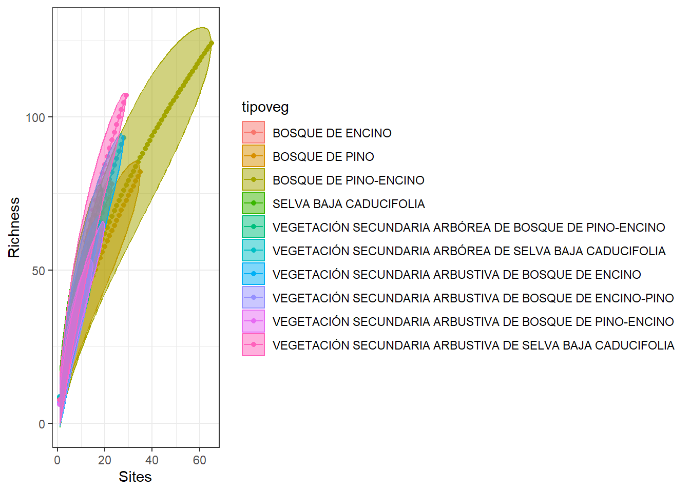
Curvas rango abundancia
Preprocesamiento
df4 <- df |>
select(TipoVeg, nom_cien, ParcelaId) |>
group_by(TipoVeg, nom_cien, ParcelaId) |>
count() |>
ungroup() |>
select(TipoVeg, nom_cien, ParcelaId, n) |>
as.data.frame() |>
mutate(across(nom_cien, ~gsub(" ", "_", .x))) |>
pivot_wider(id_cols = c(TipoVeg, ParcelaId),
names_from = nom_cien,
values_from = n,
values_fill = 0)
tiposveg <- df4 |>
group_by(TipoVeg) |>
count()|>
filter(n >= 10) |>
ungroup() |>
pull(TipoVeg)
df4 <- df4 |>
filter(TipoVeg %in% tiposveg) |>
select(-c(TipoVeg, ParcelaId)) |>
as.matrix()Cálculo de curvas de rango abundancia
help(rankabundance)Usan mismos datos de dune.env, así que podemos usar los objetos que ya creamos.
Hechas con los datos de los tipos de vegetación seleccionados.
resul <- rankabundance(x = df4)
especies <- rownames(resul)
resul |>
as_tibble() |>
mutate(Especie = especies) |>
ggplot(aes(x = rank,
y = abundance,
label = Especie)) +
geom_point() +
geom_line() +
geom_text(nudge_y = 1000,
angle = 90,
size = 1.2) +
# Si queremos ver solo parte del gráfico
scale_x_continuous(limits = c(1,10)) +
theme_bw() Warning: Removed 382 rows containing missing values or values outside the scale range
(`geom_point()`).Warning: Removed 382 rows containing missing values or values outside the scale range
(`geom_line()`).Warning: Removed 382 rows containing missing values or values outside the scale range
(`geom_text()`).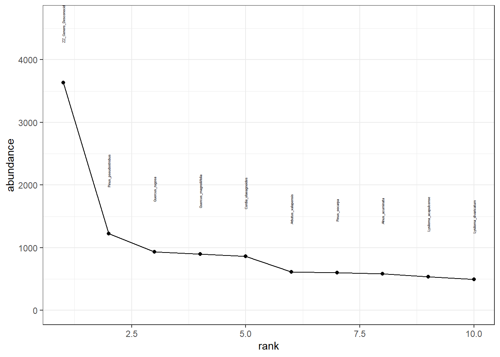
10 Especies más comunes
resul |>
as_tibble() |>
mutate(Especie = especies) |>
arrange(rank) |>
slice_head(n = 10) |>
distinct(Especie)# A tibble: 10 × 1
Especie
<chr>
1 ZZ_Genero_Desconocido_sp.
2 Pinus_pseudostrobus
3 Quercus_rugosa
4 Quercus_magnoliifolia
5 Cordia_elaeagnoides
6 Arbutus_xalapensis
7 Pinus_oocarpa
8 Alnus_acuminata
9 Lysiloma_acapulcense
10 Lysiloma_divaricatum iNEXT
Paquete de R enfocado en calcular los números de Hill.
Preprocesamiento
Diversidad por sitio y por comunidad: df1
tipo vegetación df_sitios: sitios.
Sacar los 10 tipos de vegetación con mauor número de sitios muestrados.
tipos_veg <- df |>
group_by(TipoVeg) |>
distinct(ParcelaId) |>
count() |>
arrange(desc(n)) |>
ungroup() |>
slice_head(n = 10) |>
pull(TipoVeg)
df1 <- df |>
filter(TipoVeg %in% tipos_veg) |>
select(TipoVeg, nom_cien) |>
group_by(TipoVeg, nom_cien) |>
count() |>
ungroup() |>
pivot_wider(id_cols = nom_cien,
names_from = TipoVeg,
values_from = n,
values_fill = 0) |>
select(-nom_cien) |>
as.data.frame()
# Si quisieran hacerlo por sitios
# df_sitios <- df |>
# filter(TipoVeg %in% tipos_veg) |>
# select(ParcelaId, nom_cien) |>
# group_by(ParcelaId, nom_cien) |>
# count() |>
# ungroup() |>
# pivot_wider(id_cols = nom_cien,
# names_from = ParcelaId,
# values_from = n,
# values_fill = 0) |>
# select(-nom_cien) |>
# as.data.frame()Números de Hill
Estimar números de hill con cierto número de individuos muestreados por tipo de vegetación.
- m: tamaño de muestra.
- Method: método de cálculo.
- valor de q: Exponente de número de Hill.
- SC: sample coverage.
- qD: valor de números de Hill
- Intervalos de confianza.
hills_tv <- estimateD(
x = df1,
q = c(0, 1, 2),
datatype = "abundance",
base = "size",
level = 9,
nboot = 50,
conf = 0.95
)Curva de acumularción de especies: Interpolación y Extrapolación
Primer prueba
# No corre, por qué
# iNEXT(x = df,
# q = c(0, 1, 2),
# datatype="abundance",
# endpoint = 120,
# nboot = 1)¿Qué signifca el error? Ver los datos que están entrando.
- endpoint: valor al que quieres interpolar o extrapolar todos los estimados.
- nboot: número de bootstraps.
# Por si quisieran hacerlo por sitios
# resul_s <- iNEXT(x = df_sitios,
# q = 0,
# datatype="abundance",
# endpoint = 120,
# nboot = 10)
resul <- iNEXT(x = df1,
q = 0,#c(0,1,2),
datatype="abundance",
# endpoint = 2100,
nboot = 10)Por comunidad
# por sitios
# plot(resul_s)
plot(resul)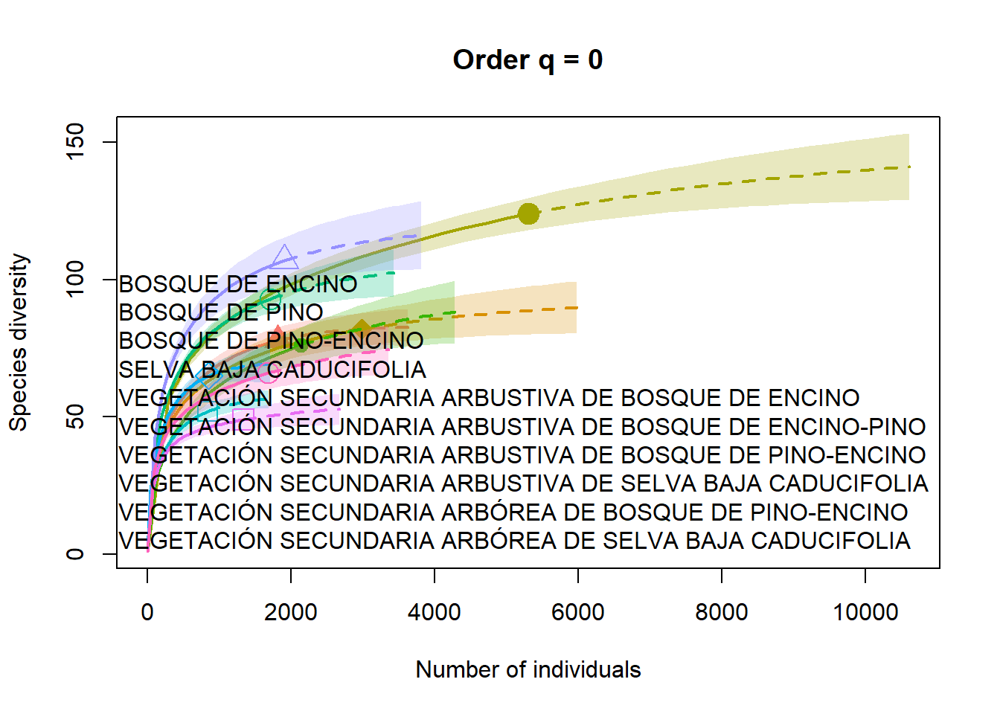
Resultados de iNext
Resultados básicos
Número de individuos muestrados, especies observadas, Sample Coverage estimada (qué tan completo fue el muestreo), y primeros conteos de frecuencias.
resul$DataInfo Assemblage n S.obs SC
1 BOSQUE DE ENCINO 1817 78 0.9934
2 BOSQUE DE PINO 2990 82 0.9957
3 BOSQUE DE PINO-ENCINO 5307 124 0.9947
4 SELVA BAJA CADUCIFOLIA 2140 76 0.9911
5 VEGETACIÓN SECUNDARIA ARBUSTIVA DE BOSQUE DE ENCINO 1715 93 0.9901
6 VEGETACIÓN SECUNDARIA ARBUSTIVA DE BOSQUE DE ENCINO-PINO 844 52 0.9894
7 VEGETACIÓN SECUNDARIA ARBUSTIVA DE BOSQUE DE PINO-ENCINO 857 65 0.9884
8 VEGETACIÓN SECUNDARIA ARBUSTIVA DE SELVA BAJA CADUCIFOLIA 1907 107 0.9911
9 VEGETACIÓN SECUNDARIA ARBÓREA DE BOSQUE DE PINO-ENCINO 1340 49 0.9955
10 VEGETACIÓN SECUNDARIA ARBÓREA DE SELVA BAJA CADUCIFOLIA 1682 66 0.9923
f1 f2 f3 f4 f5 f6 f7 f8 f9 f10
1 12 14 5 2 4 4 2 4 0 0
2 13 7 10 4 2 1 3 4 1 0
3 28 15 4 3 5 2 5 2 1 0
4 19 9 7 6 2 3 0 4 1 3
5 17 11 9 4 5 4 1 2 4 3
6 9 7 7 3 2 1 2 1 2 2
7 10 10 5 7 2 2 4 1 1 2
8 17 12 12 5 6 3 3 3 2 2
9 6 3 2 2 0 5 3 3 1 1
10 13 6 2 3 3 1 3 2 0 1Estimados de diversidad con muestras rarificadas y extrapoladas
Dos listas: 1) size_based, 2) coverage_based. Principales resultados: Order.q (número de Hill), qD (estimado del número de Hill), SC (Sample Coverage) e intervalos de confianza LCL y UCL.
resul$iNextEst$size_based
Assemblage m
1 BOSQUE DE ENCINO 1
2 BOSQUE DE ENCINO 101
3 BOSQUE DE ENCINO 202
4 BOSQUE DE ENCINO 303
5 BOSQUE DE ENCINO 404
6 BOSQUE DE ENCINO 505
7 BOSQUE DE ENCINO 606
8 BOSQUE DE ENCINO 706
9 BOSQUE DE ENCINO 807
10 BOSQUE DE ENCINO 908
11 BOSQUE DE ENCINO 1009
12 BOSQUE DE ENCINO 1110
13 BOSQUE DE ENCINO 1211
14 BOSQUE DE ENCINO 1311
15 BOSQUE DE ENCINO 1412
16 BOSQUE DE ENCINO 1513
17 BOSQUE DE ENCINO 1614
18 BOSQUE DE ENCINO 1715
19 BOSQUE DE ENCINO 1816
20 BOSQUE DE ENCINO 1817
21 BOSQUE DE ENCINO 1818
22 BOSQUE DE ENCINO 1913
23 BOSQUE DE ENCINO 2009
24 BOSQUE DE ENCINO 2104
25 BOSQUE DE ENCINO 2200
26 BOSQUE DE ENCINO 2295
27 BOSQUE DE ENCINO 2391
28 BOSQUE DE ENCINO 2487
29 BOSQUE DE ENCINO 2582
30 BOSQUE DE ENCINO 2678
31 BOSQUE DE ENCINO 2773
32 BOSQUE DE ENCINO 2869
33 BOSQUE DE ENCINO 2964
34 BOSQUE DE ENCINO 3060
35 BOSQUE DE ENCINO 3156
36 BOSQUE DE ENCINO 3251
37 BOSQUE DE ENCINO 3347
38 BOSQUE DE ENCINO 3442
39 BOSQUE DE ENCINO 3538
40 BOSQUE DE ENCINO 3634
41 BOSQUE DE PINO 1
42 BOSQUE DE PINO 167
43 BOSQUE DE PINO 333
44 BOSQUE DE PINO 499
45 BOSQUE DE PINO 665
46 BOSQUE DE PINO 831
47 BOSQUE DE PINO 997
48 BOSQUE DE PINO 1163
49 BOSQUE DE PINO 1329
50 BOSQUE DE PINO 1495
51 BOSQUE DE PINO 1661
52 BOSQUE DE PINO 1827
53 BOSQUE DE PINO 1993
54 BOSQUE DE PINO 2159
55 BOSQUE DE PINO 2325
56 BOSQUE DE PINO 2491
57 BOSQUE DE PINO 2657
58 BOSQUE DE PINO 2823
59 BOSQUE DE PINO 2989
60 BOSQUE DE PINO 2990
61 BOSQUE DE PINO 2991
62 BOSQUE DE PINO 3148
63 BOSQUE DE PINO 3305
64 BOSQUE DE PINO 3462
65 BOSQUE DE PINO 3620
66 BOSQUE DE PINO 3777
67 BOSQUE DE PINO 3934
68 BOSQUE DE PINO 4092
69 BOSQUE DE PINO 4249
70 BOSQUE DE PINO 4406
71 BOSQUE DE PINO 4564
72 BOSQUE DE PINO 4721
73 BOSQUE DE PINO 4878
74 BOSQUE DE PINO 5036
75 BOSQUE DE PINO 5193
76 BOSQUE DE PINO 5350
77 BOSQUE DE PINO 5508
78 BOSQUE DE PINO 5665
79 BOSQUE DE PINO 5822
80 BOSQUE DE PINO 5980
81 BOSQUE DE PINO-ENCINO 1
82 BOSQUE DE PINO-ENCINO 295
83 BOSQUE DE PINO-ENCINO 590
84 BOSQUE DE PINO-ENCINO 885
85 BOSQUE DE PINO-ENCINO 1179
86 BOSQUE DE PINO-ENCINO 1474
87 BOSQUE DE PINO-ENCINO 1769
88 BOSQUE DE PINO-ENCINO 2064
89 BOSQUE DE PINO-ENCINO 2358
90 BOSQUE DE PINO-ENCINO 2653
91 BOSQUE DE PINO-ENCINO 2948
92 BOSQUE DE PINO-ENCINO 3242
93 BOSQUE DE PINO-ENCINO 3537
94 BOSQUE DE PINO-ENCINO 3832
95 BOSQUE DE PINO-ENCINO 4127
96 BOSQUE DE PINO-ENCINO 4421
97 BOSQUE DE PINO-ENCINO 4716
98 BOSQUE DE PINO-ENCINO 5011
99 BOSQUE DE PINO-ENCINO 5306
100 BOSQUE DE PINO-ENCINO 5307
101 BOSQUE DE PINO-ENCINO 5308
102 BOSQUE DE PINO-ENCINO 5587
103 BOSQUE DE PINO-ENCINO 5866
104 BOSQUE DE PINO-ENCINO 6145
105 BOSQUE DE PINO-ENCINO 6425
106 BOSQUE DE PINO-ENCINO 6704
107 BOSQUE DE PINO-ENCINO 6983
108 BOSQUE DE PINO-ENCINO 7262
109 BOSQUE DE PINO-ENCINO 7542
110 BOSQUE DE PINO-ENCINO 7821
111 BOSQUE DE PINO-ENCINO 8100
112 BOSQUE DE PINO-ENCINO 8379
113 BOSQUE DE PINO-ENCINO 8659
114 BOSQUE DE PINO-ENCINO 8938
115 BOSQUE DE PINO-ENCINO 9217
116 BOSQUE DE PINO-ENCINO 9496
117 BOSQUE DE PINO-ENCINO 9776
118 BOSQUE DE PINO-ENCINO 10055
119 BOSQUE DE PINO-ENCINO 10334
120 BOSQUE DE PINO-ENCINO 10614
121 SELVA BAJA CADUCIFOLIA 1
122 SELVA BAJA CADUCIFOLIA 119
123 SELVA BAJA CADUCIFOLIA 238
124 SELVA BAJA CADUCIFOLIA 357
125 SELVA BAJA CADUCIFOLIA 476
126 SELVA BAJA CADUCIFOLIA 594
127 SELVA BAJA CADUCIFOLIA 713
128 SELVA BAJA CADUCIFOLIA 832
129 SELVA BAJA CADUCIFOLIA 951
130 SELVA BAJA CADUCIFOLIA 1070
131 SELVA BAJA CADUCIFOLIA 1188
132 SELVA BAJA CADUCIFOLIA 1307
133 SELVA BAJA CADUCIFOLIA 1426
134 SELVA BAJA CADUCIFOLIA 1545
135 SELVA BAJA CADUCIFOLIA 1663
136 SELVA BAJA CADUCIFOLIA 1782
137 SELVA BAJA CADUCIFOLIA 1901
138 SELVA BAJA CADUCIFOLIA 2020
139 SELVA BAJA CADUCIFOLIA 2139
140 SELVA BAJA CADUCIFOLIA 2140
141 SELVA BAJA CADUCIFOLIA 2141
142 SELVA BAJA CADUCIFOLIA 2253
143 SELVA BAJA CADUCIFOLIA 2366
144 SELVA BAJA CADUCIFOLIA 2478
145 SELVA BAJA CADUCIFOLIA 2591
146 SELVA BAJA CADUCIFOLIA 2703
147 SELVA BAJA CADUCIFOLIA 2816
148 SELVA BAJA CADUCIFOLIA 2929
149 SELVA BAJA CADUCIFOLIA 3041
150 SELVA BAJA CADUCIFOLIA 3154
151 SELVA BAJA CADUCIFOLIA 3266
152 SELVA BAJA CADUCIFOLIA 3379
153 SELVA BAJA CADUCIFOLIA 3491
154 SELVA BAJA CADUCIFOLIA 3604
155 SELVA BAJA CADUCIFOLIA 3717
156 SELVA BAJA CADUCIFOLIA 3829
157 SELVA BAJA CADUCIFOLIA 3942
158 SELVA BAJA CADUCIFOLIA 4054
159 SELVA BAJA CADUCIFOLIA 4167
160 SELVA BAJA CADUCIFOLIA 4280
161 VEGETACIÓN SECUNDARIA ARBUSTIVA DE BOSQUE DE ENCINO 1
162 VEGETACIÓN SECUNDARIA ARBUSTIVA DE BOSQUE DE ENCINO 96
163 VEGETACIÓN SECUNDARIA ARBUSTIVA DE BOSQUE DE ENCINO 191
164 VEGETACIÓN SECUNDARIA ARBUSTIVA DE BOSQUE DE ENCINO 286
165 VEGETACIÓN SECUNDARIA ARBUSTIVA DE BOSQUE DE ENCINO 381
166 VEGETACIÓN SECUNDARIA ARBUSTIVA DE BOSQUE DE ENCINO 476
167 VEGETACIÓN SECUNDARIA ARBUSTIVA DE BOSQUE DE ENCINO 572
168 VEGETACIÓN SECUNDARIA ARBUSTIVA DE BOSQUE DE ENCINO 667
169 VEGETACIÓN SECUNDARIA ARBUSTIVA DE BOSQUE DE ENCINO 762
170 VEGETACIÓN SECUNDARIA ARBUSTIVA DE BOSQUE DE ENCINO 857
171 VEGETACIÓN SECUNDARIA ARBUSTIVA DE BOSQUE DE ENCINO 952
172 VEGETACIÓN SECUNDARIA ARBUSTIVA DE BOSQUE DE ENCINO 1047
173 VEGETACIÓN SECUNDARIA ARBUSTIVA DE BOSQUE DE ENCINO 1143
174 VEGETACIÓN SECUNDARIA ARBUSTIVA DE BOSQUE DE ENCINO 1238
175 VEGETACIÓN SECUNDARIA ARBUSTIVA DE BOSQUE DE ENCINO 1333
176 VEGETACIÓN SECUNDARIA ARBUSTIVA DE BOSQUE DE ENCINO 1428
177 VEGETACIÓN SECUNDARIA ARBUSTIVA DE BOSQUE DE ENCINO 1523
178 VEGETACIÓN SECUNDARIA ARBUSTIVA DE BOSQUE DE ENCINO 1618
179 VEGETACIÓN SECUNDARIA ARBUSTIVA DE BOSQUE DE ENCINO 1714
180 VEGETACIÓN SECUNDARIA ARBUSTIVA DE BOSQUE DE ENCINO 1715
181 VEGETACIÓN SECUNDARIA ARBUSTIVA DE BOSQUE DE ENCINO 1716
182 VEGETACIÓN SECUNDARIA ARBUSTIVA DE BOSQUE DE ENCINO 1806
183 VEGETACIÓN SECUNDARIA ARBUSTIVA DE BOSQUE DE ENCINO 1896
184 VEGETACIÓN SECUNDARIA ARBUSTIVA DE BOSQUE DE ENCINO 1986
185 VEGETACIÓN SECUNDARIA ARBUSTIVA DE BOSQUE DE ENCINO 2076
186 VEGETACIÓN SECUNDARIA ARBUSTIVA DE BOSQUE DE ENCINO 2167
187 VEGETACIÓN SECUNDARIA ARBUSTIVA DE BOSQUE DE ENCINO 2257
188 VEGETACIÓN SECUNDARIA ARBUSTIVA DE BOSQUE DE ENCINO 2347
189 VEGETACIÓN SECUNDARIA ARBUSTIVA DE BOSQUE DE ENCINO 2437
190 VEGETACIÓN SECUNDARIA ARBUSTIVA DE BOSQUE DE ENCINO 2527
191 VEGETACIÓN SECUNDARIA ARBUSTIVA DE BOSQUE DE ENCINO 2618
192 VEGETACIÓN SECUNDARIA ARBUSTIVA DE BOSQUE DE ENCINO 2708
193 VEGETACIÓN SECUNDARIA ARBUSTIVA DE BOSQUE DE ENCINO 2798
194 VEGETACIÓN SECUNDARIA ARBUSTIVA DE BOSQUE DE ENCINO 2888
195 VEGETACIÓN SECUNDARIA ARBUSTIVA DE BOSQUE DE ENCINO 2978
196 VEGETACIÓN SECUNDARIA ARBUSTIVA DE BOSQUE DE ENCINO 3069
197 VEGETACIÓN SECUNDARIA ARBUSTIVA DE BOSQUE DE ENCINO 3159
198 VEGETACIÓN SECUNDARIA ARBUSTIVA DE BOSQUE DE ENCINO 3249
199 VEGETACIÓN SECUNDARIA ARBUSTIVA DE BOSQUE DE ENCINO 3339
200 VEGETACIÓN SECUNDARIA ARBUSTIVA DE BOSQUE DE ENCINO 3430
201 VEGETACIÓN SECUNDARIA ARBUSTIVA DE BOSQUE DE ENCINO-PINO 1
202 VEGETACIÓN SECUNDARIA ARBUSTIVA DE BOSQUE DE ENCINO-PINO 47
203 VEGETACIÓN SECUNDARIA ARBUSTIVA DE BOSQUE DE ENCINO-PINO 94
204 VEGETACIÓN SECUNDARIA ARBUSTIVA DE BOSQUE DE ENCINO-PINO 141
205 VEGETACIÓN SECUNDARIA ARBUSTIVA DE BOSQUE DE ENCINO-PINO 188
206 VEGETACIÓN SECUNDARIA ARBUSTIVA DE BOSQUE DE ENCINO-PINO 234
207 VEGETACIÓN SECUNDARIA ARBUSTIVA DE BOSQUE DE ENCINO-PINO 281
208 VEGETACIÓN SECUNDARIA ARBUSTIVA DE BOSQUE DE ENCINO-PINO 328
209 VEGETACIÓN SECUNDARIA ARBUSTIVA DE BOSQUE DE ENCINO-PINO 375
210 VEGETACIÓN SECUNDARIA ARBUSTIVA DE BOSQUE DE ENCINO-PINO 422
211 VEGETACIÓN SECUNDARIA ARBUSTIVA DE BOSQUE DE ENCINO-PINO 468
212 VEGETACIÓN SECUNDARIA ARBUSTIVA DE BOSQUE DE ENCINO-PINO 515
213 VEGETACIÓN SECUNDARIA ARBUSTIVA DE BOSQUE DE ENCINO-PINO 562
214 VEGETACIÓN SECUNDARIA ARBUSTIVA DE BOSQUE DE ENCINO-PINO 609
215 VEGETACIÓN SECUNDARIA ARBUSTIVA DE BOSQUE DE ENCINO-PINO 655
216 VEGETACIÓN SECUNDARIA ARBUSTIVA DE BOSQUE DE ENCINO-PINO 702
217 VEGETACIÓN SECUNDARIA ARBUSTIVA DE BOSQUE DE ENCINO-PINO 749
218 VEGETACIÓN SECUNDARIA ARBUSTIVA DE BOSQUE DE ENCINO-PINO 796
219 VEGETACIÓN SECUNDARIA ARBUSTIVA DE BOSQUE DE ENCINO-PINO 843
220 VEGETACIÓN SECUNDARIA ARBUSTIVA DE BOSQUE DE ENCINO-PINO 844
221 VEGETACIÓN SECUNDARIA ARBUSTIVA DE BOSQUE DE ENCINO-PINO 845
222 VEGETACIÓN SECUNDARIA ARBUSTIVA DE BOSQUE DE ENCINO-PINO 889
223 VEGETACIÓN SECUNDARIA ARBUSTIVA DE BOSQUE DE ENCINO-PINO 933
224 VEGETACIÓN SECUNDARIA ARBUSTIVA DE BOSQUE DE ENCINO-PINO 978
225 VEGETACIÓN SECUNDARIA ARBUSTIVA DE BOSQUE DE ENCINO-PINO 1022
226 VEGETACIÓN SECUNDARIA ARBUSTIVA DE BOSQUE DE ENCINO-PINO 1066
227 VEGETACIÓN SECUNDARIA ARBUSTIVA DE BOSQUE DE ENCINO-PINO 1111
228 VEGETACIÓN SECUNDARIA ARBUSTIVA DE BOSQUE DE ENCINO-PINO 1155
229 VEGETACIÓN SECUNDARIA ARBUSTIVA DE BOSQUE DE ENCINO-PINO 1199
230 VEGETACIÓN SECUNDARIA ARBUSTIVA DE BOSQUE DE ENCINO-PINO 1244
231 VEGETACIÓN SECUNDARIA ARBUSTIVA DE BOSQUE DE ENCINO-PINO 1288
232 VEGETACIÓN SECUNDARIA ARBUSTIVA DE BOSQUE DE ENCINO-PINO 1333
233 VEGETACIÓN SECUNDARIA ARBUSTIVA DE BOSQUE DE ENCINO-PINO 1377
234 VEGETACIÓN SECUNDARIA ARBUSTIVA DE BOSQUE DE ENCINO-PINO 1421
235 VEGETACIÓN SECUNDARIA ARBUSTIVA DE BOSQUE DE ENCINO-PINO 1466
236 VEGETACIÓN SECUNDARIA ARBUSTIVA DE BOSQUE DE ENCINO-PINO 1510
237 VEGETACIÓN SECUNDARIA ARBUSTIVA DE BOSQUE DE ENCINO-PINO 1554
238 VEGETACIÓN SECUNDARIA ARBUSTIVA DE BOSQUE DE ENCINO-PINO 1599
239 VEGETACIÓN SECUNDARIA ARBUSTIVA DE BOSQUE DE ENCINO-PINO 1643
240 VEGETACIÓN SECUNDARIA ARBUSTIVA DE BOSQUE DE ENCINO-PINO 1688
241 VEGETACIÓN SECUNDARIA ARBUSTIVA DE BOSQUE DE PINO-ENCINO 1
242 VEGETACIÓN SECUNDARIA ARBUSTIVA DE BOSQUE DE PINO-ENCINO 48
243 VEGETACIÓN SECUNDARIA ARBUSTIVA DE BOSQUE DE PINO-ENCINO 96
244 VEGETACIÓN SECUNDARIA ARBUSTIVA DE BOSQUE DE PINO-ENCINO 143
245 VEGETACIÓN SECUNDARIA ARBUSTIVA DE BOSQUE DE PINO-ENCINO 191
246 VEGETACIÓN SECUNDARIA ARBUSTIVA DE BOSQUE DE PINO-ENCINO 238
247 VEGETACIÓN SECUNDARIA ARBUSTIVA DE BOSQUE DE PINO-ENCINO 286
248 VEGETACIÓN SECUNDARIA ARBUSTIVA DE BOSQUE DE PINO-ENCINO 333
249 VEGETACIÓN SECUNDARIA ARBUSTIVA DE BOSQUE DE PINO-ENCINO 381
250 VEGETACIÓN SECUNDARIA ARBUSTIVA DE BOSQUE DE PINO-ENCINO 428
251 VEGETACIÓN SECUNDARIA ARBUSTIVA DE BOSQUE DE PINO-ENCINO 476
252 VEGETACIÓN SECUNDARIA ARBUSTIVA DE BOSQUE DE PINO-ENCINO 523
253 VEGETACIÓN SECUNDARIA ARBUSTIVA DE BOSQUE DE PINO-ENCINO 571
254 VEGETACIÓN SECUNDARIA ARBUSTIVA DE BOSQUE DE PINO-ENCINO 618
255 VEGETACIÓN SECUNDARIA ARBUSTIVA DE BOSQUE DE PINO-ENCINO 666
256 VEGETACIÓN SECUNDARIA ARBUSTIVA DE BOSQUE DE PINO-ENCINO 713
257 VEGETACIÓN SECUNDARIA ARBUSTIVA DE BOSQUE DE PINO-ENCINO 761
258 VEGETACIÓN SECUNDARIA ARBUSTIVA DE BOSQUE DE PINO-ENCINO 808
259 VEGETACIÓN SECUNDARIA ARBUSTIVA DE BOSQUE DE PINO-ENCINO 856
260 VEGETACIÓN SECUNDARIA ARBUSTIVA DE BOSQUE DE PINO-ENCINO 857
261 VEGETACIÓN SECUNDARIA ARBUSTIVA DE BOSQUE DE PINO-ENCINO 858
262 VEGETACIÓN SECUNDARIA ARBUSTIVA DE BOSQUE DE PINO-ENCINO 903
263 VEGETACIÓN SECUNDARIA ARBUSTIVA DE BOSQUE DE PINO-ENCINO 948
264 VEGETACIÓN SECUNDARIA ARBUSTIVA DE BOSQUE DE PINO-ENCINO 993
265 VEGETACIÓN SECUNDARIA ARBUSTIVA DE BOSQUE DE PINO-ENCINO 1038
266 VEGETACIÓN SECUNDARIA ARBUSTIVA DE BOSQUE DE PINO-ENCINO 1083
267 VEGETACIÓN SECUNDARIA ARBUSTIVA DE BOSQUE DE PINO-ENCINO 1128
268 VEGETACIÓN SECUNDARIA ARBUSTIVA DE BOSQUE DE PINO-ENCINO 1173
269 VEGETACIÓN SECUNDARIA ARBUSTIVA DE BOSQUE DE PINO-ENCINO 1218
270 VEGETACIÓN SECUNDARIA ARBUSTIVA DE BOSQUE DE PINO-ENCINO 1263
271 VEGETACIÓN SECUNDARIA ARBUSTIVA DE BOSQUE DE PINO-ENCINO 1308
272 VEGETACIÓN SECUNDARIA ARBUSTIVA DE BOSQUE DE PINO-ENCINO 1353
273 VEGETACIÓN SECUNDARIA ARBUSTIVA DE BOSQUE DE PINO-ENCINO 1398
274 VEGETACIÓN SECUNDARIA ARBUSTIVA DE BOSQUE DE PINO-ENCINO 1443
275 VEGETACIÓN SECUNDARIA ARBUSTIVA DE BOSQUE DE PINO-ENCINO 1488
276 VEGETACIÓN SECUNDARIA ARBUSTIVA DE BOSQUE DE PINO-ENCINO 1533
277 VEGETACIÓN SECUNDARIA ARBUSTIVA DE BOSQUE DE PINO-ENCINO 1578
278 VEGETACIÓN SECUNDARIA ARBUSTIVA DE BOSQUE DE PINO-ENCINO 1623
279 VEGETACIÓN SECUNDARIA ARBUSTIVA DE BOSQUE DE PINO-ENCINO 1668
280 VEGETACIÓN SECUNDARIA ARBUSTIVA DE BOSQUE DE PINO-ENCINO 1714
281 VEGETACIÓN SECUNDARIA ARBUSTIVA DE SELVA BAJA CADUCIFOLIA 1
282 VEGETACIÓN SECUNDARIA ARBUSTIVA DE SELVA BAJA CADUCIFOLIA 106
283 VEGETACIÓN SECUNDARIA ARBUSTIVA DE SELVA BAJA CADUCIFOLIA 212
284 VEGETACIÓN SECUNDARIA ARBUSTIVA DE SELVA BAJA CADUCIFOLIA 318
285 VEGETACIÓN SECUNDARIA ARBUSTIVA DE SELVA BAJA CADUCIFOLIA 424
286 VEGETACIÓN SECUNDARIA ARBUSTIVA DE SELVA BAJA CADUCIFOLIA 530
287 VEGETACIÓN SECUNDARIA ARBUSTIVA DE SELVA BAJA CADUCIFOLIA 636
288 VEGETACIÓN SECUNDARIA ARBUSTIVA DE SELVA BAJA CADUCIFOLIA 741
289 VEGETACIÓN SECUNDARIA ARBUSTIVA DE SELVA BAJA CADUCIFOLIA 847
290 VEGETACIÓN SECUNDARIA ARBUSTIVA DE SELVA BAJA CADUCIFOLIA 953
291 VEGETACIÓN SECUNDARIA ARBUSTIVA DE SELVA BAJA CADUCIFOLIA 1059
292 VEGETACIÓN SECUNDARIA ARBUSTIVA DE SELVA BAJA CADUCIFOLIA 1165
293 VEGETACIÓN SECUNDARIA ARBUSTIVA DE SELVA BAJA CADUCIFOLIA 1271
294 VEGETACIÓN SECUNDARIA ARBUSTIVA DE SELVA BAJA CADUCIFOLIA 1376
295 VEGETACIÓN SECUNDARIA ARBUSTIVA DE SELVA BAJA CADUCIFOLIA 1482
296 VEGETACIÓN SECUNDARIA ARBUSTIVA DE SELVA BAJA CADUCIFOLIA 1588
297 VEGETACIÓN SECUNDARIA ARBUSTIVA DE SELVA BAJA CADUCIFOLIA 1694
298 VEGETACIÓN SECUNDARIA ARBUSTIVA DE SELVA BAJA CADUCIFOLIA 1800
299 VEGETACIÓN SECUNDARIA ARBUSTIVA DE SELVA BAJA CADUCIFOLIA 1906
300 VEGETACIÓN SECUNDARIA ARBUSTIVA DE SELVA BAJA CADUCIFOLIA 1907
301 VEGETACIÓN SECUNDARIA ARBUSTIVA DE SELVA BAJA CADUCIFOLIA 1908
302 VEGETACIÓN SECUNDARIA ARBUSTIVA DE SELVA BAJA CADUCIFOLIA 2008
303 VEGETACIÓN SECUNDARIA ARBUSTIVA DE SELVA BAJA CADUCIFOLIA 2108
304 VEGETACIÓN SECUNDARIA ARBUSTIVA DE SELVA BAJA CADUCIFOLIA 2208
305 VEGETACIÓN SECUNDARIA ARBUSTIVA DE SELVA BAJA CADUCIFOLIA 2309
306 VEGETACIÓN SECUNDARIA ARBUSTIVA DE SELVA BAJA CADUCIFOLIA 2409
307 VEGETACIÓN SECUNDARIA ARBUSTIVA DE SELVA BAJA CADUCIFOLIA 2509
308 VEGETACIÓN SECUNDARIA ARBUSTIVA DE SELVA BAJA CADUCIFOLIA 2610
309 VEGETACIÓN SECUNDARIA ARBUSTIVA DE SELVA BAJA CADUCIFOLIA 2710
310 VEGETACIÓN SECUNDARIA ARBUSTIVA DE SELVA BAJA CADUCIFOLIA 2810
311 VEGETACIÓN SECUNDARIA ARBUSTIVA DE SELVA BAJA CADUCIFOLIA 2911
312 VEGETACIÓN SECUNDARIA ARBUSTIVA DE SELVA BAJA CADUCIFOLIA 3011
313 VEGETACIÓN SECUNDARIA ARBUSTIVA DE SELVA BAJA CADUCIFOLIA 3111
314 VEGETACIÓN SECUNDARIA ARBUSTIVA DE SELVA BAJA CADUCIFOLIA 3212
315 VEGETACIÓN SECUNDARIA ARBUSTIVA DE SELVA BAJA CADUCIFOLIA 3312
316 VEGETACIÓN SECUNDARIA ARBUSTIVA DE SELVA BAJA CADUCIFOLIA 3412
317 VEGETACIÓN SECUNDARIA ARBUSTIVA DE SELVA BAJA CADUCIFOLIA 3513
318 VEGETACIÓN SECUNDARIA ARBUSTIVA DE SELVA BAJA CADUCIFOLIA 3613
319 VEGETACIÓN SECUNDARIA ARBUSTIVA DE SELVA BAJA CADUCIFOLIA 3713
320 VEGETACIÓN SECUNDARIA ARBUSTIVA DE SELVA BAJA CADUCIFOLIA 3814
321 VEGETACIÓN SECUNDARIA ARBÓREA DE BOSQUE DE PINO-ENCINO 1
322 VEGETACIÓN SECUNDARIA ARBÓREA DE BOSQUE DE PINO-ENCINO 75
323 VEGETACIÓN SECUNDARIA ARBÓREA DE BOSQUE DE PINO-ENCINO 149
324 VEGETACIÓN SECUNDARIA ARBÓREA DE BOSQUE DE PINO-ENCINO 224
325 VEGETACIÓN SECUNDARIA ARBÓREA DE BOSQUE DE PINO-ENCINO 298
326 VEGETACIÓN SECUNDARIA ARBÓREA DE BOSQUE DE PINO-ENCINO 372
327 VEGETACIÓN SECUNDARIA ARBÓREA DE BOSQUE DE PINO-ENCINO 447
328 VEGETACIÓN SECUNDARIA ARBÓREA DE BOSQUE DE PINO-ENCINO 521
329 VEGETACIÓN SECUNDARIA ARBÓREA DE BOSQUE DE PINO-ENCINO 595
330 VEGETACIÓN SECUNDARIA ARBÓREA DE BOSQUE DE PINO-ENCINO 670
331 VEGETACIÓN SECUNDARIA ARBÓREA DE BOSQUE DE PINO-ENCINO 744
332 VEGETACIÓN SECUNDARIA ARBÓREA DE BOSQUE DE PINO-ENCINO 818
333 VEGETACIÓN SECUNDARIA ARBÓREA DE BOSQUE DE PINO-ENCINO 893
334 VEGETACIÓN SECUNDARIA ARBÓREA DE BOSQUE DE PINO-ENCINO 967
335 VEGETACIÓN SECUNDARIA ARBÓREA DE BOSQUE DE PINO-ENCINO 1041
336 VEGETACIÓN SECUNDARIA ARBÓREA DE BOSQUE DE PINO-ENCINO 1116
337 VEGETACIÓN SECUNDARIA ARBÓREA DE BOSQUE DE PINO-ENCINO 1190
338 VEGETACIÓN SECUNDARIA ARBÓREA DE BOSQUE DE PINO-ENCINO 1264
339 VEGETACIÓN SECUNDARIA ARBÓREA DE BOSQUE DE PINO-ENCINO 1339
340 VEGETACIÓN SECUNDARIA ARBÓREA DE BOSQUE DE PINO-ENCINO 1340
341 VEGETACIÓN SECUNDARIA ARBÓREA DE BOSQUE DE PINO-ENCINO 1341
342 VEGETACIÓN SECUNDARIA ARBÓREA DE BOSQUE DE PINO-ENCINO 1411
343 VEGETACIÓN SECUNDARIA ARBÓREA DE BOSQUE DE PINO-ENCINO 1481
344 VEGETACIÓN SECUNDARIA ARBÓREA DE BOSQUE DE PINO-ENCINO 1552
345 VEGETACIÓN SECUNDARIA ARBÓREA DE BOSQUE DE PINO-ENCINO 1622
346 VEGETACIÓN SECUNDARIA ARBÓREA DE BOSQUE DE PINO-ENCINO 1693
347 VEGETACIÓN SECUNDARIA ARBÓREA DE BOSQUE DE PINO-ENCINO 1763
348 VEGETACIÓN SECUNDARIA ARBÓREA DE BOSQUE DE PINO-ENCINO 1834
349 VEGETACIÓN SECUNDARIA ARBÓREA DE BOSQUE DE PINO-ENCINO 1904
350 VEGETACIÓN SECUNDARIA ARBÓREA DE BOSQUE DE PINO-ENCINO 1975
351 VEGETACIÓN SECUNDARIA ARBÓREA DE BOSQUE DE PINO-ENCINO 2045
352 VEGETACIÓN SECUNDARIA ARBÓREA DE BOSQUE DE PINO-ENCINO 2116
353 VEGETACIÓN SECUNDARIA ARBÓREA DE BOSQUE DE PINO-ENCINO 2186
354 VEGETACIÓN SECUNDARIA ARBÓREA DE BOSQUE DE PINO-ENCINO 2257
355 VEGETACIÓN SECUNDARIA ARBÓREA DE BOSQUE DE PINO-ENCINO 2327
356 VEGETACIÓN SECUNDARIA ARBÓREA DE BOSQUE DE PINO-ENCINO 2398
357 VEGETACIÓN SECUNDARIA ARBÓREA DE BOSQUE DE PINO-ENCINO 2468
358 VEGETACIÓN SECUNDARIA ARBÓREA DE BOSQUE DE PINO-ENCINO 2539
359 VEGETACIÓN SECUNDARIA ARBÓREA DE BOSQUE DE PINO-ENCINO 2609
360 VEGETACIÓN SECUNDARIA ARBÓREA DE BOSQUE DE PINO-ENCINO 2680
361 VEGETACIÓN SECUNDARIA ARBÓREA DE SELVA BAJA CADUCIFOLIA 1
362 VEGETACIÓN SECUNDARIA ARBÓREA DE SELVA BAJA CADUCIFOLIA 94
363 VEGETACIÓN SECUNDARIA ARBÓREA DE SELVA BAJA CADUCIFOLIA 187
364 VEGETACIÓN SECUNDARIA ARBÓREA DE SELVA BAJA CADUCIFOLIA 281
365 VEGETACIÓN SECUNDARIA ARBÓREA DE SELVA BAJA CADUCIFOLIA 374
366 VEGETACIÓN SECUNDARIA ARBÓREA DE SELVA BAJA CADUCIFOLIA 467
367 VEGETACIÓN SECUNDARIA ARBÓREA DE SELVA BAJA CADUCIFOLIA 561
368 VEGETACIÓN SECUNDARIA ARBÓREA DE SELVA BAJA CADUCIFOLIA 654
369 VEGETACIÓN SECUNDARIA ARBÓREA DE SELVA BAJA CADUCIFOLIA 747
370 VEGETACIÓN SECUNDARIA ARBÓREA DE SELVA BAJA CADUCIFOLIA 841
371 VEGETACIÓN SECUNDARIA ARBÓREA DE SELVA BAJA CADUCIFOLIA 934
372 VEGETACIÓN SECUNDARIA ARBÓREA DE SELVA BAJA CADUCIFOLIA 1027
373 VEGETACIÓN SECUNDARIA ARBÓREA DE SELVA BAJA CADUCIFOLIA 1121
374 VEGETACIÓN SECUNDARIA ARBÓREA DE SELVA BAJA CADUCIFOLIA 1214
375 VEGETACIÓN SECUNDARIA ARBÓREA DE SELVA BAJA CADUCIFOLIA 1307
376 VEGETACIÓN SECUNDARIA ARBÓREA DE SELVA BAJA CADUCIFOLIA 1401
377 VEGETACIÓN SECUNDARIA ARBÓREA DE SELVA BAJA CADUCIFOLIA 1494
378 VEGETACIÓN SECUNDARIA ARBÓREA DE SELVA BAJA CADUCIFOLIA 1587
379 VEGETACIÓN SECUNDARIA ARBÓREA DE SELVA BAJA CADUCIFOLIA 1681
380 VEGETACIÓN SECUNDARIA ARBÓREA DE SELVA BAJA CADUCIFOLIA 1682
381 VEGETACIÓN SECUNDARIA ARBÓREA DE SELVA BAJA CADUCIFOLIA 1683
382 VEGETACIÓN SECUNDARIA ARBÓREA DE SELVA BAJA CADUCIFOLIA 1771
383 VEGETACIÓN SECUNDARIA ARBÓREA DE SELVA BAJA CADUCIFOLIA 1859
384 VEGETACIÓN SECUNDARIA ARBÓREA DE SELVA BAJA CADUCIFOLIA 1948
385 VEGETACIÓN SECUNDARIA ARBÓREA DE SELVA BAJA CADUCIFOLIA 2036
386 VEGETACIÓN SECUNDARIA ARBÓREA DE SELVA BAJA CADUCIFOLIA 2125
387 VEGETACIÓN SECUNDARIA ARBÓREA DE SELVA BAJA CADUCIFOLIA 2213
388 VEGETACIÓN SECUNDARIA ARBÓREA DE SELVA BAJA CADUCIFOLIA 2302
389 VEGETACIÓN SECUNDARIA ARBÓREA DE SELVA BAJA CADUCIFOLIA 2390
390 VEGETACIÓN SECUNDARIA ARBÓREA DE SELVA BAJA CADUCIFOLIA 2479
391 VEGETACIÓN SECUNDARIA ARBÓREA DE SELVA BAJA CADUCIFOLIA 2567
392 VEGETACIÓN SECUNDARIA ARBÓREA DE SELVA BAJA CADUCIFOLIA 2656
393 VEGETACIÓN SECUNDARIA ARBÓREA DE SELVA BAJA CADUCIFOLIA 2744
394 VEGETACIÓN SECUNDARIA ARBÓREA DE SELVA BAJA CADUCIFOLIA 2833
395 VEGETACIÓN SECUNDARIA ARBÓREA DE SELVA BAJA CADUCIFOLIA 2921
396 VEGETACIÓN SECUNDARIA ARBÓREA DE SELVA BAJA CADUCIFOLIA 3010
397 VEGETACIÓN SECUNDARIA ARBÓREA DE SELVA BAJA CADUCIFOLIA 3098
398 VEGETACIÓN SECUNDARIA ARBÓREA DE SELVA BAJA CADUCIFOLIA 3187
399 VEGETACIÓN SECUNDARIA ARBÓREA DE SELVA BAJA CADUCIFOLIA 3275
400 VEGETACIÓN SECUNDARIA ARBÓREA DE SELVA BAJA CADUCIFOLIA 3364
Method Order.q qD qD.LCL qD.UCL SC SC.LCL SC.UCL
1 Rarefaction 0 1.000 1.000 1.000 0.046340 0.042022 0.050658
2 Rarefaction 0 33.118 31.759 34.478 0.867918 0.858134 0.877702
3 Rarefaction 0 42.939 40.994 44.884 0.925772 0.919173 0.932370
4 Rarefaction 0 49.239 46.873 51.604 0.947211 0.941667 0.952754
5 Rarefaction 0 53.928 51.198 56.658 0.959078 0.954102 0.964055
6 Rarefaction 0 57.653 54.594 60.712 0.966753 0.962274 0.971233
7 Rarefaction 0 60.726 57.377 64.076 0.972148 0.968115 0.976181
8 Rarefaction 0 63.306 59.707 66.904 0.976119 0.972438 0.979800
9 Rarefaction 0 65.556 61.743 69.369 0.979226 0.975785 0.982667
10 Rarefaction 0 67.526 63.530 71.522 0.981711 0.978399 0.985023
11 Rarefaction 0 69.268 65.113 73.422 0.983756 0.980488 0.987023
12 Rarefaction 0 70.820 66.524 75.116 0.985483 0.982210 0.988756
13 Rarefaction 0 72.210 67.782 76.637 0.986978 0.983678 0.990277
14 Rarefaction 0 73.446 68.892 78.000 0.988286 0.984961 0.991611
15 Rarefaction 0 74.568 69.887 79.250 0.989476 0.986138 0.992815
16 Rarefaction 0 75.576 70.763 80.390 0.990565 0.987233 0.993896
17 Rarefaction 0 76.478 71.527 81.429 0.991572 0.988269 0.994875
18 Rarefaction 0 77.282 72.187 82.377 0.992513 0.989262 0.995763
19 Rarefaction 0 77.993 72.748 83.239 0.993396 0.990220 0.996571
20 Observed 0 78.000 72.753 83.247 0.993404 0.990229 0.996579
21 Extrapolation 0 78.007 72.758 83.255 0.993413 0.990239 0.996586
22 Extrapolation 0 78.596 73.201 83.992 0.994169 0.991075 0.997263
23 Extrapolation 0 79.123 73.575 84.671 0.994845 0.991833 0.997857
24 Extrapolation 0 79.584 73.884 85.285 0.995437 0.992510 0.998365
25 Extrapolation 0 79.997 74.140 85.853 0.995966 0.993128 0.998805
26 Extrapolation 0 80.358 74.347 86.368 0.996430 0.993683 0.999176
27 Extrapolation 0 80.680 74.515 86.846 0.996844 0.994194 0.999494
28 Extrapolation 0 80.966 74.647 87.284 0.997210 0.994659 0.999761
29 Extrapolation 0 81.215 74.748 87.683 0.997530 0.995079 0.999981
30 Extrapolation 0 81.439 74.824 88.053 0.997817 0.995467 1.000000
31 Extrapolation 0 81.634 74.878 88.390 0.998067 0.995818 1.000000
32 Extrapolation 0 81.809 74.913 88.704 0.998292 0.996143 1.000000
33 Extrapolation 0 81.962 74.933 88.990 0.998488 0.996437 1.000000
34 Extrapolation 0 82.098 74.940 89.256 0.998663 0.996710 1.000000
35 Extrapolation 0 82.219 74.936 89.502 0.998818 0.996960 1.000000
36 Extrapolation 0 82.325 74.923 89.726 0.998954 0.997188 1.000000
37 Extrapolation 0 82.419 74.903 89.935 0.999075 0.997399 1.000000
38 Extrapolation 0 82.502 74.878 90.126 0.999181 0.997590 1.000000
39 Extrapolation 0 82.576 74.848 90.304 0.999276 0.997769 1.000000
40 Extrapolation 0 82.641 74.814 90.469 0.999360 0.997933 1.000000
41 Rarefaction 0 1.000 1.000 1.000 0.057347 0.053982 0.060712
42 Rarefaction 0 38.637 37.113 40.162 0.914600 0.908934 0.920265
43 Rarefaction 0 48.732 46.576 50.888 0.955204 0.951509 0.958900
44 Rarefaction 0 54.859 52.279 57.439 0.969219 0.966341 0.972098
45 Rarefaction 0 59.322 56.409 62.235 0.976407 0.974138 0.978677
46 Rarefaction 0 62.843 59.652 66.034 0.980896 0.979020 0.982773
47 Rarefaction 0 65.742 62.307 69.177 0.984030 0.982354 0.985706
48 Rarefaction 0 68.192 64.529 71.854 0.986368 0.984750 0.987987
49 Rarefaction 0 70.298 66.414 74.182 0.988192 0.986547 0.989838
50 Rarefaction 0 72.133 68.026 76.240 0.989658 0.987945 0.991371
51 Rarefaction 0 73.747 69.413 78.082 0.990863 0.989068 0.992657
52 Rarefaction 0 75.179 70.610 79.748 0.991868 0.989990 0.993747
53 Rarefaction 0 76.457 71.646 81.267 0.992717 0.990756 0.994678
54 Rarefaction 0 77.605 72.545 82.664 0.993437 0.991396 0.995478
55 Rarefaction 0 78.642 73.327 83.957 0.994049 0.991928 0.996170
56 Rarefaction 0 79.586 74.009 85.163 0.994566 0.992364 0.996769
57 Rarefaction 0 80.451 74.606 86.296 0.995001 0.992712 0.997290
58 Rarefaction 0 81.250 75.130 87.371 0.995360 0.992977 0.997744
59 Rarefaction 0 81.996 75.593 88.398 0.995652 0.993165 0.998140
60 Observed 0 82.000 75.595 88.405 0.995654 0.993166 0.998142
61 Extrapolation 0 82.004 75.598 88.411 0.995655 0.993167 0.998144
62 Extrapolation 0 82.668 75.986 89.349 0.995894 0.993321 0.998467
63 Extrapolation 0 83.294 76.331 90.258 0.996120 0.993497 0.998743
64 Extrapolation 0 83.887 76.636 91.137 0.996333 0.993688 0.998978
65 Extrapolation 0 84.450 76.908 91.992 0.996536 0.993891 0.999182
66 Extrapolation 0 84.979 77.146 92.812 0.996727 0.994097 0.999356
67 Extrapolation 0 85.479 77.355 93.603 0.996907 0.994306 0.999508
68 Extrapolation 0 85.954 77.539 94.369 0.997078 0.994514 0.999641
69 Extrapolation 0 86.400 77.699 95.101 0.997238 0.994719 0.999758
70 Extrapolation 0 86.822 77.837 95.806 0.997390 0.994919 0.999861
71 Extrapolation 0 87.222 77.958 96.487 0.997535 0.995116 0.999953
72 Extrapolation 0 87.599 78.061 97.137 0.997670 0.995305 1.000000
73 Extrapolation 0 87.955 78.148 97.761 0.997798 0.995488 1.000000
74 Extrapolation 0 88.293 78.222 98.364 0.997920 0.995666 1.000000
75 Extrapolation 0 88.610 78.283 98.938 0.998035 0.995835 1.000000
76 Extrapolation 0 88.910 78.332 99.489 0.998143 0.995998 1.000000
77 Extrapolation 0 89.196 78.371 100.020 0.998245 0.996156 1.000000
78 Extrapolation 0 89.464 78.401 100.526 0.998342 0.996306 1.000000
79 Extrapolation 0 89.717 78.422 101.012 0.998433 0.996450 1.000000
80 Extrapolation 0 89.957 78.435 101.480 0.998520 0.996588 1.000000
81 Rarefaction 0 1.000 1.000 1.000 0.052103 0.048858 0.055347
82 Rarefaction 0 56.586 55.196 57.976 0.930277 0.926651 0.933903
83 Rarefaction 0 71.272 69.086 73.458 0.963386 0.960273 0.966499
84 Rarefaction 0 80.095 77.216 82.973 0.975283 0.972307 0.978258
85 Rarefaction 0 86.407 82.873 89.941 0.981208 0.978512 0.983904
86 Rarefaction 0 91.400 87.264 95.537 0.984675 0.982317 0.987034
87 Rarefaction 0 95.571 90.903 100.239 0.986912 0.984875 0.988950
88 Rarefaction 0 99.190 94.061 104.318 0.988475 0.986709 0.990240
89 Rarefaction 0 102.401 96.876 107.925 0.989633 0.988076 0.991189
90 Rarefaction 0 105.321 99.450 111.191 0.990541 0.989131 0.991950
91 Rarefaction 0 107.999 101.823 114.175 0.991278 0.989959 0.992597
92 Rarefaction 0 110.471 104.019 116.923 0.991894 0.990623 0.993164
93 Rarefaction 0 112.782 106.072 119.492 0.992426 0.991177 0.993676
94 Rarefaction 0 114.946 107.991 121.901 0.992896 0.991652 0.994139
95 Rarefaction 0 116.979 109.786 124.171 0.993318 0.992074 0.994562
96 Rarefaction 0 118.886 111.461 126.312 0.993704 0.992460 0.994948
97 Rarefaction 0 120.690 113.033 128.348 0.994064 0.992821 0.995306
98 Rarefaction 0 122.391 114.502 130.280 0.994402 0.993164 0.995641
99 Rarefaction 0 123.995 115.875 132.115 0.994724 0.993490 0.995957
100 Observed 0 124.000 115.879 132.121 0.994725 0.993492 0.995959
101 Extrapolation 0 124.005 115.884 132.127 0.994726 0.993493 0.995960
102 Extrapolation 0 125.436 117.097 133.776 0.995015 0.993784 0.996246
103 Extrapolation 0 126.789 118.231 135.346 0.995288 0.994057 0.996519
104 Extrapolation 0 128.067 119.292 136.842 0.995546 0.994313 0.996779
105 Extrapolation 0 129.280 120.287 138.273 0.995791 0.994556 0.997026
106 Extrapolation 0 130.422 121.211 139.632 0.996021 0.994785 0.997258
107 Extrapolation 0 131.501 122.073 140.930 0.996239 0.995002 0.997477
108 Extrapolation 0 132.521 122.875 142.168 0.996445 0.995209 0.997682
109 Extrapolation 0 133.489 123.624 143.355 0.996641 0.995406 0.997876
110 Extrapolation 0 134.401 124.316 144.485 0.996825 0.995593 0.998056
111 Extrapolation 0 135.262 124.959 145.565 0.996999 0.995772 0.998226
112 Extrapolation 0 136.076 125.555 146.598 0.997163 0.995943 0.998384
113 Extrapolation 0 136.849 126.108 147.589 0.997319 0.996107 0.998532
114 Extrapolation 0 137.576 126.618 148.534 0.997466 0.996263 0.998669
115 Extrapolation 0 138.264 127.088 149.439 0.997605 0.996412 0.998797
116 Extrapolation 0 138.914 127.521 150.306 0.997736 0.996555 0.998917
117 Extrapolation 0 139.530 127.922 151.139 0.997860 0.996693 0.999028
118 Extrapolation 0 140.111 128.288 151.933 0.997978 0.996824 0.999131
119 Extrapolation 0 140.659 128.624 152.695 0.998088 0.996950 0.999227
120 Extrapolation 0 141.180 128.932 153.427 0.998193 0.997071 0.999316
121 Rarefaction 0 1.000 1.000 1.000 0.133622 0.124899 0.142345
122 Rarefaction 0 26.949 25.673 28.226 0.893178 0.881463 0.904894
123 Rarefaction 0 36.652 34.238 39.065 0.935962 0.927641 0.944283
124 Rarefaction 0 43.128 39.884 46.373 0.953422 0.947064 0.959780
125 Rarefaction 0 48.040 44.165 51.916 0.963316 0.958198 0.968434
126 Rarefaction 0 51.972 47.602 56.341 0.969700 0.965425 0.973974
127 Rarefaction 0 55.295 50.519 60.072 0.974243 0.970560 0.977925
128 Rarefaction 0 58.151 53.032 63.271 0.977627 0.974351 0.980903
129 Rarefaction 0 60.653 55.234 66.071 0.980254 0.977251 0.983257
130 Rarefaction 0 62.874 57.187 68.562 0.982356 0.979528 0.985185
131 Rarefaction 0 64.853 58.918 70.788 0.984065 0.981337 0.986793
132 Rarefaction 0 66.662 60.489 72.835 0.985502 0.982822 0.988182
133 Rarefaction 0 68.314 61.909 74.718 0.986715 0.984045 0.989384
134 Rarefaction 0 69.832 63.199 76.465 0.987747 0.985064 0.990430
135 Rarefaction 0 71.225 64.366 78.085 0.988625 0.985915 0.991335
136 Rarefaction 0 72.533 65.443 79.622 0.989388 0.986643 0.992133
137 Rarefaction 0 73.756 66.434 81.078 0.990048 0.987265 0.992832
138 Rarefaction 0 74.905 67.348 82.462 0.990621 0.987796 0.993447
139 Rarefaction 0 75.991 68.197 83.785 0.991121 0.988251 0.993992
140 Observed 0 76.000 68.204 83.796 0.991125 0.988255 0.993996
141 Extrapolation 0 76.009 68.211 83.807 0.991129 0.988258 0.994001
142 Extrapolation 0 76.978 68.954 85.002 0.991559 0.988642 0.994475
143 Extrapolation 0 77.909 69.655 86.163 0.991971 0.989010 0.994931
144 Extrapolation 0 78.787 70.302 87.271 0.992359 0.989358 0.995360
145 Extrapolation 0 79.629 70.909 88.349 0.992732 0.989696 0.995768
146 Extrapolation 0 80.423 71.467 89.380 0.993084 0.990019 0.996148
147 Extrapolation 0 81.186 71.988 90.384 0.993421 0.990335 0.996508
148 Extrapolation 0 81.911 72.469 91.353 0.993742 0.990641 0.996844
149 Extrapolation 0 82.595 72.909 92.281 0.994045 0.990935 0.997155
150 Extrapolation 0 83.251 73.317 93.185 0.994336 0.991224 0.997447
151 Extrapolation 0 83.870 73.689 94.052 0.994610 0.991502 0.997717
152 Extrapolation 0 84.465 74.031 94.898 0.994873 0.991776 0.997970
153 Extrapolation 0 85.025 74.341 95.709 0.995121 0.992039 0.998203
154 Extrapolation 0 85.563 74.626 96.500 0.995359 0.992298 0.998421
155 Extrapolation 0 86.075 74.884 97.265 0.995586 0.992549 0.998622
156 Extrapolation 0 86.557 75.116 97.998 0.995799 0.992791 0.998807
157 Extrapolation 0 87.020 75.326 98.714 0.996004 0.993028 0.998980
158 Extrapolation 0 87.457 75.514 99.400 0.996197 0.993257 0.999138
159 Extrapolation 0 87.876 75.682 100.070 0.996383 0.993480 0.999286
160 Extrapolation 0 88.275 75.833 100.717 0.996560 0.993698 0.999422
161 Rarefaction 0 1.000 1.000 1.000 0.045565 0.040687 0.050443
162 Rarefaction 0 36.236 34.639 37.832 0.811880 0.800856 0.822904
163 Rarefaction 0 49.554 47.240 51.868 0.894372 0.884849 0.903895
164 Rarefaction 0 57.795 54.874 60.716 0.928373 0.920798 0.935947
165 Rarefaction 0 63.684 60.257 67.111 0.946196 0.940203 0.952190
166 Rarefaction 0 68.248 64.405 72.090 0.957056 0.952113 0.961999
167 Rarefaction 0 71.998 67.806 76.190 0.964459 0.960185 0.968733
168 Rarefaction 0 75.113 70.627 79.598 0.969758 0.965930 0.973586
169 Rarefaction 0 77.788 73.053 82.524 0.973789 0.970302 0.977275
170 Rarefaction 0 80.123 75.177 85.069 0.976965 0.973763 0.980167
171 Rarefaction 0 82.187 77.069 87.305 0.979538 0.976573 0.982502
172 Rarefaction 0 84.027 78.774 89.281 0.981667 0.978886 0.984449
173 Rarefaction 0 85.699 80.345 91.053 0.983476 0.980816 0.986137
174 Rarefaction 0 87.195 81.776 92.615 0.985001 0.982393 0.987609
175 Rarefaction 0 88.557 83.102 94.012 0.986314 0.983698 0.988931
176 Rarefaction 0 89.802 84.338 95.266 0.987454 0.984776 0.990132
177 Rarefaction 0 90.946 85.496 96.396 0.988448 0.985668 0.991228
178 Rarefaction 0 92.002 86.584 97.420 0.989318 0.986402 0.992235
179 Rarefaction 0 92.990 87.618 98.362 0.990087 0.987002 0.993173
180 Observed 0 93.000 87.628 98.372 0.990095 0.987008 0.993182
181 Extrapolation 0 93.010 87.639 98.381 0.990102 0.987013 0.993192
182 Extrapolation 0 93.871 88.550 99.192 0.990752 0.987503 0.994002
183 Extrapolation 0 94.676 89.406 99.947 0.991360 0.987982 0.994737
184 Extrapolation 0 95.428 90.204 100.653 0.991927 0.988459 0.995395
185 Extrapolation 0 96.131 90.943 101.320 0.992457 0.988934 0.995980
186 Extrapolation 0 96.795 91.631 101.959 0.992958 0.989411 0.996505
187 Extrapolation 0 97.408 92.253 102.562 0.993420 0.989877 0.996964
188 Extrapolation 0 97.980 92.820 103.141 0.993852 0.990335 0.997370
189 Extrapolation 0 98.516 93.333 103.698 0.994256 0.990783 0.997730
190 Extrapolation 0 99.016 93.796 104.235 0.994633 0.991219 0.998048
191 Extrapolation 0 99.488 94.215 104.760 0.994990 0.991646 0.998333
192 Extrapolation 0 99.924 94.585 105.262 0.995319 0.992055 0.998582
193 Extrapolation 0 100.331 94.915 105.748 0.995626 0.992449 0.998804
194 Extrapolation 0 100.712 95.207 106.217 0.995913 0.992827 0.999000
195 Extrapolation 0 101.068 95.465 106.670 0.996182 0.993190 0.999173
196 Extrapolation 0 101.404 95.695 107.112 0.996435 0.993542 0.999329
197 Extrapolation 0 101.714 95.895 107.533 0.996669 0.993874 0.999465
198 Extrapolation 0 102.004 96.069 107.938 0.996888 0.994190 0.999586
199 Extrapolation 0 102.275 96.222 108.328 0.997092 0.994493 0.999692
200 Extrapolation 0 102.531 96.356 108.705 0.997285 0.994783 0.999787
201 Rarefaction 0 1.000 1.000 1.000 0.074795 0.069459 0.080131
202 Rarefaction 0 19.327 18.698 19.957 0.797700 0.779628 0.815771
203 Rarefaction 0 26.496 25.165 27.827 0.882556 0.868150 0.896963
204 Rarefaction 0 31.156 29.278 33.034 0.916081 0.903231 0.928930
205 Rarefaction 0 34.631 32.285 36.977 0.934954 0.923421 0.946486
206 Rarefaction 0 37.333 34.582 40.084 0.947082 0.936994 0.957169
207 Rarefaction 0 39.607 36.497 42.718 0.955884 0.947215 0.964553
208 Rarefaction 0 41.523 38.106 44.939 0.962453 0.954960 0.969946
209 Rarefaction 0 43.165 39.492 46.838 0.967564 0.960935 0.974192
210 Rarefaction 0 44.592 40.702 48.481 0.971675 0.965609 0.977741
211 Rarefaction 0 45.818 41.747 49.888 0.975005 0.969255 0.980755
212 Rarefaction 0 46.924 42.693 51.156 0.977875 0.972284 0.983466
213 Rarefaction 0 47.907 43.531 52.282 0.980323 0.974797 0.985850
214 Rarefaction 0 48.782 44.274 53.289 0.982430 0.976929 0.987931
215 Rarefaction 0 49.549 44.921 54.177 0.984214 0.978734 0.989695
216 Rarefaction 0 50.253 45.507 54.999 0.985795 0.980348 0.991241
217 Rarefaction 0 50.889 46.029 55.748 0.987159 0.981766 0.992553
218 Rarefaction 0 51.465 46.495 56.434 0.988333 0.983007 0.993660
219 Rarefaction 0 51.989 46.914 57.065 0.989336 0.984081 0.994592
220 Observed 0 52.000 46.923 57.077 0.989356 0.984102 0.994610
221 Extrapolation 0 52.011 46.931 57.090 0.989376 0.984123 0.994629
222 Extrapolation 0 52.460 47.285 57.635 0.990204 0.984998 0.995409
223 Extrapolation 0 52.874 47.607 58.142 0.990967 0.985790 0.996144
224 Extrapolation 0 53.265 47.904 58.626 0.991686 0.986530 0.996842
225 Extrapolation 0 53.617 48.166 59.068 0.992334 0.987198 0.997470
226 Extrapolation 0 53.941 48.400 59.482 0.992931 0.987817 0.998045
227 Extrapolation 0 54.246 48.613 59.880 0.993494 0.988409 0.998579
228 Extrapolation 0 54.522 48.797 60.247 0.994001 0.988950 0.999052
229 Extrapolation 0 54.775 48.958 60.593 0.994468 0.989458 0.999478
230 Extrapolation 0 55.015 49.102 60.928 0.994909 0.989947 0.999870
231 Extrapolation 0 55.230 49.222 61.238 0.995305 0.990398 1.000000
232 Extrapolation 0 55.433 49.327 61.539 0.995679 0.990832 1.000000
233 Extrapolation 0 55.616 49.413 61.819 0.996016 0.991234 1.000000
234 Extrapolation 0 55.784 49.483 62.085 0.996326 0.991613 1.000000
235 Extrapolation 0 55.943 49.540 62.346 0.996619 0.991980 1.000000
236 Extrapolation 0 56.086 49.584 62.588 0.996882 0.992319 1.000000
237 Extrapolation 0 56.218 49.615 62.821 0.997125 0.992641 1.000000
238 Extrapolation 0 56.342 49.637 63.048 0.997354 0.992952 1.000000
239 Extrapolation 0 56.454 49.648 63.261 0.997560 0.993240 1.000000
240 Extrapolation 0 56.560 49.650 63.469 0.997754 0.993519 1.000000
241 Rarefaction 0 1.000 1.000 1.000 0.059447 0.047790 0.071104
242 Rarefaction 0 23.264 21.680 24.848 0.725850 0.697623 0.754077
243 Rarefaction 0 33.232 30.659 35.804 0.841922 0.823810 0.860035
244 Rarefaction 0 39.409 36.252 42.565 0.890757 0.876775 0.904738
245 Rarefaction 0 43.956 40.402 47.510 0.917941 0.906038 0.929844
246 Rarefaction 0 47.404 43.574 51.233 0.934550 0.923855 0.945246
247 Rarefaction 0 50.256 46.218 54.294 0.946213 0.936277 0.956149
248 Rarefaction 0 52.581 48.384 56.779 0.954612 0.945139 0.964085
249 Rarefaction 0 54.598 50.265 58.932 0.961227 0.952072 0.970382
250 Rarefaction 0 56.298 51.843 60.753 0.966386 0.957476 0.975296
251 Rarefaction 0 57.807 53.231 62.383 0.970683 0.962009 0.979357
252 Rarefaction 0 59.102 54.406 63.798 0.974176 0.965748 0.982603
253 Rarefaction 0 60.269 55.445 65.093 0.977181 0.969031 0.985331
254 Rarefaction 0 61.282 56.328 66.237 0.979691 0.971838 0.987543
255 Rarefaction 0 62.204 57.112 67.296 0.981901 0.974371 0.989431
256 Rarefaction 0 63.010 57.780 68.240 0.983786 0.976578 0.990994
257 Rarefaction 0 63.748 58.376 69.119 0.985482 0.978597 0.992368
258 Rarefaction 0 64.395 58.885 69.906 0.986963 0.980372 0.993555
259 Rarefaction 0 64.988 59.337 70.640 0.988331 0.982004 0.994659
260 Observed 0 65.000 59.346 70.654 0.988359 0.982036 0.994681
261 Extrapolation 0 65.012 59.355 70.669 0.988386 0.982068 0.994704
262 Extrapolation 0 65.508 59.721 71.296 0.989544 0.983425 0.995663
263 Extrapolation 0 65.956 60.040 71.872 0.990586 0.984627 0.996545
264 Extrapolation 0 66.358 60.315 72.401 0.991524 0.985696 0.997353
265 Extrapolation 0 66.721 60.551 72.890 0.992369 0.986650 0.998088
266 Extrapolation 0 67.047 60.753 73.341 0.993130 0.987505 0.998755
267 Extrapolation 0 67.341 60.923 73.759 0.993815 0.988273 0.999357
268 Extrapolation 0 67.605 61.063 74.147 0.994432 0.988967 0.999896
269 Extrapolation 0 67.843 61.179 74.508 0.994987 0.989595 1.000000
270 Extrapolation 0 68.058 61.270 74.846 0.995486 0.990167 1.000000
271 Extrapolation 0 68.251 61.340 75.161 0.995936 0.990689 1.000000
272 Extrapolation 0 68.425 61.392 75.458 0.996342 0.991167 1.000000
273 Extrapolation 0 68.581 61.426 75.736 0.996706 0.991606 1.000000
274 Extrapolation 0 68.722 61.445 75.999 0.997035 0.992011 1.000000
275 Extrapolation 0 68.849 61.450 76.248 0.997330 0.992386 1.000000
276 Extrapolation 0 68.963 61.442 76.484 0.997596 0.992733 1.000000
277 Extrapolation 0 69.066 61.424 76.708 0.997836 0.993055 1.000000
278 Extrapolation 0 69.158 61.396 76.921 0.998052 0.993356 1.000000
279 Extrapolation 0 69.242 61.359 77.124 0.998246 0.993637 1.000000
280 Extrapolation 0 69.318 61.314 77.323 0.998425 0.993906 1.000000
281 Rarefaction 0 1.000 1.000 1.000 0.057000 0.051544 0.062457
282 Rarefaction 0 42.915 41.387 44.443 0.789932 0.777575 0.802289
283 Rarefaction 0 58.875 56.602 61.149 0.890452 0.882886 0.898018
284 Rarefaction 0 68.295 65.576 71.014 0.927214 0.922452 0.931976
285 Rarefaction 0 74.960 71.951 77.969 0.945445 0.941851 0.949039
286 Rarefaction 0 80.123 76.912 83.334 0.956459 0.953242 0.959677
287 Rarefaction 0 84.321 80.955 87.687 0.963981 0.960838 0.967124
288 Rarefaction 0 87.804 84.310 91.299 0.969467 0.966272 0.972662
289 Rarefaction 0 90.807 87.192 94.422 0.973742 0.970439 0.977044
290 Rarefaction 0 93.406 89.668 97.143 0.977146 0.973716 0.980575
291 Rarefaction 0 95.678 91.808 99.548 0.979921 0.976368 0.983474
292 Rarefaction 0 97.682 93.665 101.698 0.982224 0.978562 0.985885
293 Rarefaction 0 99.461 95.281 103.642 0.984159 0.980413 0.987906
294 Rarefaction 0 101.038 96.678 105.398 0.985788 0.981982 0.989594
295 Rarefaction 0 102.468 97.912 107.025 0.987194 0.983352 0.991035
296 Rarefaction 0 103.761 98.994 108.527 0.988400 0.984545 0.992255
297 Rarefaction 0 104.935 99.948 109.922 0.989436 0.985585 0.993287
298 Rarefaction 0 106.007 100.791 111.222 0.990326 0.986490 0.994161
299 Rarefaction 0 106.991 101.543 112.439 0.991085 0.987271 0.994900
300 Observed 0 107.000 101.550 112.450 0.991092 0.987277 0.994907
301 Extrapolation 0 107.009 101.556 112.462 0.991099 0.987284 0.994913
302 Extrapolation 0 107.867 102.192 113.543 0.991734 0.987941 0.995527
303 Extrapolation 0 108.664 102.763 114.566 0.992324 0.988558 0.996090
304 Extrapolation 0 109.404 103.275 115.534 0.992872 0.989140 0.996603
305 Extrapolation 0 110.098 103.737 116.459 0.993385 0.989696 0.997075
306 Extrapolation 0 110.736 104.144 117.328 0.993857 0.990217 0.997498
307 Extrapolation 0 111.328 104.505 118.152 0.994296 0.990711 0.997881
308 Extrapolation 0 111.884 104.827 118.941 0.994707 0.991185 0.998229
309 Extrapolation 0 112.394 105.107 119.682 0.995085 0.991630 0.998539
310 Extrapolation 0 112.868 105.351 120.385 0.995435 0.992054 0.998817
311 Extrapolation 0 113.313 105.567 121.058 0.995764 0.992461 0.999068
312 Extrapolation 0 113.721 105.751 121.691 0.996067 0.992843 0.999290
313 Extrapolation 0 114.100 105.909 122.292 0.996347 0.993207 0.999487
314 Extrapolation 0 114.456 106.045 122.867 0.996610 0.993556 0.999665
315 Extrapolation 0 114.783 106.158 123.407 0.996852 0.993885 0.999820
316 Extrapolation 0 115.086 106.253 123.919 0.997077 0.994197 0.999957
317 Extrapolation 0 115.371 106.331 124.410 0.997288 0.994497 1.000000
318 Extrapolation 0 115.632 106.394 124.871 0.997481 0.994779 1.000000
319 Extrapolation 0 115.875 106.443 125.307 0.997661 0.995046 1.000000
320 Extrapolation 0 116.103 106.480 125.725 0.997829 0.995303 1.000000
321 Rarefaction 0 1.000 1.000 1.000 0.095989 0.088769 0.103210
322 Rarefaction 0 23.524 22.831 24.217 0.854168 0.845203 0.863133
323 Rarefaction 0 31.187 30.074 32.301 0.926157 0.920087 0.932226
324 Rarefaction 0 35.555 34.174 36.936 0.954202 0.948628 0.959776
325 Rarefaction 0 38.374 36.754 39.994 0.968479 0.963577 0.973381
326 Rarefaction 0 40.371 38.525 42.217 0.976988 0.972841 0.981136
327 Rarefaction 0 41.879 39.827 43.931 0.982482 0.978939 0.986025
328 Rarefaction 0 43.035 40.804 45.266 0.986077 0.982908 0.989246
329 Rarefaction 0 43.970 41.580 46.360 0.988542 0.985567 0.991517
330 Rarefaction 0 44.761 42.224 47.297 0.990296 0.987412 0.993179
331 Rarefaction 0 45.431 42.759 48.103 0.991543 0.988713 0.994374
332 Rarefaction 0 46.021 43.220 48.822 0.992472 0.989691 0.995253
333 Rarefaction 0 46.558 43.631 49.485 0.993194 0.990473 0.995916
334 Rarefaction 0 47.040 43.993 50.088 0.993760 0.991106 0.996415
335 Rarefaction 0 47.485 44.321 50.648 0.994225 0.991637 0.996813
336 Rarefaction 0 47.903 44.627 51.179 0.994623 0.992092 0.997153
337 Rarefaction 0 48.288 44.907 51.669 0.994961 0.992468 0.997453
338 Rarefaction 0 48.650 45.169 52.131 0.995257 0.992774 0.997739
339 Rarefaction 0 48.996 45.418 52.573 0.995522 0.993017 0.998027
340 Observed 0 49.000 45.422 52.578 0.995526 0.993020 0.998031
341 Extrapolation 0 49.004 45.425 52.584 0.995529 0.993023 0.998035
342 Extrapolation 0 49.310 45.644 52.975 0.995757 0.993205 0.998308
343 Extrapolation 0 49.599 45.851 53.347 0.995973 0.993367 0.998579
344 Extrapolation 0 49.878 46.047 53.708 0.996181 0.993517 0.998845
345 Extrapolation 0 50.138 46.226 54.051 0.996375 0.993655 0.999095
346 Extrapolation 0 50.389 46.393 54.385 0.996562 0.993789 0.999336
347 Extrapolation 0 50.624 46.543 54.704 0.996737 0.993916 0.999559
348 Extrapolation 0 50.849 46.681 55.018 0.996906 0.994042 0.999770
349 Extrapolation 0 51.060 46.802 55.318 0.997063 0.994163 0.999964
350 Extrapolation 0 51.263 46.911 55.616 0.997215 0.994283 1.000000
351 Extrapolation 0 51.454 47.004 55.903 0.997357 0.994400 1.000000
352 Extrapolation 0 51.636 47.085 56.188 0.997493 0.994516 1.000000
353 Extrapolation 0 51.807 47.152 56.463 0.997621 0.994629 1.000000
354 Extrapolation 0 51.972 47.207 56.737 0.997744 0.994741 1.000000
355 Extrapolation 0 52.126 47.249 57.003 0.997859 0.994850 1.000000
356 Extrapolation 0 52.274 47.280 57.268 0.997969 0.994957 1.000000
357 Extrapolation 0 52.413 47.300 57.525 0.998072 0.995061 1.000000
358 Extrapolation 0 52.546 47.310 57.782 0.998172 0.995165 1.000000
359 Extrapolation 0 52.671 47.309 58.032 0.998265 0.995264 1.000000
360 Extrapolation 0 52.791 47.299 58.282 0.998355 0.995363 1.000000
361 Rarefaction 0 1.000 1.000 1.000 0.080374 0.072513 0.088234
362 Rarefaction 0 30.388 29.237 31.539 0.854562 0.845309 0.863815
363 Rarefaction 0 39.634 37.955 41.313 0.931505 0.922934 0.940076
364 Rarefaction 0 44.680 42.506 46.854 0.957503 0.950530 0.964477
365 Rarefaction 0 48.041 45.462 50.620 0.969049 0.963653 0.974444
366 Rarefaction 0 50.602 47.710 53.494 0.975403 0.971239 0.979568
367 Rarefaction 0 52.712 49.583 55.841 0.979478 0.976233 0.982722
368 Rarefaction 0 54.484 51.181 57.787 0.982286 0.979705 0.984868
369 Rarefaction 0 56.032 52.602 59.461 0.984364 0.982261 0.986468
370 Rarefaction 0 57.423 53.905 60.942 0.985975 0.984207 0.987743
371 Rarefaction 0 58.668 55.094 62.241 0.987231 0.985674 0.988787
372 Rarefaction 0 59.807 56.206 63.408 0.988245 0.986802 0.989688
373 Rarefaction 0 60.871 57.268 64.475 0.989091 0.987683 0.990499
374 Rarefaction 0 61.853 58.269 65.436 0.989797 0.988361 0.991232
375 Rarefaction 0 62.773 59.231 66.315 0.990404 0.988894 0.991915
376 Rarefaction 0 63.649 60.168 67.131 0.990944 0.989321 0.992567
377 Rarefaction 0 64.469 61.064 67.874 0.991422 0.989661 0.993184
378 Rarefaction 0 65.246 61.933 68.559 0.991860 0.989942 0.993778
379 Rarefaction 0 65.992 62.784 69.201 0.992271 0.990183 0.994359
380 Observed 0 66.000 62.793 69.207 0.992275 0.990185 0.994365
381 Extrapolation 0 66.008 62.802 69.214 0.992280 0.990188 0.994371
382 Extrapolation 0 66.671 63.570 69.772 0.992644 0.990400 0.994888
383 Extrapolation 0 67.303 64.309 70.298 0.992991 0.990619 0.995362
384 Extrapolation 0 67.912 65.022 70.802 0.993325 0.990851 0.995799
385 Extrapolation 0 68.486 65.691 71.281 0.993640 0.991089 0.996190
386 Extrapolation 0 69.039 66.326 71.751 0.993943 0.991338 0.996548
387 Extrapolation 0 69.559 66.913 72.205 0.994229 0.991589 0.996868
388 Extrapolation 0 70.060 67.461 72.660 0.994504 0.991846 0.997161
389 Extrapolation 0 70.533 67.958 73.108 0.994763 0.992102 0.997424
390 Extrapolation 0 70.988 68.415 73.560 0.995013 0.992361 0.997665
391 Extrapolation 0 71.416 68.823 74.009 0.995248 0.992615 0.997881
392 Extrapolation 0 71.829 69.194 74.465 0.995475 0.992869 0.998081
393 Extrapolation 0 72.218 69.521 74.915 0.995688 0.993116 0.998260
394 Extrapolation 0 72.593 69.815 75.371 0.995894 0.993361 0.998426
395 Extrapolation 0 72.946 70.073 75.818 0.996087 0.993598 0.998577
396 Extrapolation 0 73.286 70.305 76.267 0.996274 0.993832 0.998716
397 Extrapolation 0 73.606 70.507 76.704 0.996450 0.994057 0.998842
398 Extrapolation 0 73.914 70.688 77.140 0.996619 0.994278 0.998959
399 Extrapolation 0 74.205 70.847 77.563 0.996778 0.994491 0.999066
400 Extrapolation 0 74.485 70.989 77.980 0.996932 0.994699 0.999165
$coverage_based
Assemblage SC m
1 BOSQUE DE ENCINO 0.046340 1
2 BOSQUE DE ENCINO 0.867918 101
3 BOSQUE DE ENCINO 0.925772 202
4 BOSQUE DE ENCINO 0.947211 303
5 BOSQUE DE ENCINO 0.959078 404
6 BOSQUE DE ENCINO 0.966753 505
7 BOSQUE DE ENCINO 0.972148 606
8 BOSQUE DE ENCINO 0.976119 706
9 BOSQUE DE ENCINO 0.979226 807
10 BOSQUE DE ENCINO 0.981711 908
11 BOSQUE DE ENCINO 0.983756 1009
12 BOSQUE DE ENCINO 0.985483 1110
13 BOSQUE DE ENCINO 0.986978 1211
14 BOSQUE DE ENCINO 0.988286 1311
15 BOSQUE DE ENCINO 0.989476 1412
16 BOSQUE DE ENCINO 0.990565 1513
17 BOSQUE DE ENCINO 0.991572 1614
18 BOSQUE DE ENCINO 0.992513 1715
19 BOSQUE DE ENCINO 0.993396 1815
20 BOSQUE DE ENCINO 0.993404 1817
21 BOSQUE DE ENCINO 0.993413 1818
22 BOSQUE DE ENCINO 0.994169 1913
23 BOSQUE DE ENCINO 0.994845 2009
24 BOSQUE DE ENCINO 0.995437 2104
25 BOSQUE DE ENCINO 0.995966 2200
26 BOSQUE DE ENCINO 0.996430 2295
27 BOSQUE DE ENCINO 0.996844 2391
28 BOSQUE DE ENCINO 0.997210 2487
29 BOSQUE DE ENCINO 0.997530 2582
30 BOSQUE DE ENCINO 0.997817 2678
31 BOSQUE DE ENCINO 0.998067 2773
32 BOSQUE DE ENCINO 0.998292 2869
33 BOSQUE DE ENCINO 0.998488 2964
34 BOSQUE DE ENCINO 0.998663 3060
35 BOSQUE DE ENCINO 0.998818 3156
36 BOSQUE DE ENCINO 0.998954 3251
37 BOSQUE DE ENCINO 0.999075 3347
38 BOSQUE DE ENCINO 0.999181 3442
39 BOSQUE DE ENCINO 0.999276 3538
40 BOSQUE DE ENCINO 0.999360 3634
41 BOSQUE DE PINO 0.057347 1
42 BOSQUE DE PINO 0.914600 167
43 BOSQUE DE PINO 0.955204 333
44 BOSQUE DE PINO 0.969219 499
45 BOSQUE DE PINO 0.976407 665
46 BOSQUE DE PINO 0.980896 831
47 BOSQUE DE PINO 0.984030 997
48 BOSQUE DE PINO 0.986368 1163
49 BOSQUE DE PINO 0.988192 1329
50 BOSQUE DE PINO 0.989658 1495
51 BOSQUE DE PINO 0.990863 1661
52 BOSQUE DE PINO 0.991868 1827
53 BOSQUE DE PINO 0.992717 1993
54 BOSQUE DE PINO 0.993437 2159
55 BOSQUE DE PINO 0.994049 2325
56 BOSQUE DE PINO 0.994566 2491
57 BOSQUE DE PINO 0.995001 2657
58 BOSQUE DE PINO 0.995360 2823
59 BOSQUE DE PINO 0.995652 2989
60 BOSQUE DE PINO 0.995654 2990
61 BOSQUE DE PINO 0.995655 2991
62 BOSQUE DE PINO 0.995894 3148
63 BOSQUE DE PINO 0.996120 3305
64 BOSQUE DE PINO 0.996333 3462
65 BOSQUE DE PINO 0.996536 3620
66 BOSQUE DE PINO 0.996727 3777
67 BOSQUE DE PINO 0.996907 3934
68 BOSQUE DE PINO 0.997078 4092
69 BOSQUE DE PINO 0.997238 4249
70 BOSQUE DE PINO 0.997390 4406
71 BOSQUE DE PINO 0.997535 4564
72 BOSQUE DE PINO 0.997670 4721
73 BOSQUE DE PINO 0.997798 4878
74 BOSQUE DE PINO 0.997920 5036
75 BOSQUE DE PINO 0.998035 5193
76 BOSQUE DE PINO 0.998143 5350
77 BOSQUE DE PINO 0.998245 5508
78 BOSQUE DE PINO 0.998342 5665
79 BOSQUE DE PINO 0.998433 5822
80 BOSQUE DE PINO 0.998520 5980
81 BOSQUE DE PINO-ENCINO 0.052103 1
82 BOSQUE DE PINO-ENCINO 0.930277 295
83 BOSQUE DE PINO-ENCINO 0.963386 590
84 BOSQUE DE PINO-ENCINO 0.975283 885
85 BOSQUE DE PINO-ENCINO 0.981208 1179
86 BOSQUE DE PINO-ENCINO 0.984675 1474
87 BOSQUE DE PINO-ENCINO 0.986912 1769
88 BOSQUE DE PINO-ENCINO 0.988475 2064
89 BOSQUE DE PINO-ENCINO 0.989633 2358
90 BOSQUE DE PINO-ENCINO 0.990541 2653
91 BOSQUE DE PINO-ENCINO 0.991278 2948
92 BOSQUE DE PINO-ENCINO 0.991894 3242
93 BOSQUE DE PINO-ENCINO 0.992426 3537
94 BOSQUE DE PINO-ENCINO 0.992896 3832
95 BOSQUE DE PINO-ENCINO 0.993318 4127
96 BOSQUE DE PINO-ENCINO 0.993704 4421
97 BOSQUE DE PINO-ENCINO 0.994064 4716
98 BOSQUE DE PINO-ENCINO 0.994402 5011
99 BOSQUE DE PINO-ENCINO 0.994724 5305
100 BOSQUE DE PINO-ENCINO 0.994725 5307
101 BOSQUE DE PINO-ENCINO 0.994726 5308
102 BOSQUE DE PINO-ENCINO 0.995015 5587
103 BOSQUE DE PINO-ENCINO 0.995288 5866
104 BOSQUE DE PINO-ENCINO 0.995546 6145
105 BOSQUE DE PINO-ENCINO 0.995791 6425
106 BOSQUE DE PINO-ENCINO 0.996021 6704
107 BOSQUE DE PINO-ENCINO 0.996239 6983
108 BOSQUE DE PINO-ENCINO 0.996445 7262
109 BOSQUE DE PINO-ENCINO 0.996641 7542
110 BOSQUE DE PINO-ENCINO 0.996825 7821
111 BOSQUE DE PINO-ENCINO 0.996999 8100
112 BOSQUE DE PINO-ENCINO 0.997163 8379
113 BOSQUE DE PINO-ENCINO 0.997319 8659
114 BOSQUE DE PINO-ENCINO 0.997466 8938
115 BOSQUE DE PINO-ENCINO 0.997605 9217
116 BOSQUE DE PINO-ENCINO 0.997736 9496
117 BOSQUE DE PINO-ENCINO 0.997860 9776
118 BOSQUE DE PINO-ENCINO 0.997978 10055
119 BOSQUE DE PINO-ENCINO 0.998088 10334
120 BOSQUE DE PINO-ENCINO 0.998193 10614
121 SELVA BAJA CADUCIFOLIA 0.133622 1
122 SELVA BAJA CADUCIFOLIA 0.893178 119
123 SELVA BAJA CADUCIFOLIA 0.935962 238
124 SELVA BAJA CADUCIFOLIA 0.953422 357
125 SELVA BAJA CADUCIFOLIA 0.963316 476
126 SELVA BAJA CADUCIFOLIA 0.969700 594
127 SELVA BAJA CADUCIFOLIA 0.974243 713
128 SELVA BAJA CADUCIFOLIA 0.977627 832
129 SELVA BAJA CADUCIFOLIA 0.980254 951
130 SELVA BAJA CADUCIFOLIA 0.982356 1070
131 SELVA BAJA CADUCIFOLIA 0.984065 1188
132 SELVA BAJA CADUCIFOLIA 0.985502 1307
133 SELVA BAJA CADUCIFOLIA 0.986715 1426
134 SELVA BAJA CADUCIFOLIA 0.987747 1545
135 SELVA BAJA CADUCIFOLIA 0.988625 1663
136 SELVA BAJA CADUCIFOLIA 0.989388 1782
137 SELVA BAJA CADUCIFOLIA 0.990048 1901
138 SELVA BAJA CADUCIFOLIA 0.990621 2020
139 SELVA BAJA CADUCIFOLIA 0.991121 2139
140 SELVA BAJA CADUCIFOLIA 0.991125 2140
141 SELVA BAJA CADUCIFOLIA 0.991129 2141
142 SELVA BAJA CADUCIFOLIA 0.991559 2253
143 SELVA BAJA CADUCIFOLIA 0.991971 2366
144 SELVA BAJA CADUCIFOLIA 0.992359 2478
145 SELVA BAJA CADUCIFOLIA 0.992732 2591
146 SELVA BAJA CADUCIFOLIA 0.993084 2703
147 SELVA BAJA CADUCIFOLIA 0.993421 2816
148 SELVA BAJA CADUCIFOLIA 0.993742 2929
149 SELVA BAJA CADUCIFOLIA 0.994045 3041
150 SELVA BAJA CADUCIFOLIA 0.994336 3154
151 SELVA BAJA CADUCIFOLIA 0.994610 3266
152 SELVA BAJA CADUCIFOLIA 0.994873 3379
153 SELVA BAJA CADUCIFOLIA 0.995121 3491
154 SELVA BAJA CADUCIFOLIA 0.995359 3604
155 SELVA BAJA CADUCIFOLIA 0.995586 3717
156 SELVA BAJA CADUCIFOLIA 0.995799 3829
157 SELVA BAJA CADUCIFOLIA 0.996004 3942
158 SELVA BAJA CADUCIFOLIA 0.996197 4054
159 SELVA BAJA CADUCIFOLIA 0.996383 4167
160 SELVA BAJA CADUCIFOLIA 0.996560 4280
161 VEGETACIÓN SECUNDARIA ARBUSTIVA DE BOSQUE DE ENCINO 0.045566 1
162 VEGETACIÓN SECUNDARIA ARBUSTIVA DE BOSQUE DE ENCINO 0.811880 96
163 VEGETACIÓN SECUNDARIA ARBUSTIVA DE BOSQUE DE ENCINO 0.894372 191
164 VEGETACIÓN SECUNDARIA ARBUSTIVA DE BOSQUE DE ENCINO 0.928373 286
165 VEGETACIÓN SECUNDARIA ARBUSTIVA DE BOSQUE DE ENCINO 0.946196 381
166 VEGETACIÓN SECUNDARIA ARBUSTIVA DE BOSQUE DE ENCINO 0.957056 476
167 VEGETACIÓN SECUNDARIA ARBUSTIVA DE BOSQUE DE ENCINO 0.964459 572
168 VEGETACIÓN SECUNDARIA ARBUSTIVA DE BOSQUE DE ENCINO 0.969758 667
169 VEGETACIÓN SECUNDARIA ARBUSTIVA DE BOSQUE DE ENCINO 0.973789 762
170 VEGETACIÓN SECUNDARIA ARBUSTIVA DE BOSQUE DE ENCINO 0.976965 857
171 VEGETACIÓN SECUNDARIA ARBUSTIVA DE BOSQUE DE ENCINO 0.979538 952
172 VEGETACIÓN SECUNDARIA ARBUSTIVA DE BOSQUE DE ENCINO 0.981667 1047
173 VEGETACIÓN SECUNDARIA ARBUSTIVA DE BOSQUE DE ENCINO 0.983476 1143
174 VEGETACIÓN SECUNDARIA ARBUSTIVA DE BOSQUE DE ENCINO 0.985001 1238
175 VEGETACIÓN SECUNDARIA ARBUSTIVA DE BOSQUE DE ENCINO 0.986314 1333
176 VEGETACIÓN SECUNDARIA ARBUSTIVA DE BOSQUE DE ENCINO 0.987454 1428
177 VEGETACIÓN SECUNDARIA ARBUSTIVA DE BOSQUE DE ENCINO 0.988448 1523
178 VEGETACIÓN SECUNDARIA ARBUSTIVA DE BOSQUE DE ENCINO 0.989318 1618
179 VEGETACIÓN SECUNDARIA ARBUSTIVA DE BOSQUE DE ENCINO 0.990087 1714
180 VEGETACIÓN SECUNDARIA ARBUSTIVA DE BOSQUE DE ENCINO 0.990095 1715
181 VEGETACIÓN SECUNDARIA ARBUSTIVA DE BOSQUE DE ENCINO 0.990102 1716
182 VEGETACIÓN SECUNDARIA ARBUSTIVA DE BOSQUE DE ENCINO 0.990752 1806
183 VEGETACIÓN SECUNDARIA ARBUSTIVA DE BOSQUE DE ENCINO 0.991360 1896
184 VEGETACIÓN SECUNDARIA ARBUSTIVA DE BOSQUE DE ENCINO 0.991927 1986
185 VEGETACIÓN SECUNDARIA ARBUSTIVA DE BOSQUE DE ENCINO 0.992457 2076
186 VEGETACIÓN SECUNDARIA ARBUSTIVA DE BOSQUE DE ENCINO 0.992958 2167
187 VEGETACIÓN SECUNDARIA ARBUSTIVA DE BOSQUE DE ENCINO 0.993420 2257
188 VEGETACIÓN SECUNDARIA ARBUSTIVA DE BOSQUE DE ENCINO 0.993852 2347
189 VEGETACIÓN SECUNDARIA ARBUSTIVA DE BOSQUE DE ENCINO 0.994256 2437
190 VEGETACIÓN SECUNDARIA ARBUSTIVA DE BOSQUE DE ENCINO 0.994633 2527
191 VEGETACIÓN SECUNDARIA ARBUSTIVA DE BOSQUE DE ENCINO 0.994990 2618
192 VEGETACIÓN SECUNDARIA ARBUSTIVA DE BOSQUE DE ENCINO 0.995319 2708
193 VEGETACIÓN SECUNDARIA ARBUSTIVA DE BOSQUE DE ENCINO 0.995626 2798
194 VEGETACIÓN SECUNDARIA ARBUSTIVA DE BOSQUE DE ENCINO 0.995913 2888
195 VEGETACIÓN SECUNDARIA ARBUSTIVA DE BOSQUE DE ENCINO 0.996182 2978
196 VEGETACIÓN SECUNDARIA ARBUSTIVA DE BOSQUE DE ENCINO 0.996435 3069
197 VEGETACIÓN SECUNDARIA ARBUSTIVA DE BOSQUE DE ENCINO 0.996669 3159
198 VEGETACIÓN SECUNDARIA ARBUSTIVA DE BOSQUE DE ENCINO 0.996888 3249
199 VEGETACIÓN SECUNDARIA ARBUSTIVA DE BOSQUE DE ENCINO 0.997092 3339
200 VEGETACIÓN SECUNDARIA ARBUSTIVA DE BOSQUE DE ENCINO 0.997285 3430
201 VEGETACIÓN SECUNDARIA ARBUSTIVA DE BOSQUE DE ENCINO-PINO 0.074795 1
202 VEGETACIÓN SECUNDARIA ARBUSTIVA DE BOSQUE DE ENCINO-PINO 0.797700 47
203 VEGETACIÓN SECUNDARIA ARBUSTIVA DE BOSQUE DE ENCINO-PINO 0.882556 94
204 VEGETACIÓN SECUNDARIA ARBUSTIVA DE BOSQUE DE ENCINO-PINO 0.916081 141
205 VEGETACIÓN SECUNDARIA ARBUSTIVA DE BOSQUE DE ENCINO-PINO 0.934954 188
206 VEGETACIÓN SECUNDARIA ARBUSTIVA DE BOSQUE DE ENCINO-PINO 0.947082 234
207 VEGETACIÓN SECUNDARIA ARBUSTIVA DE BOSQUE DE ENCINO-PINO 0.955884 281
208 VEGETACIÓN SECUNDARIA ARBUSTIVA DE BOSQUE DE ENCINO-PINO 0.962453 328
209 VEGETACIÓN SECUNDARIA ARBUSTIVA DE BOSQUE DE ENCINO-PINO 0.967564 375
210 VEGETACIÓN SECUNDARIA ARBUSTIVA DE BOSQUE DE ENCINO-PINO 0.971675 422
211 VEGETACIÓN SECUNDARIA ARBUSTIVA DE BOSQUE DE ENCINO-PINO 0.975005 468
212 VEGETACIÓN SECUNDARIA ARBUSTIVA DE BOSQUE DE ENCINO-PINO 0.977875 515
213 VEGETACIÓN SECUNDARIA ARBUSTIVA DE BOSQUE DE ENCINO-PINO 0.980323 562
214 VEGETACIÓN SECUNDARIA ARBUSTIVA DE BOSQUE DE ENCINO-PINO 0.982430 609
215 VEGETACIÓN SECUNDARIA ARBUSTIVA DE BOSQUE DE ENCINO-PINO 0.984214 655
216 VEGETACIÓN SECUNDARIA ARBUSTIVA DE BOSQUE DE ENCINO-PINO 0.985795 702
217 VEGETACIÓN SECUNDARIA ARBUSTIVA DE BOSQUE DE ENCINO-PINO 0.987159 749
218 VEGETACIÓN SECUNDARIA ARBUSTIVA DE BOSQUE DE ENCINO-PINO 0.988333 796
219 VEGETACIÓN SECUNDARIA ARBUSTIVA DE BOSQUE DE ENCINO-PINO 0.989336 842
220 VEGETACIÓN SECUNDARIA ARBUSTIVA DE BOSQUE DE ENCINO-PINO 0.989356 844
221 VEGETACIÓN SECUNDARIA ARBUSTIVA DE BOSQUE DE ENCINO-PINO 0.989376 845
222 VEGETACIÓN SECUNDARIA ARBUSTIVA DE BOSQUE DE ENCINO-PINO 0.990204 889
223 VEGETACIÓN SECUNDARIA ARBUSTIVA DE BOSQUE DE ENCINO-PINO 0.990967 933
224 VEGETACIÓN SECUNDARIA ARBUSTIVA DE BOSQUE DE ENCINO-PINO 0.991686 978
225 VEGETACIÓN SECUNDARIA ARBUSTIVA DE BOSQUE DE ENCINO-PINO 0.992334 1022
226 VEGETACIÓN SECUNDARIA ARBUSTIVA DE BOSQUE DE ENCINO-PINO 0.992931 1066
227 VEGETACIÓN SECUNDARIA ARBUSTIVA DE BOSQUE DE ENCINO-PINO 0.993494 1111
228 VEGETACIÓN SECUNDARIA ARBUSTIVA DE BOSQUE DE ENCINO-PINO 0.994001 1155
229 VEGETACIÓN SECUNDARIA ARBUSTIVA DE BOSQUE DE ENCINO-PINO 0.994468 1199
230 VEGETACIÓN SECUNDARIA ARBUSTIVA DE BOSQUE DE ENCINO-PINO 0.994909 1244
231 VEGETACIÓN SECUNDARIA ARBUSTIVA DE BOSQUE DE ENCINO-PINO 0.995305 1288
232 VEGETACIÓN SECUNDARIA ARBUSTIVA DE BOSQUE DE ENCINO-PINO 0.995679 1333
233 VEGETACIÓN SECUNDARIA ARBUSTIVA DE BOSQUE DE ENCINO-PINO 0.996016 1377
234 VEGETACIÓN SECUNDARIA ARBUSTIVA DE BOSQUE DE ENCINO-PINO 0.996326 1421
235 VEGETACIÓN SECUNDARIA ARBUSTIVA DE BOSQUE DE ENCINO-PINO 0.996619 1466
236 VEGETACIÓN SECUNDARIA ARBUSTIVA DE BOSQUE DE ENCINO-PINO 0.996882 1510
237 VEGETACIÓN SECUNDARIA ARBUSTIVA DE BOSQUE DE ENCINO-PINO 0.997125 1554
238 VEGETACIÓN SECUNDARIA ARBUSTIVA DE BOSQUE DE ENCINO-PINO 0.997354 1599
239 VEGETACIÓN SECUNDARIA ARBUSTIVA DE BOSQUE DE ENCINO-PINO 0.997560 1643
240 VEGETACIÓN SECUNDARIA ARBUSTIVA DE BOSQUE DE ENCINO-PINO 0.997754 1688
241 VEGETACIÓN SECUNDARIA ARBUSTIVA DE BOSQUE DE PINO-ENCINO 0.059448 1
242 VEGETACIÓN SECUNDARIA ARBUSTIVA DE BOSQUE DE PINO-ENCINO 0.725850 48
243 VEGETACIÓN SECUNDARIA ARBUSTIVA DE BOSQUE DE PINO-ENCINO 0.841922 96
244 VEGETACIÓN SECUNDARIA ARBUSTIVA DE BOSQUE DE PINO-ENCINO 0.890757 143
245 VEGETACIÓN SECUNDARIA ARBUSTIVA DE BOSQUE DE PINO-ENCINO 0.917941 191
246 VEGETACIÓN SECUNDARIA ARBUSTIVA DE BOSQUE DE PINO-ENCINO 0.934550 238
247 VEGETACIÓN SECUNDARIA ARBUSTIVA DE BOSQUE DE PINO-ENCINO 0.946213 286
248 VEGETACIÓN SECUNDARIA ARBUSTIVA DE BOSQUE DE PINO-ENCINO 0.954612 333
249 VEGETACIÓN SECUNDARIA ARBUSTIVA DE BOSQUE DE PINO-ENCINO 0.961227 381
250 VEGETACIÓN SECUNDARIA ARBUSTIVA DE BOSQUE DE PINO-ENCINO 0.966386 428
251 VEGETACIÓN SECUNDARIA ARBUSTIVA DE BOSQUE DE PINO-ENCINO 0.970683 476
252 VEGETACIÓN SECUNDARIA ARBUSTIVA DE BOSQUE DE PINO-ENCINO 0.974176 523
253 VEGETACIÓN SECUNDARIA ARBUSTIVA DE BOSQUE DE PINO-ENCINO 0.977181 571
254 VEGETACIÓN SECUNDARIA ARBUSTIVA DE BOSQUE DE PINO-ENCINO 0.979691 618
255 VEGETACIÓN SECUNDARIA ARBUSTIVA DE BOSQUE DE PINO-ENCINO 0.981901 666
256 VEGETACIÓN SECUNDARIA ARBUSTIVA DE BOSQUE DE PINO-ENCINO 0.983786 713
257 VEGETACIÓN SECUNDARIA ARBUSTIVA DE BOSQUE DE PINO-ENCINO 0.985482 761
258 VEGETACIÓN SECUNDARIA ARBUSTIVA DE BOSQUE DE PINO-ENCINO 0.986963 808
259 VEGETACIÓN SECUNDARIA ARBUSTIVA DE BOSQUE DE PINO-ENCINO 0.988331 856
260 VEGETACIÓN SECUNDARIA ARBUSTIVA DE BOSQUE DE PINO-ENCINO 0.988359 857
261 VEGETACIÓN SECUNDARIA ARBUSTIVA DE BOSQUE DE PINO-ENCINO 0.988386 858
262 VEGETACIÓN SECUNDARIA ARBUSTIVA DE BOSQUE DE PINO-ENCINO 0.989544 903
263 VEGETACIÓN SECUNDARIA ARBUSTIVA DE BOSQUE DE PINO-ENCINO 0.990586 948
264 VEGETACIÓN SECUNDARIA ARBUSTIVA DE BOSQUE DE PINO-ENCINO 0.991524 993
265 VEGETACIÓN SECUNDARIA ARBUSTIVA DE BOSQUE DE PINO-ENCINO 0.992369 1038
266 VEGETACIÓN SECUNDARIA ARBUSTIVA DE BOSQUE DE PINO-ENCINO 0.993130 1083
267 VEGETACIÓN SECUNDARIA ARBUSTIVA DE BOSQUE DE PINO-ENCINO 0.993815 1128
268 VEGETACIÓN SECUNDARIA ARBUSTIVA DE BOSQUE DE PINO-ENCINO 0.994432 1173
269 VEGETACIÓN SECUNDARIA ARBUSTIVA DE BOSQUE DE PINO-ENCINO 0.994987 1218
270 VEGETACIÓN SECUNDARIA ARBUSTIVA DE BOSQUE DE PINO-ENCINO 0.995486 1263
271 VEGETACIÓN SECUNDARIA ARBUSTIVA DE BOSQUE DE PINO-ENCINO 0.995936 1308
272 VEGETACIÓN SECUNDARIA ARBUSTIVA DE BOSQUE DE PINO-ENCINO 0.996342 1353
273 VEGETACIÓN SECUNDARIA ARBUSTIVA DE BOSQUE DE PINO-ENCINO 0.996706 1398
274 VEGETACIÓN SECUNDARIA ARBUSTIVA DE BOSQUE DE PINO-ENCINO 0.997035 1443
275 VEGETACIÓN SECUNDARIA ARBUSTIVA DE BOSQUE DE PINO-ENCINO 0.997330 1488
276 VEGETACIÓN SECUNDARIA ARBUSTIVA DE BOSQUE DE PINO-ENCINO 0.997596 1533
277 VEGETACIÓN SECUNDARIA ARBUSTIVA DE BOSQUE DE PINO-ENCINO 0.997836 1578
278 VEGETACIÓN SECUNDARIA ARBUSTIVA DE BOSQUE DE PINO-ENCINO 0.998052 1623
279 VEGETACIÓN SECUNDARIA ARBUSTIVA DE BOSQUE DE PINO-ENCINO 0.998246 1668
280 VEGETACIÓN SECUNDARIA ARBUSTIVA DE BOSQUE DE PINO-ENCINO 0.998425 1714
281 VEGETACIÓN SECUNDARIA ARBUSTIVA DE SELVA BAJA CADUCIFOLIA 0.057000 1
282 VEGETACIÓN SECUNDARIA ARBUSTIVA DE SELVA BAJA CADUCIFOLIA 0.789932 106
283 VEGETACIÓN SECUNDARIA ARBUSTIVA DE SELVA BAJA CADUCIFOLIA 0.890452 212
284 VEGETACIÓN SECUNDARIA ARBUSTIVA DE SELVA BAJA CADUCIFOLIA 0.927214 318
285 VEGETACIÓN SECUNDARIA ARBUSTIVA DE SELVA BAJA CADUCIFOLIA 0.945445 424
286 VEGETACIÓN SECUNDARIA ARBUSTIVA DE SELVA BAJA CADUCIFOLIA 0.956459 530
287 VEGETACIÓN SECUNDARIA ARBUSTIVA DE SELVA BAJA CADUCIFOLIA 0.963981 636
288 VEGETACIÓN SECUNDARIA ARBUSTIVA DE SELVA BAJA CADUCIFOLIA 0.969467 741
289 VEGETACIÓN SECUNDARIA ARBUSTIVA DE SELVA BAJA CADUCIFOLIA 0.973742 847
290 VEGETACIÓN SECUNDARIA ARBUSTIVA DE SELVA BAJA CADUCIFOLIA 0.977146 953
291 VEGETACIÓN SECUNDARIA ARBUSTIVA DE SELVA BAJA CADUCIFOLIA 0.979921 1059
292 VEGETACIÓN SECUNDARIA ARBUSTIVA DE SELVA BAJA CADUCIFOLIA 0.982224 1165
293 VEGETACIÓN SECUNDARIA ARBUSTIVA DE SELVA BAJA CADUCIFOLIA 0.984159 1271
294 VEGETACIÓN SECUNDARIA ARBUSTIVA DE SELVA BAJA CADUCIFOLIA 0.985788 1376
295 VEGETACIÓN SECUNDARIA ARBUSTIVA DE SELVA BAJA CADUCIFOLIA 0.987194 1482
296 VEGETACIÓN SECUNDARIA ARBUSTIVA DE SELVA BAJA CADUCIFOLIA 0.988400 1588
297 VEGETACIÓN SECUNDARIA ARBUSTIVA DE SELVA BAJA CADUCIFOLIA 0.989436 1694
298 VEGETACIÓN SECUNDARIA ARBUSTIVA DE SELVA BAJA CADUCIFOLIA 0.990326 1800
299 VEGETACIÓN SECUNDARIA ARBUSTIVA DE SELVA BAJA CADUCIFOLIA 0.991085 1905
300 VEGETACIÓN SECUNDARIA ARBUSTIVA DE SELVA BAJA CADUCIFOLIA 0.991092 1907
301 VEGETACIÓN SECUNDARIA ARBUSTIVA DE SELVA BAJA CADUCIFOLIA 0.991099 1908
302 VEGETACIÓN SECUNDARIA ARBUSTIVA DE SELVA BAJA CADUCIFOLIA 0.991734 2008
303 VEGETACIÓN SECUNDARIA ARBUSTIVA DE SELVA BAJA CADUCIFOLIA 0.992324 2108
304 VEGETACIÓN SECUNDARIA ARBUSTIVA DE SELVA BAJA CADUCIFOLIA 0.992872 2208
305 VEGETACIÓN SECUNDARIA ARBUSTIVA DE SELVA BAJA CADUCIFOLIA 0.993385 2309
306 VEGETACIÓN SECUNDARIA ARBUSTIVA DE SELVA BAJA CADUCIFOLIA 0.993857 2409
307 VEGETACIÓN SECUNDARIA ARBUSTIVA DE SELVA BAJA CADUCIFOLIA 0.994296 2509
308 VEGETACIÓN SECUNDARIA ARBUSTIVA DE SELVA BAJA CADUCIFOLIA 0.994707 2610
309 VEGETACIÓN SECUNDARIA ARBUSTIVA DE SELVA BAJA CADUCIFOLIA 0.995085 2710
310 VEGETACIÓN SECUNDARIA ARBUSTIVA DE SELVA BAJA CADUCIFOLIA 0.995435 2810
311 VEGETACIÓN SECUNDARIA ARBUSTIVA DE SELVA BAJA CADUCIFOLIA 0.995764 2911
312 VEGETACIÓN SECUNDARIA ARBUSTIVA DE SELVA BAJA CADUCIFOLIA 0.996067 3011
313 VEGETACIÓN SECUNDARIA ARBUSTIVA DE SELVA BAJA CADUCIFOLIA 0.996347 3111
314 VEGETACIÓN SECUNDARIA ARBUSTIVA DE SELVA BAJA CADUCIFOLIA 0.996610 3212
315 VEGETACIÓN SECUNDARIA ARBUSTIVA DE SELVA BAJA CADUCIFOLIA 0.996852 3312
316 VEGETACIÓN SECUNDARIA ARBUSTIVA DE SELVA BAJA CADUCIFOLIA 0.997077 3412
317 VEGETACIÓN SECUNDARIA ARBUSTIVA DE SELVA BAJA CADUCIFOLIA 0.997288 3513
318 VEGETACIÓN SECUNDARIA ARBUSTIVA DE SELVA BAJA CADUCIFOLIA 0.997481 3613
319 VEGETACIÓN SECUNDARIA ARBUSTIVA DE SELVA BAJA CADUCIFOLIA 0.997661 3713
320 VEGETACIÓN SECUNDARIA ARBUSTIVA DE SELVA BAJA CADUCIFOLIA 0.997829 3814
321 VEGETACIÓN SECUNDARIA ARBÓREA DE BOSQUE DE PINO-ENCINO 0.095991 1
322 VEGETACIÓN SECUNDARIA ARBÓREA DE BOSQUE DE PINO-ENCINO 0.854168 75
323 VEGETACIÓN SECUNDARIA ARBÓREA DE BOSQUE DE PINO-ENCINO 0.926157 149
324 VEGETACIÓN SECUNDARIA ARBÓREA DE BOSQUE DE PINO-ENCINO 0.954202 224
325 VEGETACIÓN SECUNDARIA ARBÓREA DE BOSQUE DE PINO-ENCINO 0.968479 298
326 VEGETACIÓN SECUNDARIA ARBÓREA DE BOSQUE DE PINO-ENCINO 0.976988 372
327 VEGETACIÓN SECUNDARIA ARBÓREA DE BOSQUE DE PINO-ENCINO 0.982482 447
328 VEGETACIÓN SECUNDARIA ARBÓREA DE BOSQUE DE PINO-ENCINO 0.986077 521
329 VEGETACIÓN SECUNDARIA ARBÓREA DE BOSQUE DE PINO-ENCINO 0.988542 595
330 VEGETACIÓN SECUNDARIA ARBÓREA DE BOSQUE DE PINO-ENCINO 0.990296 670
331 VEGETACIÓN SECUNDARIA ARBÓREA DE BOSQUE DE PINO-ENCINO 0.991543 744
332 VEGETACIÓN SECUNDARIA ARBÓREA DE BOSQUE DE PINO-ENCINO 0.992472 818
333 VEGETACIÓN SECUNDARIA ARBÓREA DE BOSQUE DE PINO-ENCINO 0.993194 893
334 VEGETACIÓN SECUNDARIA ARBÓREA DE BOSQUE DE PINO-ENCINO 0.993760 967
335 VEGETACIÓN SECUNDARIA ARBÓREA DE BOSQUE DE PINO-ENCINO 0.994225 1041
336 VEGETACIÓN SECUNDARIA ARBÓREA DE BOSQUE DE PINO-ENCINO 0.994623 1116
337 VEGETACIÓN SECUNDARIA ARBÓREA DE BOSQUE DE PINO-ENCINO 0.994961 1190
338 VEGETACIÓN SECUNDARIA ARBÓREA DE BOSQUE DE PINO-ENCINO 0.995257 1264
339 VEGETACIÓN SECUNDARIA ARBÓREA DE BOSQUE DE PINO-ENCINO 0.995522 1338
340 VEGETACIÓN SECUNDARIA ARBÓREA DE BOSQUE DE PINO-ENCINO 0.995526 1340
341 VEGETACIÓN SECUNDARIA ARBÓREA DE BOSQUE DE PINO-ENCINO 0.995529 1341
342 VEGETACIÓN SECUNDARIA ARBÓREA DE BOSQUE DE PINO-ENCINO 0.995757 1411
343 VEGETACIÓN SECUNDARIA ARBÓREA DE BOSQUE DE PINO-ENCINO 0.995973 1481
344 VEGETACIÓN SECUNDARIA ARBÓREA DE BOSQUE DE PINO-ENCINO 0.996181 1552
345 VEGETACIÓN SECUNDARIA ARBÓREA DE BOSQUE DE PINO-ENCINO 0.996375 1622
346 VEGETACIÓN SECUNDARIA ARBÓREA DE BOSQUE DE PINO-ENCINO 0.996562 1693
347 VEGETACIÓN SECUNDARIA ARBÓREA DE BOSQUE DE PINO-ENCINO 0.996737 1763
348 VEGETACIÓN SECUNDARIA ARBÓREA DE BOSQUE DE PINO-ENCINO 0.996906 1834
349 VEGETACIÓN SECUNDARIA ARBÓREA DE BOSQUE DE PINO-ENCINO 0.997063 1904
350 VEGETACIÓN SECUNDARIA ARBÓREA DE BOSQUE DE PINO-ENCINO 0.997215 1975
351 VEGETACIÓN SECUNDARIA ARBÓREA DE BOSQUE DE PINO-ENCINO 0.997357 2045
352 VEGETACIÓN SECUNDARIA ARBÓREA DE BOSQUE DE PINO-ENCINO 0.997493 2116
353 VEGETACIÓN SECUNDARIA ARBÓREA DE BOSQUE DE PINO-ENCINO 0.997621 2186
354 VEGETACIÓN SECUNDARIA ARBÓREA DE BOSQUE DE PINO-ENCINO 0.997744 2257
355 VEGETACIÓN SECUNDARIA ARBÓREA DE BOSQUE DE PINO-ENCINO 0.997859 2327
356 VEGETACIÓN SECUNDARIA ARBÓREA DE BOSQUE DE PINO-ENCINO 0.997969 2398
357 VEGETACIÓN SECUNDARIA ARBÓREA DE BOSQUE DE PINO-ENCINO 0.998072 2468
358 VEGETACIÓN SECUNDARIA ARBÓREA DE BOSQUE DE PINO-ENCINO 0.998172 2539
359 VEGETACIÓN SECUNDARIA ARBÓREA DE BOSQUE DE PINO-ENCINO 0.998265 2609
360 VEGETACIÓN SECUNDARIA ARBÓREA DE BOSQUE DE PINO-ENCINO 0.998355 2680
361 VEGETACIÓN SECUNDARIA ARBÓREA DE SELVA BAJA CADUCIFOLIA 0.080374 1
362 VEGETACIÓN SECUNDARIA ARBÓREA DE SELVA BAJA CADUCIFOLIA 0.854562 94
363 VEGETACIÓN SECUNDARIA ARBÓREA DE SELVA BAJA CADUCIFOLIA 0.931505 187
364 VEGETACIÓN SECUNDARIA ARBÓREA DE SELVA BAJA CADUCIFOLIA 0.957503 281
365 VEGETACIÓN SECUNDARIA ARBÓREA DE SELVA BAJA CADUCIFOLIA 0.969049 374
366 VEGETACIÓN SECUNDARIA ARBÓREA DE SELVA BAJA CADUCIFOLIA 0.975403 467
367 VEGETACIÓN SECUNDARIA ARBÓREA DE SELVA BAJA CADUCIFOLIA 0.979478 561
368 VEGETACIÓN SECUNDARIA ARBÓREA DE SELVA BAJA CADUCIFOLIA 0.982286 654
369 VEGETACIÓN SECUNDARIA ARBÓREA DE SELVA BAJA CADUCIFOLIA 0.984364 747
370 VEGETACIÓN SECUNDARIA ARBÓREA DE SELVA BAJA CADUCIFOLIA 0.985975 841
371 VEGETACIÓN SECUNDARIA ARBÓREA DE SELVA BAJA CADUCIFOLIA 0.987231 934
372 VEGETACIÓN SECUNDARIA ARBÓREA DE SELVA BAJA CADUCIFOLIA 0.988245 1027
373 VEGETACIÓN SECUNDARIA ARBÓREA DE SELVA BAJA CADUCIFOLIA 0.989091 1121
374 VEGETACIÓN SECUNDARIA ARBÓREA DE SELVA BAJA CADUCIFOLIA 0.989797 1214
375 VEGETACIÓN SECUNDARIA ARBÓREA DE SELVA BAJA CADUCIFOLIA 0.990404 1307
376 VEGETACIÓN SECUNDARIA ARBÓREA DE SELVA BAJA CADUCIFOLIA 0.990944 1401
377 VEGETACIÓN SECUNDARIA ARBÓREA DE SELVA BAJA CADUCIFOLIA 0.991422 1494
378 VEGETACIÓN SECUNDARIA ARBÓREA DE SELVA BAJA CADUCIFOLIA 0.991860 1587
379 VEGETACIÓN SECUNDARIA ARBÓREA DE SELVA BAJA CADUCIFOLIA 0.992271 1681
380 VEGETACIÓN SECUNDARIA ARBÓREA DE SELVA BAJA CADUCIFOLIA 0.992275 1682
381 VEGETACIÓN SECUNDARIA ARBÓREA DE SELVA BAJA CADUCIFOLIA 0.992280 1683
382 VEGETACIÓN SECUNDARIA ARBÓREA DE SELVA BAJA CADUCIFOLIA 0.992644 1771
383 VEGETACIÓN SECUNDARIA ARBÓREA DE SELVA BAJA CADUCIFOLIA 0.992991 1859
384 VEGETACIÓN SECUNDARIA ARBÓREA DE SELVA BAJA CADUCIFOLIA 0.993325 1948
385 VEGETACIÓN SECUNDARIA ARBÓREA DE SELVA BAJA CADUCIFOLIA 0.993640 2036
386 VEGETACIÓN SECUNDARIA ARBÓREA DE SELVA BAJA CADUCIFOLIA 0.993943 2125
387 VEGETACIÓN SECUNDARIA ARBÓREA DE SELVA BAJA CADUCIFOLIA 0.994229 2213
388 VEGETACIÓN SECUNDARIA ARBÓREA DE SELVA BAJA CADUCIFOLIA 0.994504 2302
389 VEGETACIÓN SECUNDARIA ARBÓREA DE SELVA BAJA CADUCIFOLIA 0.994763 2390
390 VEGETACIÓN SECUNDARIA ARBÓREA DE SELVA BAJA CADUCIFOLIA 0.995013 2479
391 VEGETACIÓN SECUNDARIA ARBÓREA DE SELVA BAJA CADUCIFOLIA 0.995248 2567
392 VEGETACIÓN SECUNDARIA ARBÓREA DE SELVA BAJA CADUCIFOLIA 0.995475 2656
393 VEGETACIÓN SECUNDARIA ARBÓREA DE SELVA BAJA CADUCIFOLIA 0.995688 2744
394 VEGETACIÓN SECUNDARIA ARBÓREA DE SELVA BAJA CADUCIFOLIA 0.995894 2833
395 VEGETACIÓN SECUNDARIA ARBÓREA DE SELVA BAJA CADUCIFOLIA 0.996087 2921
396 VEGETACIÓN SECUNDARIA ARBÓREA DE SELVA BAJA CADUCIFOLIA 0.996274 3010
397 VEGETACIÓN SECUNDARIA ARBÓREA DE SELVA BAJA CADUCIFOLIA 0.996450 3098
398 VEGETACIÓN SECUNDARIA ARBÓREA DE SELVA BAJA CADUCIFOLIA 0.996619 3187
399 VEGETACIÓN SECUNDARIA ARBÓREA DE SELVA BAJA CADUCIFOLIA 0.996778 3275
400 VEGETACIÓN SECUNDARIA ARBÓREA DE SELVA BAJA CADUCIFOLIA 0.996932 3364
Method Order.q qD qD.LCL qD.UCL
1 Rarefaction 0 1.000 0.94301 1.0570
2 Rarefaction 0 33.118 30.80918 35.4274
3 Rarefaction 0 42.939 39.76767 46.1113
4 Rarefaction 0 49.239 45.45904 53.0180
5 Rarefaction 0 53.928 49.65112 58.2051
6 Rarefaction 0 57.653 52.98886 62.3164
7 Rarefaction 0 60.726 55.76925 65.6833
8 Rarefaction 0 63.306 58.12335 68.4885
9 Rarefaction 0 65.556 60.18683 70.9257
10 Rarefaction 0 67.526 61.99196 73.0598
11 Rarefaction 0 69.268 63.57861 74.9568
12 Rarefaction 0 70.820 64.97591 76.6636
13 Rarefaction 0 72.210 66.20626 78.2128
14 Rarefaction 0 73.446 67.27768 79.6139
15 Rarefaction 0 74.568 68.22666 80.9101
16 Rarefaction 0 75.576 69.05459 82.0976
17 Rarefaction 0 76.478 69.77193 83.1842
18 Rarefaction 0 77.282 70.38021 84.1833
19 Rarefaction 0 77.990 70.87664 85.1028
20 Observed 0 78.000 70.88478 85.1152
21 Extrapolation 0 78.007 70.88923 85.1240
22 Extrapolation 0 78.596 71.27969 85.9125
23 Extrapolation 0 79.123 71.61820 86.6280
24 Extrapolation 0 79.584 71.91004 87.2587
25 Extrapolation 0 79.997 72.16058 87.8329
26 Extrapolation 0 80.358 72.37046 88.3450
27 Extrapolation 0 80.680 72.54989 88.8109
28 Extrapolation 0 80.966 72.70231 89.2290
29 Extrapolation 0 81.215 72.83119 89.5995
30 Extrapolation 0 81.439 72.94296 89.9342
31 Extrapolation 0 81.634 73.03823 90.2297
32 Extrapolation 0 81.809 73.12145 90.4958
33 Extrapolation 0 81.962 73.19282 90.7302
34 Extrapolation 0 82.098 73.25550 90.9409
35 Extrapolation 0 82.219 73.31005 91.1280
36 Extrapolation 0 82.325 73.35714 91.2924
37 Extrapolation 0 82.419 73.39874 91.4399
38 Extrapolation 0 82.502 73.43477 91.5694
39 Extrapolation 0 82.576 73.46668 91.6855
40 Extrapolation 0 82.641 73.49465 91.7883
41 Rarefaction 0 1.000 0.97057 1.0294
42 Rarefaction 0 38.637 36.19820 41.0764
43 Rarefaction 0 48.732 45.54007 51.9245
44 Rarefaction 0 54.859 51.05329 58.6651
45 Rarefaction 0 59.322 55.05234 63.5917
46 Rarefaction 0 62.843 58.22952 67.4567
47 Rarefaction 0 65.742 60.79959 70.6844
48 Rarefaction 0 68.192 62.85469 73.5283
49 Rarefaction 0 70.298 64.47590 76.1202
50 Rarefaction 0 72.133 65.74833 78.5178
51 Rarefaction 0 73.747 66.75630 80.7383
52 Rarefaction 0 75.179 67.57831 82.7791
53 Rarefaction 0 76.457 68.28151 84.6318
54 Rarefaction 0 77.605 68.91501 86.2942
55 Rarefaction 0 78.642 69.51406 87.7703
56 Rarefaction 0 79.586 70.10626 89.0661
57 Rarefaction 0 80.451 70.63993 90.2625
58 Rarefaction 0 81.250 71.08143 91.4195
59 Rarefaction 0 81.994 71.48695 92.5015
60 Observed 0 82.000 71.49007 92.5099
61 Extrapolation 0 82.004 71.49385 92.5148
62 Extrapolation 0 82.668 71.84992 93.4854
63 Extrapolation 0 83.294 72.15982 94.4292
64 Extrapolation 0 83.887 72.43026 95.3434
65 Extrapolation 0 84.450 72.66759 96.2326
66 Extrapolation 0 84.979 72.87335 97.0845
67 Extrapolation 0 85.479 73.05348 97.9039
68 Extrapolation 0 85.954 73.21254 98.6952
69 Extrapolation 0 86.400 73.35155 99.4484
70 Extrapolation 0 86.822 73.47414 100.1691
71 Extrapolation 0 87.222 73.58311 100.8619
72 Extrapolation 0 87.599 73.67892 101.5188
73 Extrapolation 0 87.955 73.76387 102.1452
74 Extrapolation 0 88.293 73.83976 102.7458
75 Extrapolation 0 88.610 73.90687 103.3137
76 Extrapolation 0 88.910 73.96753 103.8532
77 Extrapolation 0 89.196 74.02304 104.3683
78 Extrapolation 0 89.464 74.07331 104.8538
79 Extrapolation 0 89.717 74.11924 105.3142
80 Extrapolation 0 89.957 74.16155 105.7533
81 Rarefaction 0 1.000 0.96393 1.0361
82 Rarefaction 0 56.586 54.18694 58.9852
83 Rarefaction 0 71.272 67.62786 74.9162
84 Rarefaction 0 80.095 75.14046 85.0486
85 Rarefaction 0 86.407 80.27975 92.5348
86 Rarefaction 0 91.400 84.35790 98.4428
87 Rarefaction 0 95.571 87.86822 103.2732
88 Rarefaction 0 99.190 91.02009 107.3589
89 Rarefaction 0 102.401 93.89326 110.9082
90 Rarefaction 0 105.321 96.54936 114.0919
91 Rarefaction 0 107.999 99.00145 116.9972
92 Rarefaction 0 110.471 101.25742 119.6846
93 Rarefaction 0 112.782 103.34486 122.2196
94 Rarefaction 0 114.946 105.26773 124.6246
95 Rarefaction 0 116.979 107.03904 126.9188
96 Rarefaction 0 118.886 108.66805 129.1042
97 Rarefaction 0 120.690 110.18144 131.1987
98 Rarefaction 0 122.391 111.58892 133.1932
99 Rarefaction 0 123.990 112.89914 135.0803
100 Observed 0 124.000 112.90844 135.0916
101 Extrapolation 0 124.005 112.91275 135.0978
102 Extrapolation 0 125.436 114.08290 136.7894
103 Extrapolation 0 126.789 115.18974 138.3876
104 Extrapolation 0 128.067 116.23284 139.9014
105 Extrapolation 0 129.280 117.21357 141.3459
106 Extrapolation 0 130.422 118.11954 142.7239
107 Extrapolation 0 131.501 118.93303 144.0693
108 Extrapolation 0 132.521 119.66820 145.3747
109 Extrapolation 0 133.489 120.34137 146.6371
110 Extrapolation 0 134.401 120.96116 147.8401
111 Extrapolation 0 135.262 121.53230 148.9919
112 Extrapolation 0 136.076 122.05300 150.0998
113 Extrapolation 0 136.849 122.52791 151.1697
114 Extrapolation 0 137.576 122.95929 152.1931
115 Extrapolation 0 138.264 123.35373 153.1737
116 Extrapolation 0 138.914 123.71537 154.1119
117 Extrapolation 0 139.530 124.04889 155.0112
118 Extrapolation 0 140.111 124.35498 155.8662
119 Extrapolation 0 140.659 124.63754 156.6811
120 Extrapolation 0 141.180 124.89978 157.4598
121 Rarefaction 0 1.000 0.96352 1.0365
122 Rarefaction 0 26.949 24.02816 29.8707
123 Rarefaction 0 36.652 32.12060 41.1828
124 Rarefaction 0 43.128 37.67688 48.5795
125 Rarefaction 0 48.040 41.92916 54.1512
126 Rarefaction 0 51.972 45.34660 58.5968
127 Rarefaction 0 55.295 48.22598 62.3642
128 Rarefaction 0 58.151 50.67603 65.6268
129 Rarefaction 0 60.653 52.78649 68.5189
130 Rarefaction 0 62.874 54.61218 71.1359
131 Rarefaction 0 64.853 56.17125 73.5346
132 Rarefaction 0 66.662 57.51153 75.8123
133 Rarefaction 0 68.314 58.65161 77.9757
134 Rarefaction 0 69.832 59.63941 80.0248
135 Rarefaction 0 71.225 60.51063 81.9399
136 Rarefaction 0 72.533 61.30266 83.7628
137 Rarefaction 0 73.756 62.01832 85.4929
138 Rarefaction 0 74.905 62.67980 87.1307
139 Rarefaction 0 75.988 63.28932 88.6872
140 Observed 0 76.000 63.29729 88.7027
141 Extrapolation 0 76.009 63.30238 88.7154
142 Extrapolation 0 76.978 63.85600 90.1007
143 Extrapolation 0 77.909 64.38699 91.4310
144 Extrapolation 0 78.787 64.89560 92.6775
145 Extrapolation 0 79.629 65.39402 93.8638
146 Extrapolation 0 80.423 65.85105 94.9955
147 Extrapolation 0 81.186 66.27608 96.0954
148 Extrapolation 0 81.911 66.66912 97.1529
149 Extrapolation 0 82.595 67.03054 98.1593
150 Extrapolation 0 83.251 67.36844 99.1344
151 Extrapolation 0 83.870 67.67917 100.0618
152 Extrapolation 0 84.465 67.97063 100.9588
153 Extrapolation 0 85.025 68.23970 101.8105
154 Extrapolation 0 85.563 68.49296 102.6330
155 Extrapolation 0 86.075 68.72954 103.4197
156 Extrapolation 0 86.557 68.94895 104.1652
157 Extrapolation 0 87.020 69.15634 104.8841
158 Extrapolation 0 87.457 69.34915 105.5647
159 Extrapolation 0 87.876 69.53180 106.2205
160 Extrapolation 0 88.275 69.70342 106.8463
161 Rarefaction 0 1.000 0.92891 1.0711
162 Rarefaction 0 36.236 33.38423 39.0875
163 Rarefaction 0 49.554 45.65129 53.4563
164 Rarefaction 0 57.795 53.15905 62.4313
165 Rarefaction 0 63.684 58.56295 68.8048
166 Rarefaction 0 68.248 62.77756 73.7177
167 Rarefaction 0 71.998 66.24416 77.7512
168 Rarefaction 0 75.113 69.11499 81.1104
169 Rarefaction 0 77.788 71.57791 83.9984
170 Rarefaction 0 80.123 73.74019 86.5065
171 Rarefaction 0 82.187 75.67833 88.6951
172 Rarefaction 0 84.027 77.44446 90.6105
173 Rarefaction 0 85.699 79.08830 92.3099
174 Rarefaction 0 87.195 80.59525 93.7954
175 Rarefaction 0 88.557 81.99340 95.1206
176 Rarefaction 0 89.802 83.28707 96.3176
177 Rarefaction 0 90.946 84.47564 97.4172
178 Rarefaction 0 92.002 85.55185 98.4522
179 Rarefaction 0 92.986 86.52014 99.4513
180 Observed 0 93.000 86.53421 99.4658
181 Extrapolation 0 93.010 86.54389 99.4759
182 Extrapolation 0 93.871 87.38086 100.3620
183 Extrapolation 0 94.676 88.15334 101.1994
184 Extrapolation 0 95.428 88.86237 101.9946
185 Extrapolation 0 96.131 89.51101 102.7513
186 Extrapolation 0 96.795 90.10584 103.4837
187 Extrapolation 0 97.408 90.63329 104.1822
188 Extrapolation 0 97.980 91.10442 104.8565
189 Extrapolation 0 98.516 91.52610 105.5050
190 Extrapolation 0 99.016 91.90485 106.1262
191 Extrapolation 0 99.488 92.24989 106.7254
192 Extrapolation 0 99.924 92.55837 107.2892
193 Extrapolation 0 100.331 92.83823 107.8243
194 Extrapolation 0 100.712 93.09275 108.3313
195 Extrapolation 0 101.068 93.32478 108.8107
196 Extrapolation 0 101.404 93.53902 109.2683
197 Extrapolation 0 101.714 93.73289 109.6950
198 Extrapolation 0 102.004 93.91070 110.0970
199 Extrapolation 0 102.275 94.07403 110.4755
200 Extrapolation 0 102.531 94.22589 110.8352
201 Rarefaction 0 1.000 0.97004 1.0300
202 Rarefaction 0 19.327 17.71367 20.9408
203 Rarefaction 0 26.496 23.81725 29.1753
204 Rarefaction 0 31.156 27.77622 34.5359
205 Rarefaction 0 34.631 30.72718 38.5351
206 Rarefaction 0 37.333 33.02750 41.6390
207 Rarefaction 0 39.607 34.97401 44.2402
208 Rarefaction 0 41.523 36.61841 46.4267
209 Rarefaction 0 43.165 38.01999 48.3101
210 Rarefaction 0 44.592 39.21503 49.9685
211 Rarefaction 0 45.818 40.21229 51.4227
212 Rarefaction 0 46.924 41.08636 52.7625
213 Rarefaction 0 47.907 41.85170 53.9613
214 Rarefaction 0 48.782 42.54526 55.0181
215 Rarefaction 0 49.549 43.17928 55.9182
216 Rarefaction 0 50.253 43.79693 56.7100
217 Rarefaction 0 50.889 44.34166 57.4362
218 Rarefaction 0 51.465 44.77151 58.1579
219 Rarefaction 0 51.982 45.09352 58.8702
220 Observed 0 52.000 45.10492 58.8951
221 Extrapolation 0 52.011 45.11094 58.9103
222 Extrapolation 0 52.460 45.34257 59.5776
223 Extrapolation 0 52.874 45.52084 60.2281
224 Extrapolation 0 53.265 45.66131 60.8685
225 Extrapolation 0 53.617 45.77025 61.4630
226 Extrapolation 0 53.941 45.86152 62.0203
227 Extrapolation 0 54.246 45.93627 62.5567
228 Extrapolation 0 54.522 45.99068 63.0527
229 Extrapolation 0 54.775 46.03121 63.5197
230 Extrapolation 0 55.015 46.06200 63.9671
231 Extrapolation 0 55.230 46.08456 64.3753
232 Extrapolation 0 55.433 46.10114 64.7646
233 Extrapolation 0 55.616 46.11196 65.1194
234 Extrapolation 0 55.784 46.11869 65.4497
235 Extrapolation 0 55.943 46.12231 65.7637
236 Extrapolation 0 56.086 46.12341 66.0487
237 Extrapolation 0 56.218 46.12270 66.3132
238 Extrapolation 0 56.342 46.12056 66.5638
239 Extrapolation 0 56.454 46.11747 66.7908
240 Extrapolation 0 56.560 46.11358 67.0056
241 Rarefaction 0 1.000 0.90863 1.0914
242 Rarefaction 0 23.264 19.80727 26.7210
243 Rarefaction 0 33.232 28.97607 37.4870
244 Rarefaction 0 39.409 34.79027 44.0268
245 Rarefaction 0 43.956 39.09215 48.8195
246 Rarefaction 0 47.404 42.35951 52.4484
247 Rarefaction 0 50.256 45.05058 55.4608
248 Rarefaction 0 52.581 47.21813 57.9447
249 Rarefaction 0 54.598 49.05218 60.1441
250 Rarefaction 0 56.298 50.53718 62.0579
251 Rarefaction 0 57.807 51.78458 63.8288
252 Rarefaction 0 59.102 52.78486 65.4188
253 Rarefaction 0 60.269 53.62076 66.9168
254 Rarefaction 0 61.282 54.28926 68.2748
255 Rarefaction 0 62.204 54.83793 69.5694
256 Rarefaction 0 63.010 55.23650 70.7835
257 Rarefaction 0 63.748 55.55736 71.9378
258 Rarefaction 0 64.395 55.83363 72.9568
259 Rarefaction 0 64.987 56.01043 73.9638
260 Observed 0 65.000 56.01554 73.9845
261 Extrapolation 0 65.012 56.01948 74.0038
262 Extrapolation 0 65.508 56.24325 74.7735
263 Extrapolation 0 65.956 56.48143 75.4297
264 Extrapolation 0 66.358 56.67126 76.0451
265 Extrapolation 0 66.721 56.81821 76.6231
266 Extrapolation 0 67.047 56.92261 77.1714
267 Extrapolation 0 67.341 56.99357 77.6880
268 Extrapolation 0 67.605 57.03945 78.1712
269 Extrapolation 0 67.843 57.06704 78.6199
270 Extrapolation 0 68.058 57.08141 79.0343
271 Extrapolation 0 68.251 57.08632 79.4155
272 Extrapolation 0 68.425 57.08455 79.7648
273 Extrapolation 0 68.581 57.07817 80.0841
274 Extrapolation 0 68.722 57.06872 80.3753
275 Extrapolation 0 68.849 57.05731 80.6404
276 Extrapolation 0 68.963 57.04477 80.8813
277 Extrapolation 0 69.066 57.03171 81.0999
278 Extrapolation 0 69.158 57.01855 81.2982
279 Extrapolation 0 69.242 57.00559 81.4778
280 Extrapolation 0 69.318 56.99278 81.6438
281 Rarefaction 0 1.000 0.91651 1.0835
282 Rarefaction 0 42.915 40.07286 45.7579
283 Rarefaction 0 58.875 55.32136 62.4292
284 Rarefaction 0 68.295 64.41510 72.1745
285 Rarefaction 0 74.960 70.91456 79.0052
286 Rarefaction 0 80.123 75.94856 84.2972
287 Rarefaction 0 84.321 80.00886 88.6331
288 Rarefaction 0 87.804 83.31977 92.2890
289 Rarefaction 0 90.807 86.08739 95.5273
290 Rarefaction 0 93.406 88.36891 98.4423
291 Rarefaction 0 95.678 90.23398 101.1214
292 Rarefaction 0 97.682 91.74914 103.6139
293 Rarefaction 0 99.461 92.98746 105.9352
294 Rarefaction 0 101.038 94.01659 108.0587
295 Rarefaction 0 102.468 94.92262 110.0142
296 Rarefaction 0 103.761 95.74039 111.7815
297 Rarefaction 0 104.935 96.48754 113.3820
298 Rarefaction 0 106.007 97.17372 114.8395
299 Rarefaction 0 106.986 97.82665 116.1455
300 Observed 0 107.000 97.83918 116.1608
301 Extrapolation 0 107.009 97.84369 116.1741
302 Extrapolation 0 107.867 98.44423 117.2902
303 Extrapolation 0 108.664 98.99437 118.3341
304 Extrapolation 0 109.404 99.48655 119.3223
305 Extrapolation 0 110.098 99.93484 120.2619
306 Extrapolation 0 110.736 100.33808 121.1343
307 Extrapolation 0 111.328 100.70768 121.9492
308 Extrapolation 0 111.884 101.05241 122.7151
309 Extrapolation 0 112.394 101.36666 123.4217
310 Extrapolation 0 112.868 101.65237 124.0839
311 Extrapolation 0 113.313 101.91511 124.7099
312 Extrapolation 0 113.721 102.15242 125.2894
313 Extrapolation 0 114.100 102.36938 125.8310
314 Extrapolation 0 114.456 102.56992 126.3417
315 Extrapolation 0 114.783 102.75188 126.8134
316 Extrapolation 0 115.086 102.91890 127.2534
317 Extrapolation 0 115.371 103.07386 127.6675
318 Extrapolation 0 115.632 103.21491 128.0496
319 Extrapolation 0 115.875 103.34477 128.4055
320 Extrapolation 0 116.103 103.46555 128.7401
321 Rarefaction 0 1.000 0.95511 1.0449
322 Rarefaction 0 23.524 22.12085 24.9268
323 Rarefaction 0 31.187 29.41236 32.9625
324 Rarefaction 0 35.555 33.41700 37.6936
325 Rarefaction 0 38.374 35.91199 40.8355
326 Rarefaction 0 40.371 37.64433 43.0976
327 Rarefaction 0 41.879 38.90068 44.8571
328 Rarefaction 0 43.035 39.78896 46.2817
329 Rarefaction 0 43.970 40.43767 47.5026
330 Rarefaction 0 44.761 40.95128 48.5705
331 Rarefaction 0 45.431 41.38608 49.4761
332 Rarefaction 0 46.021 41.78410 50.2587
333 Rarefaction 0 46.558 42.15895 50.9573
334 Rarefaction 0 47.040 42.48121 51.5995
335 Rarefaction 0 47.485 42.59019 52.3790
336 Rarefaction 0 47.903 42.46669 53.3385
337 Rarefaction 0 48.288 42.23448 54.3414
338 Rarefaction 0 48.650 41.94938 55.3502
339 Rarefaction 0 48.992 41.68023 56.3030
340 Observed 0 49.000 41.68179 56.3182
341 Extrapolation 0 49.004 41.67919 56.3298
342 Extrapolation 0 49.310 41.45224 57.1668
343 Extrapolation 0 49.599 41.19120 58.0069
344 Extrapolation 0 49.878 40.90849 58.8467
345 Extrapolation 0 50.138 40.62419 59.6522
346 Extrapolation 0 50.389 40.33841 60.4395
347 Extrapolation 0 50.624 40.06621 61.1808
348 Extrapolation 0 50.849 39.80826 61.8902
349 Extrapolation 0 51.060 39.58459 62.5361
350 Extrapolation 0 51.263 39.36873 63.1582
351 Extrapolation 0 51.454 39.15809 63.7489
352 Extrapolation 0 51.636 38.94816 64.3246
353 Extrapolation 0 51.807 38.74594 64.8689
354 Extrapolation 0 51.972 38.54640 65.3976
355 Extrapolation 0 52.126 38.35575 65.8961
356 Extrapolation 0 52.274 38.16895 66.3792
357 Extrapolation 0 52.413 37.99146 66.8338
358 Extrapolation 0 52.546 37.81832 67.2736
359 Extrapolation 0 52.671 37.65441 67.6870
360 Extrapolation 0 52.791 37.49500 68.0864
361 Rarefaction 0 1.000 0.95157 1.0484
362 Rarefaction 0 30.388 28.50993 32.2665
363 Rarefaction 0 39.634 36.80474 42.4638
364 Rarefaction 0 44.680 41.07070 48.2898
365 Rarefaction 0 48.041 44.00687 52.0752
366 Rarefaction 0 50.602 46.35566 54.8486
367 Rarefaction 0 52.712 48.36570 57.0583
368 Rarefaction 0 54.484 50.10369 58.8650
369 Rarefaction 0 56.032 51.65782 60.4054
370 Rarefaction 0 57.423 53.08566 61.7609
371 Rarefaction 0 58.668 54.38678 62.9486
372 Rarefaction 0 59.807 55.59804 64.0159
373 Rarefaction 0 60.871 56.74632 64.9964
374 Rarefaction 0 61.853 57.81801 65.8871
375 Rarefaction 0 62.773 58.83329 66.7125
376 Rarefaction 0 63.649 59.80740 67.4911
377 Rarefaction 0 64.469 60.72269 68.2155
378 Rarefaction 0 65.246 61.59107 68.9018
379 Rarefaction 0 65.991 62.42002 69.5629
380 Observed 0 66.000 62.42940 69.5706
381 Extrapolation 0 66.008 62.43796 69.5775
382 Extrapolation 0 66.671 63.16874 70.1736
383 Extrapolation 0 67.303 63.85282 70.7538
384 Extrapolation 0 67.912 64.49042 71.3342
385 Extrapolation 0 68.486 65.05059 71.9212
386 Extrapolation 0 69.039 65.54745 72.5296
387 Extrapolation 0 69.559 65.98081 73.1372
388 Extrapolation 0 70.060 66.37412 73.7468
389 Extrapolation 0 70.533 66.72603 74.3395
390 Extrapolation 0 70.988 67.03786 74.9377
391 Extrapolation 0 71.416 67.30488 75.5278
392 Extrapolation 0 71.829 67.54576 76.1127
393 Extrapolation 0 72.218 67.75570 76.6805
394 Extrapolation 0 72.593 67.94557 77.2399
395 Extrapolation 0 72.946 68.11446 77.7768
396 Extrapolation 0 73.286 68.26918 78.3020
397 Extrapolation 0 73.606 68.40872 78.8028
398 Extrapolation 0 73.914 68.53796 79.2905
399 Extrapolation 0 74.205 68.65533 79.7543
400 Extrapolation 0 74.485 68.76478 80.2046Estimados interpol y extrapol por tamaño
resul$iNextEst$size_based Assemblage m
1 BOSQUE DE ENCINO 1
2 BOSQUE DE ENCINO 101
3 BOSQUE DE ENCINO 202
4 BOSQUE DE ENCINO 303
5 BOSQUE DE ENCINO 404
6 BOSQUE DE ENCINO 505
7 BOSQUE DE ENCINO 606
8 BOSQUE DE ENCINO 706
9 BOSQUE DE ENCINO 807
10 BOSQUE DE ENCINO 908
11 BOSQUE DE ENCINO 1009
12 BOSQUE DE ENCINO 1110
13 BOSQUE DE ENCINO 1211
14 BOSQUE DE ENCINO 1311
15 BOSQUE DE ENCINO 1412
16 BOSQUE DE ENCINO 1513
17 BOSQUE DE ENCINO 1614
18 BOSQUE DE ENCINO 1715
19 BOSQUE DE ENCINO 1816
20 BOSQUE DE ENCINO 1817
21 BOSQUE DE ENCINO 1818
22 BOSQUE DE ENCINO 1913
23 BOSQUE DE ENCINO 2009
24 BOSQUE DE ENCINO 2104
25 BOSQUE DE ENCINO 2200
26 BOSQUE DE ENCINO 2295
27 BOSQUE DE ENCINO 2391
28 BOSQUE DE ENCINO 2487
29 BOSQUE DE ENCINO 2582
30 BOSQUE DE ENCINO 2678
31 BOSQUE DE ENCINO 2773
32 BOSQUE DE ENCINO 2869
33 BOSQUE DE ENCINO 2964
34 BOSQUE DE ENCINO 3060
35 BOSQUE DE ENCINO 3156
36 BOSQUE DE ENCINO 3251
37 BOSQUE DE ENCINO 3347
38 BOSQUE DE ENCINO 3442
39 BOSQUE DE ENCINO 3538
40 BOSQUE DE ENCINO 3634
41 BOSQUE DE PINO 1
42 BOSQUE DE PINO 167
43 BOSQUE DE PINO 333
44 BOSQUE DE PINO 499
45 BOSQUE DE PINO 665
46 BOSQUE DE PINO 831
47 BOSQUE DE PINO 997
48 BOSQUE DE PINO 1163
49 BOSQUE DE PINO 1329
50 BOSQUE DE PINO 1495
51 BOSQUE DE PINO 1661
52 BOSQUE DE PINO 1827
53 BOSQUE DE PINO 1993
54 BOSQUE DE PINO 2159
55 BOSQUE DE PINO 2325
56 BOSQUE DE PINO 2491
57 BOSQUE DE PINO 2657
58 BOSQUE DE PINO 2823
59 BOSQUE DE PINO 2989
60 BOSQUE DE PINO 2990
61 BOSQUE DE PINO 2991
62 BOSQUE DE PINO 3148
63 BOSQUE DE PINO 3305
64 BOSQUE DE PINO 3462
65 BOSQUE DE PINO 3620
66 BOSQUE DE PINO 3777
67 BOSQUE DE PINO 3934
68 BOSQUE DE PINO 4092
69 BOSQUE DE PINO 4249
70 BOSQUE DE PINO 4406
71 BOSQUE DE PINO 4564
72 BOSQUE DE PINO 4721
73 BOSQUE DE PINO 4878
74 BOSQUE DE PINO 5036
75 BOSQUE DE PINO 5193
76 BOSQUE DE PINO 5350
77 BOSQUE DE PINO 5508
78 BOSQUE DE PINO 5665
79 BOSQUE DE PINO 5822
80 BOSQUE DE PINO 5980
81 BOSQUE DE PINO-ENCINO 1
82 BOSQUE DE PINO-ENCINO 295
83 BOSQUE DE PINO-ENCINO 590
84 BOSQUE DE PINO-ENCINO 885
85 BOSQUE DE PINO-ENCINO 1179
86 BOSQUE DE PINO-ENCINO 1474
87 BOSQUE DE PINO-ENCINO 1769
88 BOSQUE DE PINO-ENCINO 2064
89 BOSQUE DE PINO-ENCINO 2358
90 BOSQUE DE PINO-ENCINO 2653
91 BOSQUE DE PINO-ENCINO 2948
92 BOSQUE DE PINO-ENCINO 3242
93 BOSQUE DE PINO-ENCINO 3537
94 BOSQUE DE PINO-ENCINO 3832
95 BOSQUE DE PINO-ENCINO 4127
96 BOSQUE DE PINO-ENCINO 4421
97 BOSQUE DE PINO-ENCINO 4716
98 BOSQUE DE PINO-ENCINO 5011
99 BOSQUE DE PINO-ENCINO 5306
100 BOSQUE DE PINO-ENCINO 5307
101 BOSQUE DE PINO-ENCINO 5308
102 BOSQUE DE PINO-ENCINO 5587
103 BOSQUE DE PINO-ENCINO 5866
104 BOSQUE DE PINO-ENCINO 6145
105 BOSQUE DE PINO-ENCINO 6425
106 BOSQUE DE PINO-ENCINO 6704
107 BOSQUE DE PINO-ENCINO 6983
108 BOSQUE DE PINO-ENCINO 7262
109 BOSQUE DE PINO-ENCINO 7542
110 BOSQUE DE PINO-ENCINO 7821
111 BOSQUE DE PINO-ENCINO 8100
112 BOSQUE DE PINO-ENCINO 8379
113 BOSQUE DE PINO-ENCINO 8659
114 BOSQUE DE PINO-ENCINO 8938
115 BOSQUE DE PINO-ENCINO 9217
116 BOSQUE DE PINO-ENCINO 9496
117 BOSQUE DE PINO-ENCINO 9776
118 BOSQUE DE PINO-ENCINO 10055
119 BOSQUE DE PINO-ENCINO 10334
120 BOSQUE DE PINO-ENCINO 10614
121 SELVA BAJA CADUCIFOLIA 1
122 SELVA BAJA CADUCIFOLIA 119
123 SELVA BAJA CADUCIFOLIA 238
124 SELVA BAJA CADUCIFOLIA 357
125 SELVA BAJA CADUCIFOLIA 476
126 SELVA BAJA CADUCIFOLIA 594
127 SELVA BAJA CADUCIFOLIA 713
128 SELVA BAJA CADUCIFOLIA 832
129 SELVA BAJA CADUCIFOLIA 951
130 SELVA BAJA CADUCIFOLIA 1070
131 SELVA BAJA CADUCIFOLIA 1188
132 SELVA BAJA CADUCIFOLIA 1307
133 SELVA BAJA CADUCIFOLIA 1426
134 SELVA BAJA CADUCIFOLIA 1545
135 SELVA BAJA CADUCIFOLIA 1663
136 SELVA BAJA CADUCIFOLIA 1782
137 SELVA BAJA CADUCIFOLIA 1901
138 SELVA BAJA CADUCIFOLIA 2020
139 SELVA BAJA CADUCIFOLIA 2139
140 SELVA BAJA CADUCIFOLIA 2140
141 SELVA BAJA CADUCIFOLIA 2141
142 SELVA BAJA CADUCIFOLIA 2253
143 SELVA BAJA CADUCIFOLIA 2366
144 SELVA BAJA CADUCIFOLIA 2478
145 SELVA BAJA CADUCIFOLIA 2591
146 SELVA BAJA CADUCIFOLIA 2703
147 SELVA BAJA CADUCIFOLIA 2816
148 SELVA BAJA CADUCIFOLIA 2929
149 SELVA BAJA CADUCIFOLIA 3041
150 SELVA BAJA CADUCIFOLIA 3154
151 SELVA BAJA CADUCIFOLIA 3266
152 SELVA BAJA CADUCIFOLIA 3379
153 SELVA BAJA CADUCIFOLIA 3491
154 SELVA BAJA CADUCIFOLIA 3604
155 SELVA BAJA CADUCIFOLIA 3717
156 SELVA BAJA CADUCIFOLIA 3829
157 SELVA BAJA CADUCIFOLIA 3942
158 SELVA BAJA CADUCIFOLIA 4054
159 SELVA BAJA CADUCIFOLIA 4167
160 SELVA BAJA CADUCIFOLIA 4280
161 VEGETACIÓN SECUNDARIA ARBUSTIVA DE BOSQUE DE ENCINO 1
162 VEGETACIÓN SECUNDARIA ARBUSTIVA DE BOSQUE DE ENCINO 96
163 VEGETACIÓN SECUNDARIA ARBUSTIVA DE BOSQUE DE ENCINO 191
164 VEGETACIÓN SECUNDARIA ARBUSTIVA DE BOSQUE DE ENCINO 286
165 VEGETACIÓN SECUNDARIA ARBUSTIVA DE BOSQUE DE ENCINO 381
166 VEGETACIÓN SECUNDARIA ARBUSTIVA DE BOSQUE DE ENCINO 476
167 VEGETACIÓN SECUNDARIA ARBUSTIVA DE BOSQUE DE ENCINO 572
168 VEGETACIÓN SECUNDARIA ARBUSTIVA DE BOSQUE DE ENCINO 667
169 VEGETACIÓN SECUNDARIA ARBUSTIVA DE BOSQUE DE ENCINO 762
170 VEGETACIÓN SECUNDARIA ARBUSTIVA DE BOSQUE DE ENCINO 857
171 VEGETACIÓN SECUNDARIA ARBUSTIVA DE BOSQUE DE ENCINO 952
172 VEGETACIÓN SECUNDARIA ARBUSTIVA DE BOSQUE DE ENCINO 1047
173 VEGETACIÓN SECUNDARIA ARBUSTIVA DE BOSQUE DE ENCINO 1143
174 VEGETACIÓN SECUNDARIA ARBUSTIVA DE BOSQUE DE ENCINO 1238
175 VEGETACIÓN SECUNDARIA ARBUSTIVA DE BOSQUE DE ENCINO 1333
176 VEGETACIÓN SECUNDARIA ARBUSTIVA DE BOSQUE DE ENCINO 1428
177 VEGETACIÓN SECUNDARIA ARBUSTIVA DE BOSQUE DE ENCINO 1523
178 VEGETACIÓN SECUNDARIA ARBUSTIVA DE BOSQUE DE ENCINO 1618
179 VEGETACIÓN SECUNDARIA ARBUSTIVA DE BOSQUE DE ENCINO 1714
180 VEGETACIÓN SECUNDARIA ARBUSTIVA DE BOSQUE DE ENCINO 1715
181 VEGETACIÓN SECUNDARIA ARBUSTIVA DE BOSQUE DE ENCINO 1716
182 VEGETACIÓN SECUNDARIA ARBUSTIVA DE BOSQUE DE ENCINO 1806
183 VEGETACIÓN SECUNDARIA ARBUSTIVA DE BOSQUE DE ENCINO 1896
184 VEGETACIÓN SECUNDARIA ARBUSTIVA DE BOSQUE DE ENCINO 1986
185 VEGETACIÓN SECUNDARIA ARBUSTIVA DE BOSQUE DE ENCINO 2076
186 VEGETACIÓN SECUNDARIA ARBUSTIVA DE BOSQUE DE ENCINO 2167
187 VEGETACIÓN SECUNDARIA ARBUSTIVA DE BOSQUE DE ENCINO 2257
188 VEGETACIÓN SECUNDARIA ARBUSTIVA DE BOSQUE DE ENCINO 2347
189 VEGETACIÓN SECUNDARIA ARBUSTIVA DE BOSQUE DE ENCINO 2437
190 VEGETACIÓN SECUNDARIA ARBUSTIVA DE BOSQUE DE ENCINO 2527
191 VEGETACIÓN SECUNDARIA ARBUSTIVA DE BOSQUE DE ENCINO 2618
192 VEGETACIÓN SECUNDARIA ARBUSTIVA DE BOSQUE DE ENCINO 2708
193 VEGETACIÓN SECUNDARIA ARBUSTIVA DE BOSQUE DE ENCINO 2798
194 VEGETACIÓN SECUNDARIA ARBUSTIVA DE BOSQUE DE ENCINO 2888
195 VEGETACIÓN SECUNDARIA ARBUSTIVA DE BOSQUE DE ENCINO 2978
196 VEGETACIÓN SECUNDARIA ARBUSTIVA DE BOSQUE DE ENCINO 3069
197 VEGETACIÓN SECUNDARIA ARBUSTIVA DE BOSQUE DE ENCINO 3159
198 VEGETACIÓN SECUNDARIA ARBUSTIVA DE BOSQUE DE ENCINO 3249
199 VEGETACIÓN SECUNDARIA ARBUSTIVA DE BOSQUE DE ENCINO 3339
200 VEGETACIÓN SECUNDARIA ARBUSTIVA DE BOSQUE DE ENCINO 3430
201 VEGETACIÓN SECUNDARIA ARBUSTIVA DE BOSQUE DE ENCINO-PINO 1
202 VEGETACIÓN SECUNDARIA ARBUSTIVA DE BOSQUE DE ENCINO-PINO 47
203 VEGETACIÓN SECUNDARIA ARBUSTIVA DE BOSQUE DE ENCINO-PINO 94
204 VEGETACIÓN SECUNDARIA ARBUSTIVA DE BOSQUE DE ENCINO-PINO 141
205 VEGETACIÓN SECUNDARIA ARBUSTIVA DE BOSQUE DE ENCINO-PINO 188
206 VEGETACIÓN SECUNDARIA ARBUSTIVA DE BOSQUE DE ENCINO-PINO 234
207 VEGETACIÓN SECUNDARIA ARBUSTIVA DE BOSQUE DE ENCINO-PINO 281
208 VEGETACIÓN SECUNDARIA ARBUSTIVA DE BOSQUE DE ENCINO-PINO 328
209 VEGETACIÓN SECUNDARIA ARBUSTIVA DE BOSQUE DE ENCINO-PINO 375
210 VEGETACIÓN SECUNDARIA ARBUSTIVA DE BOSQUE DE ENCINO-PINO 422
211 VEGETACIÓN SECUNDARIA ARBUSTIVA DE BOSQUE DE ENCINO-PINO 468
212 VEGETACIÓN SECUNDARIA ARBUSTIVA DE BOSQUE DE ENCINO-PINO 515
213 VEGETACIÓN SECUNDARIA ARBUSTIVA DE BOSQUE DE ENCINO-PINO 562
214 VEGETACIÓN SECUNDARIA ARBUSTIVA DE BOSQUE DE ENCINO-PINO 609
215 VEGETACIÓN SECUNDARIA ARBUSTIVA DE BOSQUE DE ENCINO-PINO 655
216 VEGETACIÓN SECUNDARIA ARBUSTIVA DE BOSQUE DE ENCINO-PINO 702
217 VEGETACIÓN SECUNDARIA ARBUSTIVA DE BOSQUE DE ENCINO-PINO 749
218 VEGETACIÓN SECUNDARIA ARBUSTIVA DE BOSQUE DE ENCINO-PINO 796
219 VEGETACIÓN SECUNDARIA ARBUSTIVA DE BOSQUE DE ENCINO-PINO 843
220 VEGETACIÓN SECUNDARIA ARBUSTIVA DE BOSQUE DE ENCINO-PINO 844
221 VEGETACIÓN SECUNDARIA ARBUSTIVA DE BOSQUE DE ENCINO-PINO 845
222 VEGETACIÓN SECUNDARIA ARBUSTIVA DE BOSQUE DE ENCINO-PINO 889
223 VEGETACIÓN SECUNDARIA ARBUSTIVA DE BOSQUE DE ENCINO-PINO 933
224 VEGETACIÓN SECUNDARIA ARBUSTIVA DE BOSQUE DE ENCINO-PINO 978
225 VEGETACIÓN SECUNDARIA ARBUSTIVA DE BOSQUE DE ENCINO-PINO 1022
226 VEGETACIÓN SECUNDARIA ARBUSTIVA DE BOSQUE DE ENCINO-PINO 1066
227 VEGETACIÓN SECUNDARIA ARBUSTIVA DE BOSQUE DE ENCINO-PINO 1111
228 VEGETACIÓN SECUNDARIA ARBUSTIVA DE BOSQUE DE ENCINO-PINO 1155
229 VEGETACIÓN SECUNDARIA ARBUSTIVA DE BOSQUE DE ENCINO-PINO 1199
230 VEGETACIÓN SECUNDARIA ARBUSTIVA DE BOSQUE DE ENCINO-PINO 1244
231 VEGETACIÓN SECUNDARIA ARBUSTIVA DE BOSQUE DE ENCINO-PINO 1288
232 VEGETACIÓN SECUNDARIA ARBUSTIVA DE BOSQUE DE ENCINO-PINO 1333
233 VEGETACIÓN SECUNDARIA ARBUSTIVA DE BOSQUE DE ENCINO-PINO 1377
234 VEGETACIÓN SECUNDARIA ARBUSTIVA DE BOSQUE DE ENCINO-PINO 1421
235 VEGETACIÓN SECUNDARIA ARBUSTIVA DE BOSQUE DE ENCINO-PINO 1466
236 VEGETACIÓN SECUNDARIA ARBUSTIVA DE BOSQUE DE ENCINO-PINO 1510
237 VEGETACIÓN SECUNDARIA ARBUSTIVA DE BOSQUE DE ENCINO-PINO 1554
238 VEGETACIÓN SECUNDARIA ARBUSTIVA DE BOSQUE DE ENCINO-PINO 1599
239 VEGETACIÓN SECUNDARIA ARBUSTIVA DE BOSQUE DE ENCINO-PINO 1643
240 VEGETACIÓN SECUNDARIA ARBUSTIVA DE BOSQUE DE ENCINO-PINO 1688
241 VEGETACIÓN SECUNDARIA ARBUSTIVA DE BOSQUE DE PINO-ENCINO 1
242 VEGETACIÓN SECUNDARIA ARBUSTIVA DE BOSQUE DE PINO-ENCINO 48
243 VEGETACIÓN SECUNDARIA ARBUSTIVA DE BOSQUE DE PINO-ENCINO 96
244 VEGETACIÓN SECUNDARIA ARBUSTIVA DE BOSQUE DE PINO-ENCINO 143
245 VEGETACIÓN SECUNDARIA ARBUSTIVA DE BOSQUE DE PINO-ENCINO 191
246 VEGETACIÓN SECUNDARIA ARBUSTIVA DE BOSQUE DE PINO-ENCINO 238
247 VEGETACIÓN SECUNDARIA ARBUSTIVA DE BOSQUE DE PINO-ENCINO 286
248 VEGETACIÓN SECUNDARIA ARBUSTIVA DE BOSQUE DE PINO-ENCINO 333
249 VEGETACIÓN SECUNDARIA ARBUSTIVA DE BOSQUE DE PINO-ENCINO 381
250 VEGETACIÓN SECUNDARIA ARBUSTIVA DE BOSQUE DE PINO-ENCINO 428
251 VEGETACIÓN SECUNDARIA ARBUSTIVA DE BOSQUE DE PINO-ENCINO 476
252 VEGETACIÓN SECUNDARIA ARBUSTIVA DE BOSQUE DE PINO-ENCINO 523
253 VEGETACIÓN SECUNDARIA ARBUSTIVA DE BOSQUE DE PINO-ENCINO 571
254 VEGETACIÓN SECUNDARIA ARBUSTIVA DE BOSQUE DE PINO-ENCINO 618
255 VEGETACIÓN SECUNDARIA ARBUSTIVA DE BOSQUE DE PINO-ENCINO 666
256 VEGETACIÓN SECUNDARIA ARBUSTIVA DE BOSQUE DE PINO-ENCINO 713
257 VEGETACIÓN SECUNDARIA ARBUSTIVA DE BOSQUE DE PINO-ENCINO 761
258 VEGETACIÓN SECUNDARIA ARBUSTIVA DE BOSQUE DE PINO-ENCINO 808
259 VEGETACIÓN SECUNDARIA ARBUSTIVA DE BOSQUE DE PINO-ENCINO 856
260 VEGETACIÓN SECUNDARIA ARBUSTIVA DE BOSQUE DE PINO-ENCINO 857
261 VEGETACIÓN SECUNDARIA ARBUSTIVA DE BOSQUE DE PINO-ENCINO 858
262 VEGETACIÓN SECUNDARIA ARBUSTIVA DE BOSQUE DE PINO-ENCINO 903
263 VEGETACIÓN SECUNDARIA ARBUSTIVA DE BOSQUE DE PINO-ENCINO 948
264 VEGETACIÓN SECUNDARIA ARBUSTIVA DE BOSQUE DE PINO-ENCINO 993
265 VEGETACIÓN SECUNDARIA ARBUSTIVA DE BOSQUE DE PINO-ENCINO 1038
266 VEGETACIÓN SECUNDARIA ARBUSTIVA DE BOSQUE DE PINO-ENCINO 1083
267 VEGETACIÓN SECUNDARIA ARBUSTIVA DE BOSQUE DE PINO-ENCINO 1128
268 VEGETACIÓN SECUNDARIA ARBUSTIVA DE BOSQUE DE PINO-ENCINO 1173
269 VEGETACIÓN SECUNDARIA ARBUSTIVA DE BOSQUE DE PINO-ENCINO 1218
270 VEGETACIÓN SECUNDARIA ARBUSTIVA DE BOSQUE DE PINO-ENCINO 1263
271 VEGETACIÓN SECUNDARIA ARBUSTIVA DE BOSQUE DE PINO-ENCINO 1308
272 VEGETACIÓN SECUNDARIA ARBUSTIVA DE BOSQUE DE PINO-ENCINO 1353
273 VEGETACIÓN SECUNDARIA ARBUSTIVA DE BOSQUE DE PINO-ENCINO 1398
274 VEGETACIÓN SECUNDARIA ARBUSTIVA DE BOSQUE DE PINO-ENCINO 1443
275 VEGETACIÓN SECUNDARIA ARBUSTIVA DE BOSQUE DE PINO-ENCINO 1488
276 VEGETACIÓN SECUNDARIA ARBUSTIVA DE BOSQUE DE PINO-ENCINO 1533
277 VEGETACIÓN SECUNDARIA ARBUSTIVA DE BOSQUE DE PINO-ENCINO 1578
278 VEGETACIÓN SECUNDARIA ARBUSTIVA DE BOSQUE DE PINO-ENCINO 1623
279 VEGETACIÓN SECUNDARIA ARBUSTIVA DE BOSQUE DE PINO-ENCINO 1668
280 VEGETACIÓN SECUNDARIA ARBUSTIVA DE BOSQUE DE PINO-ENCINO 1714
281 VEGETACIÓN SECUNDARIA ARBUSTIVA DE SELVA BAJA CADUCIFOLIA 1
282 VEGETACIÓN SECUNDARIA ARBUSTIVA DE SELVA BAJA CADUCIFOLIA 106
283 VEGETACIÓN SECUNDARIA ARBUSTIVA DE SELVA BAJA CADUCIFOLIA 212
284 VEGETACIÓN SECUNDARIA ARBUSTIVA DE SELVA BAJA CADUCIFOLIA 318
285 VEGETACIÓN SECUNDARIA ARBUSTIVA DE SELVA BAJA CADUCIFOLIA 424
286 VEGETACIÓN SECUNDARIA ARBUSTIVA DE SELVA BAJA CADUCIFOLIA 530
287 VEGETACIÓN SECUNDARIA ARBUSTIVA DE SELVA BAJA CADUCIFOLIA 636
288 VEGETACIÓN SECUNDARIA ARBUSTIVA DE SELVA BAJA CADUCIFOLIA 741
289 VEGETACIÓN SECUNDARIA ARBUSTIVA DE SELVA BAJA CADUCIFOLIA 847
290 VEGETACIÓN SECUNDARIA ARBUSTIVA DE SELVA BAJA CADUCIFOLIA 953
291 VEGETACIÓN SECUNDARIA ARBUSTIVA DE SELVA BAJA CADUCIFOLIA 1059
292 VEGETACIÓN SECUNDARIA ARBUSTIVA DE SELVA BAJA CADUCIFOLIA 1165
293 VEGETACIÓN SECUNDARIA ARBUSTIVA DE SELVA BAJA CADUCIFOLIA 1271
294 VEGETACIÓN SECUNDARIA ARBUSTIVA DE SELVA BAJA CADUCIFOLIA 1376
295 VEGETACIÓN SECUNDARIA ARBUSTIVA DE SELVA BAJA CADUCIFOLIA 1482
296 VEGETACIÓN SECUNDARIA ARBUSTIVA DE SELVA BAJA CADUCIFOLIA 1588
297 VEGETACIÓN SECUNDARIA ARBUSTIVA DE SELVA BAJA CADUCIFOLIA 1694
298 VEGETACIÓN SECUNDARIA ARBUSTIVA DE SELVA BAJA CADUCIFOLIA 1800
299 VEGETACIÓN SECUNDARIA ARBUSTIVA DE SELVA BAJA CADUCIFOLIA 1906
300 VEGETACIÓN SECUNDARIA ARBUSTIVA DE SELVA BAJA CADUCIFOLIA 1907
301 VEGETACIÓN SECUNDARIA ARBUSTIVA DE SELVA BAJA CADUCIFOLIA 1908
302 VEGETACIÓN SECUNDARIA ARBUSTIVA DE SELVA BAJA CADUCIFOLIA 2008
303 VEGETACIÓN SECUNDARIA ARBUSTIVA DE SELVA BAJA CADUCIFOLIA 2108
304 VEGETACIÓN SECUNDARIA ARBUSTIVA DE SELVA BAJA CADUCIFOLIA 2208
305 VEGETACIÓN SECUNDARIA ARBUSTIVA DE SELVA BAJA CADUCIFOLIA 2309
306 VEGETACIÓN SECUNDARIA ARBUSTIVA DE SELVA BAJA CADUCIFOLIA 2409
307 VEGETACIÓN SECUNDARIA ARBUSTIVA DE SELVA BAJA CADUCIFOLIA 2509
308 VEGETACIÓN SECUNDARIA ARBUSTIVA DE SELVA BAJA CADUCIFOLIA 2610
309 VEGETACIÓN SECUNDARIA ARBUSTIVA DE SELVA BAJA CADUCIFOLIA 2710
310 VEGETACIÓN SECUNDARIA ARBUSTIVA DE SELVA BAJA CADUCIFOLIA 2810
311 VEGETACIÓN SECUNDARIA ARBUSTIVA DE SELVA BAJA CADUCIFOLIA 2911
312 VEGETACIÓN SECUNDARIA ARBUSTIVA DE SELVA BAJA CADUCIFOLIA 3011
313 VEGETACIÓN SECUNDARIA ARBUSTIVA DE SELVA BAJA CADUCIFOLIA 3111
314 VEGETACIÓN SECUNDARIA ARBUSTIVA DE SELVA BAJA CADUCIFOLIA 3212
315 VEGETACIÓN SECUNDARIA ARBUSTIVA DE SELVA BAJA CADUCIFOLIA 3312
316 VEGETACIÓN SECUNDARIA ARBUSTIVA DE SELVA BAJA CADUCIFOLIA 3412
317 VEGETACIÓN SECUNDARIA ARBUSTIVA DE SELVA BAJA CADUCIFOLIA 3513
318 VEGETACIÓN SECUNDARIA ARBUSTIVA DE SELVA BAJA CADUCIFOLIA 3613
319 VEGETACIÓN SECUNDARIA ARBUSTIVA DE SELVA BAJA CADUCIFOLIA 3713
320 VEGETACIÓN SECUNDARIA ARBUSTIVA DE SELVA BAJA CADUCIFOLIA 3814
321 VEGETACIÓN SECUNDARIA ARBÓREA DE BOSQUE DE PINO-ENCINO 1
322 VEGETACIÓN SECUNDARIA ARBÓREA DE BOSQUE DE PINO-ENCINO 75
323 VEGETACIÓN SECUNDARIA ARBÓREA DE BOSQUE DE PINO-ENCINO 149
324 VEGETACIÓN SECUNDARIA ARBÓREA DE BOSQUE DE PINO-ENCINO 224
325 VEGETACIÓN SECUNDARIA ARBÓREA DE BOSQUE DE PINO-ENCINO 298
326 VEGETACIÓN SECUNDARIA ARBÓREA DE BOSQUE DE PINO-ENCINO 372
327 VEGETACIÓN SECUNDARIA ARBÓREA DE BOSQUE DE PINO-ENCINO 447
328 VEGETACIÓN SECUNDARIA ARBÓREA DE BOSQUE DE PINO-ENCINO 521
329 VEGETACIÓN SECUNDARIA ARBÓREA DE BOSQUE DE PINO-ENCINO 595
330 VEGETACIÓN SECUNDARIA ARBÓREA DE BOSQUE DE PINO-ENCINO 670
331 VEGETACIÓN SECUNDARIA ARBÓREA DE BOSQUE DE PINO-ENCINO 744
332 VEGETACIÓN SECUNDARIA ARBÓREA DE BOSQUE DE PINO-ENCINO 818
333 VEGETACIÓN SECUNDARIA ARBÓREA DE BOSQUE DE PINO-ENCINO 893
334 VEGETACIÓN SECUNDARIA ARBÓREA DE BOSQUE DE PINO-ENCINO 967
335 VEGETACIÓN SECUNDARIA ARBÓREA DE BOSQUE DE PINO-ENCINO 1041
336 VEGETACIÓN SECUNDARIA ARBÓREA DE BOSQUE DE PINO-ENCINO 1116
337 VEGETACIÓN SECUNDARIA ARBÓREA DE BOSQUE DE PINO-ENCINO 1190
338 VEGETACIÓN SECUNDARIA ARBÓREA DE BOSQUE DE PINO-ENCINO 1264
339 VEGETACIÓN SECUNDARIA ARBÓREA DE BOSQUE DE PINO-ENCINO 1339
340 VEGETACIÓN SECUNDARIA ARBÓREA DE BOSQUE DE PINO-ENCINO 1340
341 VEGETACIÓN SECUNDARIA ARBÓREA DE BOSQUE DE PINO-ENCINO 1341
342 VEGETACIÓN SECUNDARIA ARBÓREA DE BOSQUE DE PINO-ENCINO 1411
343 VEGETACIÓN SECUNDARIA ARBÓREA DE BOSQUE DE PINO-ENCINO 1481
344 VEGETACIÓN SECUNDARIA ARBÓREA DE BOSQUE DE PINO-ENCINO 1552
345 VEGETACIÓN SECUNDARIA ARBÓREA DE BOSQUE DE PINO-ENCINO 1622
346 VEGETACIÓN SECUNDARIA ARBÓREA DE BOSQUE DE PINO-ENCINO 1693
347 VEGETACIÓN SECUNDARIA ARBÓREA DE BOSQUE DE PINO-ENCINO 1763
348 VEGETACIÓN SECUNDARIA ARBÓREA DE BOSQUE DE PINO-ENCINO 1834
349 VEGETACIÓN SECUNDARIA ARBÓREA DE BOSQUE DE PINO-ENCINO 1904
350 VEGETACIÓN SECUNDARIA ARBÓREA DE BOSQUE DE PINO-ENCINO 1975
351 VEGETACIÓN SECUNDARIA ARBÓREA DE BOSQUE DE PINO-ENCINO 2045
352 VEGETACIÓN SECUNDARIA ARBÓREA DE BOSQUE DE PINO-ENCINO 2116
353 VEGETACIÓN SECUNDARIA ARBÓREA DE BOSQUE DE PINO-ENCINO 2186
354 VEGETACIÓN SECUNDARIA ARBÓREA DE BOSQUE DE PINO-ENCINO 2257
355 VEGETACIÓN SECUNDARIA ARBÓREA DE BOSQUE DE PINO-ENCINO 2327
356 VEGETACIÓN SECUNDARIA ARBÓREA DE BOSQUE DE PINO-ENCINO 2398
357 VEGETACIÓN SECUNDARIA ARBÓREA DE BOSQUE DE PINO-ENCINO 2468
358 VEGETACIÓN SECUNDARIA ARBÓREA DE BOSQUE DE PINO-ENCINO 2539
359 VEGETACIÓN SECUNDARIA ARBÓREA DE BOSQUE DE PINO-ENCINO 2609
360 VEGETACIÓN SECUNDARIA ARBÓREA DE BOSQUE DE PINO-ENCINO 2680
361 VEGETACIÓN SECUNDARIA ARBÓREA DE SELVA BAJA CADUCIFOLIA 1
362 VEGETACIÓN SECUNDARIA ARBÓREA DE SELVA BAJA CADUCIFOLIA 94
363 VEGETACIÓN SECUNDARIA ARBÓREA DE SELVA BAJA CADUCIFOLIA 187
364 VEGETACIÓN SECUNDARIA ARBÓREA DE SELVA BAJA CADUCIFOLIA 281
365 VEGETACIÓN SECUNDARIA ARBÓREA DE SELVA BAJA CADUCIFOLIA 374
366 VEGETACIÓN SECUNDARIA ARBÓREA DE SELVA BAJA CADUCIFOLIA 467
367 VEGETACIÓN SECUNDARIA ARBÓREA DE SELVA BAJA CADUCIFOLIA 561
368 VEGETACIÓN SECUNDARIA ARBÓREA DE SELVA BAJA CADUCIFOLIA 654
369 VEGETACIÓN SECUNDARIA ARBÓREA DE SELVA BAJA CADUCIFOLIA 747
370 VEGETACIÓN SECUNDARIA ARBÓREA DE SELVA BAJA CADUCIFOLIA 841
371 VEGETACIÓN SECUNDARIA ARBÓREA DE SELVA BAJA CADUCIFOLIA 934
372 VEGETACIÓN SECUNDARIA ARBÓREA DE SELVA BAJA CADUCIFOLIA 1027
373 VEGETACIÓN SECUNDARIA ARBÓREA DE SELVA BAJA CADUCIFOLIA 1121
374 VEGETACIÓN SECUNDARIA ARBÓREA DE SELVA BAJA CADUCIFOLIA 1214
375 VEGETACIÓN SECUNDARIA ARBÓREA DE SELVA BAJA CADUCIFOLIA 1307
376 VEGETACIÓN SECUNDARIA ARBÓREA DE SELVA BAJA CADUCIFOLIA 1401
377 VEGETACIÓN SECUNDARIA ARBÓREA DE SELVA BAJA CADUCIFOLIA 1494
378 VEGETACIÓN SECUNDARIA ARBÓREA DE SELVA BAJA CADUCIFOLIA 1587
379 VEGETACIÓN SECUNDARIA ARBÓREA DE SELVA BAJA CADUCIFOLIA 1681
380 VEGETACIÓN SECUNDARIA ARBÓREA DE SELVA BAJA CADUCIFOLIA 1682
381 VEGETACIÓN SECUNDARIA ARBÓREA DE SELVA BAJA CADUCIFOLIA 1683
382 VEGETACIÓN SECUNDARIA ARBÓREA DE SELVA BAJA CADUCIFOLIA 1771
383 VEGETACIÓN SECUNDARIA ARBÓREA DE SELVA BAJA CADUCIFOLIA 1859
384 VEGETACIÓN SECUNDARIA ARBÓREA DE SELVA BAJA CADUCIFOLIA 1948
385 VEGETACIÓN SECUNDARIA ARBÓREA DE SELVA BAJA CADUCIFOLIA 2036
386 VEGETACIÓN SECUNDARIA ARBÓREA DE SELVA BAJA CADUCIFOLIA 2125
387 VEGETACIÓN SECUNDARIA ARBÓREA DE SELVA BAJA CADUCIFOLIA 2213
388 VEGETACIÓN SECUNDARIA ARBÓREA DE SELVA BAJA CADUCIFOLIA 2302
389 VEGETACIÓN SECUNDARIA ARBÓREA DE SELVA BAJA CADUCIFOLIA 2390
390 VEGETACIÓN SECUNDARIA ARBÓREA DE SELVA BAJA CADUCIFOLIA 2479
391 VEGETACIÓN SECUNDARIA ARBÓREA DE SELVA BAJA CADUCIFOLIA 2567
392 VEGETACIÓN SECUNDARIA ARBÓREA DE SELVA BAJA CADUCIFOLIA 2656
393 VEGETACIÓN SECUNDARIA ARBÓREA DE SELVA BAJA CADUCIFOLIA 2744
394 VEGETACIÓN SECUNDARIA ARBÓREA DE SELVA BAJA CADUCIFOLIA 2833
395 VEGETACIÓN SECUNDARIA ARBÓREA DE SELVA BAJA CADUCIFOLIA 2921
396 VEGETACIÓN SECUNDARIA ARBÓREA DE SELVA BAJA CADUCIFOLIA 3010
397 VEGETACIÓN SECUNDARIA ARBÓREA DE SELVA BAJA CADUCIFOLIA 3098
398 VEGETACIÓN SECUNDARIA ARBÓREA DE SELVA BAJA CADUCIFOLIA 3187
399 VEGETACIÓN SECUNDARIA ARBÓREA DE SELVA BAJA CADUCIFOLIA 3275
400 VEGETACIÓN SECUNDARIA ARBÓREA DE SELVA BAJA CADUCIFOLIA 3364
Method Order.q qD qD.LCL qD.UCL SC SC.LCL SC.UCL
1 Rarefaction 0 1.000 1.000 1.000 0.046340 0.042022 0.050658
2 Rarefaction 0 33.118 31.759 34.478 0.867918 0.858134 0.877702
3 Rarefaction 0 42.939 40.994 44.884 0.925772 0.919173 0.932370
4 Rarefaction 0 49.239 46.873 51.604 0.947211 0.941667 0.952754
5 Rarefaction 0 53.928 51.198 56.658 0.959078 0.954102 0.964055
6 Rarefaction 0 57.653 54.594 60.712 0.966753 0.962274 0.971233
7 Rarefaction 0 60.726 57.377 64.076 0.972148 0.968115 0.976181
8 Rarefaction 0 63.306 59.707 66.904 0.976119 0.972438 0.979800
9 Rarefaction 0 65.556 61.743 69.369 0.979226 0.975785 0.982667
10 Rarefaction 0 67.526 63.530 71.522 0.981711 0.978399 0.985023
11 Rarefaction 0 69.268 65.113 73.422 0.983756 0.980488 0.987023
12 Rarefaction 0 70.820 66.524 75.116 0.985483 0.982210 0.988756
13 Rarefaction 0 72.210 67.782 76.637 0.986978 0.983678 0.990277
14 Rarefaction 0 73.446 68.892 78.000 0.988286 0.984961 0.991611
15 Rarefaction 0 74.568 69.887 79.250 0.989476 0.986138 0.992815
16 Rarefaction 0 75.576 70.763 80.390 0.990565 0.987233 0.993896
17 Rarefaction 0 76.478 71.527 81.429 0.991572 0.988269 0.994875
18 Rarefaction 0 77.282 72.187 82.377 0.992513 0.989262 0.995763
19 Rarefaction 0 77.993 72.748 83.239 0.993396 0.990220 0.996571
20 Observed 0 78.000 72.753 83.247 0.993404 0.990229 0.996579
21 Extrapolation 0 78.007 72.758 83.255 0.993413 0.990239 0.996586
22 Extrapolation 0 78.596 73.201 83.992 0.994169 0.991075 0.997263
23 Extrapolation 0 79.123 73.575 84.671 0.994845 0.991833 0.997857
24 Extrapolation 0 79.584 73.884 85.285 0.995437 0.992510 0.998365
25 Extrapolation 0 79.997 74.140 85.853 0.995966 0.993128 0.998805
26 Extrapolation 0 80.358 74.347 86.368 0.996430 0.993683 0.999176
27 Extrapolation 0 80.680 74.515 86.846 0.996844 0.994194 0.999494
28 Extrapolation 0 80.966 74.647 87.284 0.997210 0.994659 0.999761
29 Extrapolation 0 81.215 74.748 87.683 0.997530 0.995079 0.999981
30 Extrapolation 0 81.439 74.824 88.053 0.997817 0.995467 1.000000
31 Extrapolation 0 81.634 74.878 88.390 0.998067 0.995818 1.000000
32 Extrapolation 0 81.809 74.913 88.704 0.998292 0.996143 1.000000
33 Extrapolation 0 81.962 74.933 88.990 0.998488 0.996437 1.000000
34 Extrapolation 0 82.098 74.940 89.256 0.998663 0.996710 1.000000
35 Extrapolation 0 82.219 74.936 89.502 0.998818 0.996960 1.000000
36 Extrapolation 0 82.325 74.923 89.726 0.998954 0.997188 1.000000
37 Extrapolation 0 82.419 74.903 89.935 0.999075 0.997399 1.000000
38 Extrapolation 0 82.502 74.878 90.126 0.999181 0.997590 1.000000
39 Extrapolation 0 82.576 74.848 90.304 0.999276 0.997769 1.000000
40 Extrapolation 0 82.641 74.814 90.469 0.999360 0.997933 1.000000
41 Rarefaction 0 1.000 1.000 1.000 0.057347 0.053982 0.060712
42 Rarefaction 0 38.637 37.113 40.162 0.914600 0.908934 0.920265
43 Rarefaction 0 48.732 46.576 50.888 0.955204 0.951509 0.958900
44 Rarefaction 0 54.859 52.279 57.439 0.969219 0.966341 0.972098
45 Rarefaction 0 59.322 56.409 62.235 0.976407 0.974138 0.978677
46 Rarefaction 0 62.843 59.652 66.034 0.980896 0.979020 0.982773
47 Rarefaction 0 65.742 62.307 69.177 0.984030 0.982354 0.985706
48 Rarefaction 0 68.192 64.529 71.854 0.986368 0.984750 0.987987
49 Rarefaction 0 70.298 66.414 74.182 0.988192 0.986547 0.989838
50 Rarefaction 0 72.133 68.026 76.240 0.989658 0.987945 0.991371
51 Rarefaction 0 73.747 69.413 78.082 0.990863 0.989068 0.992657
52 Rarefaction 0 75.179 70.610 79.748 0.991868 0.989990 0.993747
53 Rarefaction 0 76.457 71.646 81.267 0.992717 0.990756 0.994678
54 Rarefaction 0 77.605 72.545 82.664 0.993437 0.991396 0.995478
55 Rarefaction 0 78.642 73.327 83.957 0.994049 0.991928 0.996170
56 Rarefaction 0 79.586 74.009 85.163 0.994566 0.992364 0.996769
57 Rarefaction 0 80.451 74.606 86.296 0.995001 0.992712 0.997290
58 Rarefaction 0 81.250 75.130 87.371 0.995360 0.992977 0.997744
59 Rarefaction 0 81.996 75.593 88.398 0.995652 0.993165 0.998140
60 Observed 0 82.000 75.595 88.405 0.995654 0.993166 0.998142
61 Extrapolation 0 82.004 75.598 88.411 0.995655 0.993167 0.998144
62 Extrapolation 0 82.668 75.986 89.349 0.995894 0.993321 0.998467
63 Extrapolation 0 83.294 76.331 90.258 0.996120 0.993497 0.998743
64 Extrapolation 0 83.887 76.636 91.137 0.996333 0.993688 0.998978
65 Extrapolation 0 84.450 76.908 91.992 0.996536 0.993891 0.999182
66 Extrapolation 0 84.979 77.146 92.812 0.996727 0.994097 0.999356
67 Extrapolation 0 85.479 77.355 93.603 0.996907 0.994306 0.999508
68 Extrapolation 0 85.954 77.539 94.369 0.997078 0.994514 0.999641
69 Extrapolation 0 86.400 77.699 95.101 0.997238 0.994719 0.999758
70 Extrapolation 0 86.822 77.837 95.806 0.997390 0.994919 0.999861
71 Extrapolation 0 87.222 77.958 96.487 0.997535 0.995116 0.999953
72 Extrapolation 0 87.599 78.061 97.137 0.997670 0.995305 1.000000
73 Extrapolation 0 87.955 78.148 97.761 0.997798 0.995488 1.000000
74 Extrapolation 0 88.293 78.222 98.364 0.997920 0.995666 1.000000
75 Extrapolation 0 88.610 78.283 98.938 0.998035 0.995835 1.000000
76 Extrapolation 0 88.910 78.332 99.489 0.998143 0.995998 1.000000
77 Extrapolation 0 89.196 78.371 100.020 0.998245 0.996156 1.000000
78 Extrapolation 0 89.464 78.401 100.526 0.998342 0.996306 1.000000
79 Extrapolation 0 89.717 78.422 101.012 0.998433 0.996450 1.000000
80 Extrapolation 0 89.957 78.435 101.480 0.998520 0.996588 1.000000
81 Rarefaction 0 1.000 1.000 1.000 0.052103 0.048858 0.055347
82 Rarefaction 0 56.586 55.196 57.976 0.930277 0.926651 0.933903
83 Rarefaction 0 71.272 69.086 73.458 0.963386 0.960273 0.966499
84 Rarefaction 0 80.095 77.216 82.973 0.975283 0.972307 0.978258
85 Rarefaction 0 86.407 82.873 89.941 0.981208 0.978512 0.983904
86 Rarefaction 0 91.400 87.264 95.537 0.984675 0.982317 0.987034
87 Rarefaction 0 95.571 90.903 100.239 0.986912 0.984875 0.988950
88 Rarefaction 0 99.190 94.061 104.318 0.988475 0.986709 0.990240
89 Rarefaction 0 102.401 96.876 107.925 0.989633 0.988076 0.991189
90 Rarefaction 0 105.321 99.450 111.191 0.990541 0.989131 0.991950
91 Rarefaction 0 107.999 101.823 114.175 0.991278 0.989959 0.992597
92 Rarefaction 0 110.471 104.019 116.923 0.991894 0.990623 0.993164
93 Rarefaction 0 112.782 106.072 119.492 0.992426 0.991177 0.993676
94 Rarefaction 0 114.946 107.991 121.901 0.992896 0.991652 0.994139
95 Rarefaction 0 116.979 109.786 124.171 0.993318 0.992074 0.994562
96 Rarefaction 0 118.886 111.461 126.312 0.993704 0.992460 0.994948
97 Rarefaction 0 120.690 113.033 128.348 0.994064 0.992821 0.995306
98 Rarefaction 0 122.391 114.502 130.280 0.994402 0.993164 0.995641
99 Rarefaction 0 123.995 115.875 132.115 0.994724 0.993490 0.995957
100 Observed 0 124.000 115.879 132.121 0.994725 0.993492 0.995959
101 Extrapolation 0 124.005 115.884 132.127 0.994726 0.993493 0.995960
102 Extrapolation 0 125.436 117.097 133.776 0.995015 0.993784 0.996246
103 Extrapolation 0 126.789 118.231 135.346 0.995288 0.994057 0.996519
104 Extrapolation 0 128.067 119.292 136.842 0.995546 0.994313 0.996779
105 Extrapolation 0 129.280 120.287 138.273 0.995791 0.994556 0.997026
106 Extrapolation 0 130.422 121.211 139.632 0.996021 0.994785 0.997258
107 Extrapolation 0 131.501 122.073 140.930 0.996239 0.995002 0.997477
108 Extrapolation 0 132.521 122.875 142.168 0.996445 0.995209 0.997682
109 Extrapolation 0 133.489 123.624 143.355 0.996641 0.995406 0.997876
110 Extrapolation 0 134.401 124.316 144.485 0.996825 0.995593 0.998056
111 Extrapolation 0 135.262 124.959 145.565 0.996999 0.995772 0.998226
112 Extrapolation 0 136.076 125.555 146.598 0.997163 0.995943 0.998384
113 Extrapolation 0 136.849 126.108 147.589 0.997319 0.996107 0.998532
114 Extrapolation 0 137.576 126.618 148.534 0.997466 0.996263 0.998669
115 Extrapolation 0 138.264 127.088 149.439 0.997605 0.996412 0.998797
116 Extrapolation 0 138.914 127.521 150.306 0.997736 0.996555 0.998917
117 Extrapolation 0 139.530 127.922 151.139 0.997860 0.996693 0.999028
118 Extrapolation 0 140.111 128.288 151.933 0.997978 0.996824 0.999131
119 Extrapolation 0 140.659 128.624 152.695 0.998088 0.996950 0.999227
120 Extrapolation 0 141.180 128.932 153.427 0.998193 0.997071 0.999316
121 Rarefaction 0 1.000 1.000 1.000 0.133622 0.124899 0.142345
122 Rarefaction 0 26.949 25.673 28.226 0.893178 0.881463 0.904894
123 Rarefaction 0 36.652 34.238 39.065 0.935962 0.927641 0.944283
124 Rarefaction 0 43.128 39.884 46.373 0.953422 0.947064 0.959780
125 Rarefaction 0 48.040 44.165 51.916 0.963316 0.958198 0.968434
126 Rarefaction 0 51.972 47.602 56.341 0.969700 0.965425 0.973974
127 Rarefaction 0 55.295 50.519 60.072 0.974243 0.970560 0.977925
128 Rarefaction 0 58.151 53.032 63.271 0.977627 0.974351 0.980903
129 Rarefaction 0 60.653 55.234 66.071 0.980254 0.977251 0.983257
130 Rarefaction 0 62.874 57.187 68.562 0.982356 0.979528 0.985185
131 Rarefaction 0 64.853 58.918 70.788 0.984065 0.981337 0.986793
132 Rarefaction 0 66.662 60.489 72.835 0.985502 0.982822 0.988182
133 Rarefaction 0 68.314 61.909 74.718 0.986715 0.984045 0.989384
134 Rarefaction 0 69.832 63.199 76.465 0.987747 0.985064 0.990430
135 Rarefaction 0 71.225 64.366 78.085 0.988625 0.985915 0.991335
136 Rarefaction 0 72.533 65.443 79.622 0.989388 0.986643 0.992133
137 Rarefaction 0 73.756 66.434 81.078 0.990048 0.987265 0.992832
138 Rarefaction 0 74.905 67.348 82.462 0.990621 0.987796 0.993447
139 Rarefaction 0 75.991 68.197 83.785 0.991121 0.988251 0.993992
140 Observed 0 76.000 68.204 83.796 0.991125 0.988255 0.993996
141 Extrapolation 0 76.009 68.211 83.807 0.991129 0.988258 0.994001
142 Extrapolation 0 76.978 68.954 85.002 0.991559 0.988642 0.994475
143 Extrapolation 0 77.909 69.655 86.163 0.991971 0.989010 0.994931
144 Extrapolation 0 78.787 70.302 87.271 0.992359 0.989358 0.995360
145 Extrapolation 0 79.629 70.909 88.349 0.992732 0.989696 0.995768
146 Extrapolation 0 80.423 71.467 89.380 0.993084 0.990019 0.996148
147 Extrapolation 0 81.186 71.988 90.384 0.993421 0.990335 0.996508
148 Extrapolation 0 81.911 72.469 91.353 0.993742 0.990641 0.996844
149 Extrapolation 0 82.595 72.909 92.281 0.994045 0.990935 0.997155
150 Extrapolation 0 83.251 73.317 93.185 0.994336 0.991224 0.997447
151 Extrapolation 0 83.870 73.689 94.052 0.994610 0.991502 0.997717
152 Extrapolation 0 84.465 74.031 94.898 0.994873 0.991776 0.997970
153 Extrapolation 0 85.025 74.341 95.709 0.995121 0.992039 0.998203
154 Extrapolation 0 85.563 74.626 96.500 0.995359 0.992298 0.998421
155 Extrapolation 0 86.075 74.884 97.265 0.995586 0.992549 0.998622
156 Extrapolation 0 86.557 75.116 97.998 0.995799 0.992791 0.998807
157 Extrapolation 0 87.020 75.326 98.714 0.996004 0.993028 0.998980
158 Extrapolation 0 87.457 75.514 99.400 0.996197 0.993257 0.999138
159 Extrapolation 0 87.876 75.682 100.070 0.996383 0.993480 0.999286
160 Extrapolation 0 88.275 75.833 100.717 0.996560 0.993698 0.999422
161 Rarefaction 0 1.000 1.000 1.000 0.045565 0.040687 0.050443
162 Rarefaction 0 36.236 34.639 37.832 0.811880 0.800856 0.822904
163 Rarefaction 0 49.554 47.240 51.868 0.894372 0.884849 0.903895
164 Rarefaction 0 57.795 54.874 60.716 0.928373 0.920798 0.935947
165 Rarefaction 0 63.684 60.257 67.111 0.946196 0.940203 0.952190
166 Rarefaction 0 68.248 64.405 72.090 0.957056 0.952113 0.961999
167 Rarefaction 0 71.998 67.806 76.190 0.964459 0.960185 0.968733
168 Rarefaction 0 75.113 70.627 79.598 0.969758 0.965930 0.973586
169 Rarefaction 0 77.788 73.053 82.524 0.973789 0.970302 0.977275
170 Rarefaction 0 80.123 75.177 85.069 0.976965 0.973763 0.980167
171 Rarefaction 0 82.187 77.069 87.305 0.979538 0.976573 0.982502
172 Rarefaction 0 84.027 78.774 89.281 0.981667 0.978886 0.984449
173 Rarefaction 0 85.699 80.345 91.053 0.983476 0.980816 0.986137
174 Rarefaction 0 87.195 81.776 92.615 0.985001 0.982393 0.987609
175 Rarefaction 0 88.557 83.102 94.012 0.986314 0.983698 0.988931
176 Rarefaction 0 89.802 84.338 95.266 0.987454 0.984776 0.990132
177 Rarefaction 0 90.946 85.496 96.396 0.988448 0.985668 0.991228
178 Rarefaction 0 92.002 86.584 97.420 0.989318 0.986402 0.992235
179 Rarefaction 0 92.990 87.618 98.362 0.990087 0.987002 0.993173
180 Observed 0 93.000 87.628 98.372 0.990095 0.987008 0.993182
181 Extrapolation 0 93.010 87.639 98.381 0.990102 0.987013 0.993192
182 Extrapolation 0 93.871 88.550 99.192 0.990752 0.987503 0.994002
183 Extrapolation 0 94.676 89.406 99.947 0.991360 0.987982 0.994737
184 Extrapolation 0 95.428 90.204 100.653 0.991927 0.988459 0.995395
185 Extrapolation 0 96.131 90.943 101.320 0.992457 0.988934 0.995980
186 Extrapolation 0 96.795 91.631 101.959 0.992958 0.989411 0.996505
187 Extrapolation 0 97.408 92.253 102.562 0.993420 0.989877 0.996964
188 Extrapolation 0 97.980 92.820 103.141 0.993852 0.990335 0.997370
189 Extrapolation 0 98.516 93.333 103.698 0.994256 0.990783 0.997730
190 Extrapolation 0 99.016 93.796 104.235 0.994633 0.991219 0.998048
191 Extrapolation 0 99.488 94.215 104.760 0.994990 0.991646 0.998333
192 Extrapolation 0 99.924 94.585 105.262 0.995319 0.992055 0.998582
193 Extrapolation 0 100.331 94.915 105.748 0.995626 0.992449 0.998804
194 Extrapolation 0 100.712 95.207 106.217 0.995913 0.992827 0.999000
195 Extrapolation 0 101.068 95.465 106.670 0.996182 0.993190 0.999173
196 Extrapolation 0 101.404 95.695 107.112 0.996435 0.993542 0.999329
197 Extrapolation 0 101.714 95.895 107.533 0.996669 0.993874 0.999465
198 Extrapolation 0 102.004 96.069 107.938 0.996888 0.994190 0.999586
199 Extrapolation 0 102.275 96.222 108.328 0.997092 0.994493 0.999692
200 Extrapolation 0 102.531 96.356 108.705 0.997285 0.994783 0.999787
201 Rarefaction 0 1.000 1.000 1.000 0.074795 0.069459 0.080131
202 Rarefaction 0 19.327 18.698 19.957 0.797700 0.779628 0.815771
203 Rarefaction 0 26.496 25.165 27.827 0.882556 0.868150 0.896963
204 Rarefaction 0 31.156 29.278 33.034 0.916081 0.903231 0.928930
205 Rarefaction 0 34.631 32.285 36.977 0.934954 0.923421 0.946486
206 Rarefaction 0 37.333 34.582 40.084 0.947082 0.936994 0.957169
207 Rarefaction 0 39.607 36.497 42.718 0.955884 0.947215 0.964553
208 Rarefaction 0 41.523 38.106 44.939 0.962453 0.954960 0.969946
209 Rarefaction 0 43.165 39.492 46.838 0.967564 0.960935 0.974192
210 Rarefaction 0 44.592 40.702 48.481 0.971675 0.965609 0.977741
211 Rarefaction 0 45.818 41.747 49.888 0.975005 0.969255 0.980755
212 Rarefaction 0 46.924 42.693 51.156 0.977875 0.972284 0.983466
213 Rarefaction 0 47.907 43.531 52.282 0.980323 0.974797 0.985850
214 Rarefaction 0 48.782 44.274 53.289 0.982430 0.976929 0.987931
215 Rarefaction 0 49.549 44.921 54.177 0.984214 0.978734 0.989695
216 Rarefaction 0 50.253 45.507 54.999 0.985795 0.980348 0.991241
217 Rarefaction 0 50.889 46.029 55.748 0.987159 0.981766 0.992553
218 Rarefaction 0 51.465 46.495 56.434 0.988333 0.983007 0.993660
219 Rarefaction 0 51.989 46.914 57.065 0.989336 0.984081 0.994592
220 Observed 0 52.000 46.923 57.077 0.989356 0.984102 0.994610
221 Extrapolation 0 52.011 46.931 57.090 0.989376 0.984123 0.994629
222 Extrapolation 0 52.460 47.285 57.635 0.990204 0.984998 0.995409
223 Extrapolation 0 52.874 47.607 58.142 0.990967 0.985790 0.996144
224 Extrapolation 0 53.265 47.904 58.626 0.991686 0.986530 0.996842
225 Extrapolation 0 53.617 48.166 59.068 0.992334 0.987198 0.997470
226 Extrapolation 0 53.941 48.400 59.482 0.992931 0.987817 0.998045
227 Extrapolation 0 54.246 48.613 59.880 0.993494 0.988409 0.998579
228 Extrapolation 0 54.522 48.797 60.247 0.994001 0.988950 0.999052
229 Extrapolation 0 54.775 48.958 60.593 0.994468 0.989458 0.999478
230 Extrapolation 0 55.015 49.102 60.928 0.994909 0.989947 0.999870
231 Extrapolation 0 55.230 49.222 61.238 0.995305 0.990398 1.000000
232 Extrapolation 0 55.433 49.327 61.539 0.995679 0.990832 1.000000
233 Extrapolation 0 55.616 49.413 61.819 0.996016 0.991234 1.000000
234 Extrapolation 0 55.784 49.483 62.085 0.996326 0.991613 1.000000
235 Extrapolation 0 55.943 49.540 62.346 0.996619 0.991980 1.000000
236 Extrapolation 0 56.086 49.584 62.588 0.996882 0.992319 1.000000
237 Extrapolation 0 56.218 49.615 62.821 0.997125 0.992641 1.000000
238 Extrapolation 0 56.342 49.637 63.048 0.997354 0.992952 1.000000
239 Extrapolation 0 56.454 49.648 63.261 0.997560 0.993240 1.000000
240 Extrapolation 0 56.560 49.650 63.469 0.997754 0.993519 1.000000
241 Rarefaction 0 1.000 1.000 1.000 0.059447 0.047790 0.071104
242 Rarefaction 0 23.264 21.680 24.848 0.725850 0.697623 0.754077
243 Rarefaction 0 33.232 30.659 35.804 0.841922 0.823810 0.860035
244 Rarefaction 0 39.409 36.252 42.565 0.890757 0.876775 0.904738
245 Rarefaction 0 43.956 40.402 47.510 0.917941 0.906038 0.929844
246 Rarefaction 0 47.404 43.574 51.233 0.934550 0.923855 0.945246
247 Rarefaction 0 50.256 46.218 54.294 0.946213 0.936277 0.956149
248 Rarefaction 0 52.581 48.384 56.779 0.954612 0.945139 0.964085
249 Rarefaction 0 54.598 50.265 58.932 0.961227 0.952072 0.970382
250 Rarefaction 0 56.298 51.843 60.753 0.966386 0.957476 0.975296
251 Rarefaction 0 57.807 53.231 62.383 0.970683 0.962009 0.979357
252 Rarefaction 0 59.102 54.406 63.798 0.974176 0.965748 0.982603
253 Rarefaction 0 60.269 55.445 65.093 0.977181 0.969031 0.985331
254 Rarefaction 0 61.282 56.328 66.237 0.979691 0.971838 0.987543
255 Rarefaction 0 62.204 57.112 67.296 0.981901 0.974371 0.989431
256 Rarefaction 0 63.010 57.780 68.240 0.983786 0.976578 0.990994
257 Rarefaction 0 63.748 58.376 69.119 0.985482 0.978597 0.992368
258 Rarefaction 0 64.395 58.885 69.906 0.986963 0.980372 0.993555
259 Rarefaction 0 64.988 59.337 70.640 0.988331 0.982004 0.994659
260 Observed 0 65.000 59.346 70.654 0.988359 0.982036 0.994681
261 Extrapolation 0 65.012 59.355 70.669 0.988386 0.982068 0.994704
262 Extrapolation 0 65.508 59.721 71.296 0.989544 0.983425 0.995663
263 Extrapolation 0 65.956 60.040 71.872 0.990586 0.984627 0.996545
264 Extrapolation 0 66.358 60.315 72.401 0.991524 0.985696 0.997353
265 Extrapolation 0 66.721 60.551 72.890 0.992369 0.986650 0.998088
266 Extrapolation 0 67.047 60.753 73.341 0.993130 0.987505 0.998755
267 Extrapolation 0 67.341 60.923 73.759 0.993815 0.988273 0.999357
268 Extrapolation 0 67.605 61.063 74.147 0.994432 0.988967 0.999896
269 Extrapolation 0 67.843 61.179 74.508 0.994987 0.989595 1.000000
270 Extrapolation 0 68.058 61.270 74.846 0.995486 0.990167 1.000000
271 Extrapolation 0 68.251 61.340 75.161 0.995936 0.990689 1.000000
272 Extrapolation 0 68.425 61.392 75.458 0.996342 0.991167 1.000000
273 Extrapolation 0 68.581 61.426 75.736 0.996706 0.991606 1.000000
274 Extrapolation 0 68.722 61.445 75.999 0.997035 0.992011 1.000000
275 Extrapolation 0 68.849 61.450 76.248 0.997330 0.992386 1.000000
276 Extrapolation 0 68.963 61.442 76.484 0.997596 0.992733 1.000000
277 Extrapolation 0 69.066 61.424 76.708 0.997836 0.993055 1.000000
278 Extrapolation 0 69.158 61.396 76.921 0.998052 0.993356 1.000000
279 Extrapolation 0 69.242 61.359 77.124 0.998246 0.993637 1.000000
280 Extrapolation 0 69.318 61.314 77.323 0.998425 0.993906 1.000000
281 Rarefaction 0 1.000 1.000 1.000 0.057000 0.051544 0.062457
282 Rarefaction 0 42.915 41.387 44.443 0.789932 0.777575 0.802289
283 Rarefaction 0 58.875 56.602 61.149 0.890452 0.882886 0.898018
284 Rarefaction 0 68.295 65.576 71.014 0.927214 0.922452 0.931976
285 Rarefaction 0 74.960 71.951 77.969 0.945445 0.941851 0.949039
286 Rarefaction 0 80.123 76.912 83.334 0.956459 0.953242 0.959677
287 Rarefaction 0 84.321 80.955 87.687 0.963981 0.960838 0.967124
288 Rarefaction 0 87.804 84.310 91.299 0.969467 0.966272 0.972662
289 Rarefaction 0 90.807 87.192 94.422 0.973742 0.970439 0.977044
290 Rarefaction 0 93.406 89.668 97.143 0.977146 0.973716 0.980575
291 Rarefaction 0 95.678 91.808 99.548 0.979921 0.976368 0.983474
292 Rarefaction 0 97.682 93.665 101.698 0.982224 0.978562 0.985885
293 Rarefaction 0 99.461 95.281 103.642 0.984159 0.980413 0.987906
294 Rarefaction 0 101.038 96.678 105.398 0.985788 0.981982 0.989594
295 Rarefaction 0 102.468 97.912 107.025 0.987194 0.983352 0.991035
296 Rarefaction 0 103.761 98.994 108.527 0.988400 0.984545 0.992255
297 Rarefaction 0 104.935 99.948 109.922 0.989436 0.985585 0.993287
298 Rarefaction 0 106.007 100.791 111.222 0.990326 0.986490 0.994161
299 Rarefaction 0 106.991 101.543 112.439 0.991085 0.987271 0.994900
300 Observed 0 107.000 101.550 112.450 0.991092 0.987277 0.994907
301 Extrapolation 0 107.009 101.556 112.462 0.991099 0.987284 0.994913
302 Extrapolation 0 107.867 102.192 113.543 0.991734 0.987941 0.995527
303 Extrapolation 0 108.664 102.763 114.566 0.992324 0.988558 0.996090
304 Extrapolation 0 109.404 103.275 115.534 0.992872 0.989140 0.996603
305 Extrapolation 0 110.098 103.737 116.459 0.993385 0.989696 0.997075
306 Extrapolation 0 110.736 104.144 117.328 0.993857 0.990217 0.997498
307 Extrapolation 0 111.328 104.505 118.152 0.994296 0.990711 0.997881
308 Extrapolation 0 111.884 104.827 118.941 0.994707 0.991185 0.998229
309 Extrapolation 0 112.394 105.107 119.682 0.995085 0.991630 0.998539
310 Extrapolation 0 112.868 105.351 120.385 0.995435 0.992054 0.998817
311 Extrapolation 0 113.313 105.567 121.058 0.995764 0.992461 0.999068
312 Extrapolation 0 113.721 105.751 121.691 0.996067 0.992843 0.999290
313 Extrapolation 0 114.100 105.909 122.292 0.996347 0.993207 0.999487
314 Extrapolation 0 114.456 106.045 122.867 0.996610 0.993556 0.999665
315 Extrapolation 0 114.783 106.158 123.407 0.996852 0.993885 0.999820
316 Extrapolation 0 115.086 106.253 123.919 0.997077 0.994197 0.999957
317 Extrapolation 0 115.371 106.331 124.410 0.997288 0.994497 1.000000
318 Extrapolation 0 115.632 106.394 124.871 0.997481 0.994779 1.000000
319 Extrapolation 0 115.875 106.443 125.307 0.997661 0.995046 1.000000
320 Extrapolation 0 116.103 106.480 125.725 0.997829 0.995303 1.000000
321 Rarefaction 0 1.000 1.000 1.000 0.095989 0.088769 0.103210
322 Rarefaction 0 23.524 22.831 24.217 0.854168 0.845203 0.863133
323 Rarefaction 0 31.187 30.074 32.301 0.926157 0.920087 0.932226
324 Rarefaction 0 35.555 34.174 36.936 0.954202 0.948628 0.959776
325 Rarefaction 0 38.374 36.754 39.994 0.968479 0.963577 0.973381
326 Rarefaction 0 40.371 38.525 42.217 0.976988 0.972841 0.981136
327 Rarefaction 0 41.879 39.827 43.931 0.982482 0.978939 0.986025
328 Rarefaction 0 43.035 40.804 45.266 0.986077 0.982908 0.989246
329 Rarefaction 0 43.970 41.580 46.360 0.988542 0.985567 0.991517
330 Rarefaction 0 44.761 42.224 47.297 0.990296 0.987412 0.993179
331 Rarefaction 0 45.431 42.759 48.103 0.991543 0.988713 0.994374
332 Rarefaction 0 46.021 43.220 48.822 0.992472 0.989691 0.995253
333 Rarefaction 0 46.558 43.631 49.485 0.993194 0.990473 0.995916
334 Rarefaction 0 47.040 43.993 50.088 0.993760 0.991106 0.996415
335 Rarefaction 0 47.485 44.321 50.648 0.994225 0.991637 0.996813
336 Rarefaction 0 47.903 44.627 51.179 0.994623 0.992092 0.997153
337 Rarefaction 0 48.288 44.907 51.669 0.994961 0.992468 0.997453
338 Rarefaction 0 48.650 45.169 52.131 0.995257 0.992774 0.997739
339 Rarefaction 0 48.996 45.418 52.573 0.995522 0.993017 0.998027
340 Observed 0 49.000 45.422 52.578 0.995526 0.993020 0.998031
341 Extrapolation 0 49.004 45.425 52.584 0.995529 0.993023 0.998035
342 Extrapolation 0 49.310 45.644 52.975 0.995757 0.993205 0.998308
343 Extrapolation 0 49.599 45.851 53.347 0.995973 0.993367 0.998579
344 Extrapolation 0 49.878 46.047 53.708 0.996181 0.993517 0.998845
345 Extrapolation 0 50.138 46.226 54.051 0.996375 0.993655 0.999095
346 Extrapolation 0 50.389 46.393 54.385 0.996562 0.993789 0.999336
347 Extrapolation 0 50.624 46.543 54.704 0.996737 0.993916 0.999559
348 Extrapolation 0 50.849 46.681 55.018 0.996906 0.994042 0.999770
349 Extrapolation 0 51.060 46.802 55.318 0.997063 0.994163 0.999964
350 Extrapolation 0 51.263 46.911 55.616 0.997215 0.994283 1.000000
351 Extrapolation 0 51.454 47.004 55.903 0.997357 0.994400 1.000000
352 Extrapolation 0 51.636 47.085 56.188 0.997493 0.994516 1.000000
353 Extrapolation 0 51.807 47.152 56.463 0.997621 0.994629 1.000000
354 Extrapolation 0 51.972 47.207 56.737 0.997744 0.994741 1.000000
355 Extrapolation 0 52.126 47.249 57.003 0.997859 0.994850 1.000000
356 Extrapolation 0 52.274 47.280 57.268 0.997969 0.994957 1.000000
357 Extrapolation 0 52.413 47.300 57.525 0.998072 0.995061 1.000000
358 Extrapolation 0 52.546 47.310 57.782 0.998172 0.995165 1.000000
359 Extrapolation 0 52.671 47.309 58.032 0.998265 0.995264 1.000000
360 Extrapolation 0 52.791 47.299 58.282 0.998355 0.995363 1.000000
361 Rarefaction 0 1.000 1.000 1.000 0.080374 0.072513 0.088234
362 Rarefaction 0 30.388 29.237 31.539 0.854562 0.845309 0.863815
363 Rarefaction 0 39.634 37.955 41.313 0.931505 0.922934 0.940076
364 Rarefaction 0 44.680 42.506 46.854 0.957503 0.950530 0.964477
365 Rarefaction 0 48.041 45.462 50.620 0.969049 0.963653 0.974444
366 Rarefaction 0 50.602 47.710 53.494 0.975403 0.971239 0.979568
367 Rarefaction 0 52.712 49.583 55.841 0.979478 0.976233 0.982722
368 Rarefaction 0 54.484 51.181 57.787 0.982286 0.979705 0.984868
369 Rarefaction 0 56.032 52.602 59.461 0.984364 0.982261 0.986468
370 Rarefaction 0 57.423 53.905 60.942 0.985975 0.984207 0.987743
371 Rarefaction 0 58.668 55.094 62.241 0.987231 0.985674 0.988787
372 Rarefaction 0 59.807 56.206 63.408 0.988245 0.986802 0.989688
373 Rarefaction 0 60.871 57.268 64.475 0.989091 0.987683 0.990499
374 Rarefaction 0 61.853 58.269 65.436 0.989797 0.988361 0.991232
375 Rarefaction 0 62.773 59.231 66.315 0.990404 0.988894 0.991915
376 Rarefaction 0 63.649 60.168 67.131 0.990944 0.989321 0.992567
377 Rarefaction 0 64.469 61.064 67.874 0.991422 0.989661 0.993184
378 Rarefaction 0 65.246 61.933 68.559 0.991860 0.989942 0.993778
379 Rarefaction 0 65.992 62.784 69.201 0.992271 0.990183 0.994359
380 Observed 0 66.000 62.793 69.207 0.992275 0.990185 0.994365
381 Extrapolation 0 66.008 62.802 69.214 0.992280 0.990188 0.994371
382 Extrapolation 0 66.671 63.570 69.772 0.992644 0.990400 0.994888
383 Extrapolation 0 67.303 64.309 70.298 0.992991 0.990619 0.995362
384 Extrapolation 0 67.912 65.022 70.802 0.993325 0.990851 0.995799
385 Extrapolation 0 68.486 65.691 71.281 0.993640 0.991089 0.996190
386 Extrapolation 0 69.039 66.326 71.751 0.993943 0.991338 0.996548
387 Extrapolation 0 69.559 66.913 72.205 0.994229 0.991589 0.996868
388 Extrapolation 0 70.060 67.461 72.660 0.994504 0.991846 0.997161
389 Extrapolation 0 70.533 67.958 73.108 0.994763 0.992102 0.997424
390 Extrapolation 0 70.988 68.415 73.560 0.995013 0.992361 0.997665
391 Extrapolation 0 71.416 68.823 74.009 0.995248 0.992615 0.997881
392 Extrapolation 0 71.829 69.194 74.465 0.995475 0.992869 0.998081
393 Extrapolation 0 72.218 69.521 74.915 0.995688 0.993116 0.998260
394 Extrapolation 0 72.593 69.815 75.371 0.995894 0.993361 0.998426
395 Extrapolation 0 72.946 70.073 75.818 0.996087 0.993598 0.998577
396 Extrapolation 0 73.286 70.305 76.267 0.996274 0.993832 0.998716
397 Extrapolation 0 73.606 70.507 76.704 0.996450 0.994057 0.998842
398 Extrapolation 0 73.914 70.688 77.140 0.996619 0.994278 0.998959
399 Extrapolation 0 74.205 70.847 77.563 0.996778 0.994491 0.999066
400 Extrapolation 0 74.485 70.989 77.980 0.996932 0.994699 0.999165Estimados interpol y extrapol por coverage
resul$iNextEst$coverage_based Assemblage SC m
1 BOSQUE DE ENCINO 0.046340 1
2 BOSQUE DE ENCINO 0.867918 101
3 BOSQUE DE ENCINO 0.925772 202
4 BOSQUE DE ENCINO 0.947211 303
5 BOSQUE DE ENCINO 0.959078 404
6 BOSQUE DE ENCINO 0.966753 505
7 BOSQUE DE ENCINO 0.972148 606
8 BOSQUE DE ENCINO 0.976119 706
9 BOSQUE DE ENCINO 0.979226 807
10 BOSQUE DE ENCINO 0.981711 908
11 BOSQUE DE ENCINO 0.983756 1009
12 BOSQUE DE ENCINO 0.985483 1110
13 BOSQUE DE ENCINO 0.986978 1211
14 BOSQUE DE ENCINO 0.988286 1311
15 BOSQUE DE ENCINO 0.989476 1412
16 BOSQUE DE ENCINO 0.990565 1513
17 BOSQUE DE ENCINO 0.991572 1614
18 BOSQUE DE ENCINO 0.992513 1715
19 BOSQUE DE ENCINO 0.993396 1815
20 BOSQUE DE ENCINO 0.993404 1817
21 BOSQUE DE ENCINO 0.993413 1818
22 BOSQUE DE ENCINO 0.994169 1913
23 BOSQUE DE ENCINO 0.994845 2009
24 BOSQUE DE ENCINO 0.995437 2104
25 BOSQUE DE ENCINO 0.995966 2200
26 BOSQUE DE ENCINO 0.996430 2295
27 BOSQUE DE ENCINO 0.996844 2391
28 BOSQUE DE ENCINO 0.997210 2487
29 BOSQUE DE ENCINO 0.997530 2582
30 BOSQUE DE ENCINO 0.997817 2678
31 BOSQUE DE ENCINO 0.998067 2773
32 BOSQUE DE ENCINO 0.998292 2869
33 BOSQUE DE ENCINO 0.998488 2964
34 BOSQUE DE ENCINO 0.998663 3060
35 BOSQUE DE ENCINO 0.998818 3156
36 BOSQUE DE ENCINO 0.998954 3251
37 BOSQUE DE ENCINO 0.999075 3347
38 BOSQUE DE ENCINO 0.999181 3442
39 BOSQUE DE ENCINO 0.999276 3538
40 BOSQUE DE ENCINO 0.999360 3634
41 BOSQUE DE PINO 0.057347 1
42 BOSQUE DE PINO 0.914600 167
43 BOSQUE DE PINO 0.955204 333
44 BOSQUE DE PINO 0.969219 499
45 BOSQUE DE PINO 0.976407 665
46 BOSQUE DE PINO 0.980896 831
47 BOSQUE DE PINO 0.984030 997
48 BOSQUE DE PINO 0.986368 1163
49 BOSQUE DE PINO 0.988192 1329
50 BOSQUE DE PINO 0.989658 1495
51 BOSQUE DE PINO 0.990863 1661
52 BOSQUE DE PINO 0.991868 1827
53 BOSQUE DE PINO 0.992717 1993
54 BOSQUE DE PINO 0.993437 2159
55 BOSQUE DE PINO 0.994049 2325
56 BOSQUE DE PINO 0.994566 2491
57 BOSQUE DE PINO 0.995001 2657
58 BOSQUE DE PINO 0.995360 2823
59 BOSQUE DE PINO 0.995652 2989
60 BOSQUE DE PINO 0.995654 2990
61 BOSQUE DE PINO 0.995655 2991
62 BOSQUE DE PINO 0.995894 3148
63 BOSQUE DE PINO 0.996120 3305
64 BOSQUE DE PINO 0.996333 3462
65 BOSQUE DE PINO 0.996536 3620
66 BOSQUE DE PINO 0.996727 3777
67 BOSQUE DE PINO 0.996907 3934
68 BOSQUE DE PINO 0.997078 4092
69 BOSQUE DE PINO 0.997238 4249
70 BOSQUE DE PINO 0.997390 4406
71 BOSQUE DE PINO 0.997535 4564
72 BOSQUE DE PINO 0.997670 4721
73 BOSQUE DE PINO 0.997798 4878
74 BOSQUE DE PINO 0.997920 5036
75 BOSQUE DE PINO 0.998035 5193
76 BOSQUE DE PINO 0.998143 5350
77 BOSQUE DE PINO 0.998245 5508
78 BOSQUE DE PINO 0.998342 5665
79 BOSQUE DE PINO 0.998433 5822
80 BOSQUE DE PINO 0.998520 5980
81 BOSQUE DE PINO-ENCINO 0.052103 1
82 BOSQUE DE PINO-ENCINO 0.930277 295
83 BOSQUE DE PINO-ENCINO 0.963386 590
84 BOSQUE DE PINO-ENCINO 0.975283 885
85 BOSQUE DE PINO-ENCINO 0.981208 1179
86 BOSQUE DE PINO-ENCINO 0.984675 1474
87 BOSQUE DE PINO-ENCINO 0.986912 1769
88 BOSQUE DE PINO-ENCINO 0.988475 2064
89 BOSQUE DE PINO-ENCINO 0.989633 2358
90 BOSQUE DE PINO-ENCINO 0.990541 2653
91 BOSQUE DE PINO-ENCINO 0.991278 2948
92 BOSQUE DE PINO-ENCINO 0.991894 3242
93 BOSQUE DE PINO-ENCINO 0.992426 3537
94 BOSQUE DE PINO-ENCINO 0.992896 3832
95 BOSQUE DE PINO-ENCINO 0.993318 4127
96 BOSQUE DE PINO-ENCINO 0.993704 4421
97 BOSQUE DE PINO-ENCINO 0.994064 4716
98 BOSQUE DE PINO-ENCINO 0.994402 5011
99 BOSQUE DE PINO-ENCINO 0.994724 5305
100 BOSQUE DE PINO-ENCINO 0.994725 5307
101 BOSQUE DE PINO-ENCINO 0.994726 5308
102 BOSQUE DE PINO-ENCINO 0.995015 5587
103 BOSQUE DE PINO-ENCINO 0.995288 5866
104 BOSQUE DE PINO-ENCINO 0.995546 6145
105 BOSQUE DE PINO-ENCINO 0.995791 6425
106 BOSQUE DE PINO-ENCINO 0.996021 6704
107 BOSQUE DE PINO-ENCINO 0.996239 6983
108 BOSQUE DE PINO-ENCINO 0.996445 7262
109 BOSQUE DE PINO-ENCINO 0.996641 7542
110 BOSQUE DE PINO-ENCINO 0.996825 7821
111 BOSQUE DE PINO-ENCINO 0.996999 8100
112 BOSQUE DE PINO-ENCINO 0.997163 8379
113 BOSQUE DE PINO-ENCINO 0.997319 8659
114 BOSQUE DE PINO-ENCINO 0.997466 8938
115 BOSQUE DE PINO-ENCINO 0.997605 9217
116 BOSQUE DE PINO-ENCINO 0.997736 9496
117 BOSQUE DE PINO-ENCINO 0.997860 9776
118 BOSQUE DE PINO-ENCINO 0.997978 10055
119 BOSQUE DE PINO-ENCINO 0.998088 10334
120 BOSQUE DE PINO-ENCINO 0.998193 10614
121 SELVA BAJA CADUCIFOLIA 0.133622 1
122 SELVA BAJA CADUCIFOLIA 0.893178 119
123 SELVA BAJA CADUCIFOLIA 0.935962 238
124 SELVA BAJA CADUCIFOLIA 0.953422 357
125 SELVA BAJA CADUCIFOLIA 0.963316 476
126 SELVA BAJA CADUCIFOLIA 0.969700 594
127 SELVA BAJA CADUCIFOLIA 0.974243 713
128 SELVA BAJA CADUCIFOLIA 0.977627 832
129 SELVA BAJA CADUCIFOLIA 0.980254 951
130 SELVA BAJA CADUCIFOLIA 0.982356 1070
131 SELVA BAJA CADUCIFOLIA 0.984065 1188
132 SELVA BAJA CADUCIFOLIA 0.985502 1307
133 SELVA BAJA CADUCIFOLIA 0.986715 1426
134 SELVA BAJA CADUCIFOLIA 0.987747 1545
135 SELVA BAJA CADUCIFOLIA 0.988625 1663
136 SELVA BAJA CADUCIFOLIA 0.989388 1782
137 SELVA BAJA CADUCIFOLIA 0.990048 1901
138 SELVA BAJA CADUCIFOLIA 0.990621 2020
139 SELVA BAJA CADUCIFOLIA 0.991121 2139
140 SELVA BAJA CADUCIFOLIA 0.991125 2140
141 SELVA BAJA CADUCIFOLIA 0.991129 2141
142 SELVA BAJA CADUCIFOLIA 0.991559 2253
143 SELVA BAJA CADUCIFOLIA 0.991971 2366
144 SELVA BAJA CADUCIFOLIA 0.992359 2478
145 SELVA BAJA CADUCIFOLIA 0.992732 2591
146 SELVA BAJA CADUCIFOLIA 0.993084 2703
147 SELVA BAJA CADUCIFOLIA 0.993421 2816
148 SELVA BAJA CADUCIFOLIA 0.993742 2929
149 SELVA BAJA CADUCIFOLIA 0.994045 3041
150 SELVA BAJA CADUCIFOLIA 0.994336 3154
151 SELVA BAJA CADUCIFOLIA 0.994610 3266
152 SELVA BAJA CADUCIFOLIA 0.994873 3379
153 SELVA BAJA CADUCIFOLIA 0.995121 3491
154 SELVA BAJA CADUCIFOLIA 0.995359 3604
155 SELVA BAJA CADUCIFOLIA 0.995586 3717
156 SELVA BAJA CADUCIFOLIA 0.995799 3829
157 SELVA BAJA CADUCIFOLIA 0.996004 3942
158 SELVA BAJA CADUCIFOLIA 0.996197 4054
159 SELVA BAJA CADUCIFOLIA 0.996383 4167
160 SELVA BAJA CADUCIFOLIA 0.996560 4280
161 VEGETACIÓN SECUNDARIA ARBUSTIVA DE BOSQUE DE ENCINO 0.045566 1
162 VEGETACIÓN SECUNDARIA ARBUSTIVA DE BOSQUE DE ENCINO 0.811880 96
163 VEGETACIÓN SECUNDARIA ARBUSTIVA DE BOSQUE DE ENCINO 0.894372 191
164 VEGETACIÓN SECUNDARIA ARBUSTIVA DE BOSQUE DE ENCINO 0.928373 286
165 VEGETACIÓN SECUNDARIA ARBUSTIVA DE BOSQUE DE ENCINO 0.946196 381
166 VEGETACIÓN SECUNDARIA ARBUSTIVA DE BOSQUE DE ENCINO 0.957056 476
167 VEGETACIÓN SECUNDARIA ARBUSTIVA DE BOSQUE DE ENCINO 0.964459 572
168 VEGETACIÓN SECUNDARIA ARBUSTIVA DE BOSQUE DE ENCINO 0.969758 667
169 VEGETACIÓN SECUNDARIA ARBUSTIVA DE BOSQUE DE ENCINO 0.973789 762
170 VEGETACIÓN SECUNDARIA ARBUSTIVA DE BOSQUE DE ENCINO 0.976965 857
171 VEGETACIÓN SECUNDARIA ARBUSTIVA DE BOSQUE DE ENCINO 0.979538 952
172 VEGETACIÓN SECUNDARIA ARBUSTIVA DE BOSQUE DE ENCINO 0.981667 1047
173 VEGETACIÓN SECUNDARIA ARBUSTIVA DE BOSQUE DE ENCINO 0.983476 1143
174 VEGETACIÓN SECUNDARIA ARBUSTIVA DE BOSQUE DE ENCINO 0.985001 1238
175 VEGETACIÓN SECUNDARIA ARBUSTIVA DE BOSQUE DE ENCINO 0.986314 1333
176 VEGETACIÓN SECUNDARIA ARBUSTIVA DE BOSQUE DE ENCINO 0.987454 1428
177 VEGETACIÓN SECUNDARIA ARBUSTIVA DE BOSQUE DE ENCINO 0.988448 1523
178 VEGETACIÓN SECUNDARIA ARBUSTIVA DE BOSQUE DE ENCINO 0.989318 1618
179 VEGETACIÓN SECUNDARIA ARBUSTIVA DE BOSQUE DE ENCINO 0.990087 1714
180 VEGETACIÓN SECUNDARIA ARBUSTIVA DE BOSQUE DE ENCINO 0.990095 1715
181 VEGETACIÓN SECUNDARIA ARBUSTIVA DE BOSQUE DE ENCINO 0.990102 1716
182 VEGETACIÓN SECUNDARIA ARBUSTIVA DE BOSQUE DE ENCINO 0.990752 1806
183 VEGETACIÓN SECUNDARIA ARBUSTIVA DE BOSQUE DE ENCINO 0.991360 1896
184 VEGETACIÓN SECUNDARIA ARBUSTIVA DE BOSQUE DE ENCINO 0.991927 1986
185 VEGETACIÓN SECUNDARIA ARBUSTIVA DE BOSQUE DE ENCINO 0.992457 2076
186 VEGETACIÓN SECUNDARIA ARBUSTIVA DE BOSQUE DE ENCINO 0.992958 2167
187 VEGETACIÓN SECUNDARIA ARBUSTIVA DE BOSQUE DE ENCINO 0.993420 2257
188 VEGETACIÓN SECUNDARIA ARBUSTIVA DE BOSQUE DE ENCINO 0.993852 2347
189 VEGETACIÓN SECUNDARIA ARBUSTIVA DE BOSQUE DE ENCINO 0.994256 2437
190 VEGETACIÓN SECUNDARIA ARBUSTIVA DE BOSQUE DE ENCINO 0.994633 2527
191 VEGETACIÓN SECUNDARIA ARBUSTIVA DE BOSQUE DE ENCINO 0.994990 2618
192 VEGETACIÓN SECUNDARIA ARBUSTIVA DE BOSQUE DE ENCINO 0.995319 2708
193 VEGETACIÓN SECUNDARIA ARBUSTIVA DE BOSQUE DE ENCINO 0.995626 2798
194 VEGETACIÓN SECUNDARIA ARBUSTIVA DE BOSQUE DE ENCINO 0.995913 2888
195 VEGETACIÓN SECUNDARIA ARBUSTIVA DE BOSQUE DE ENCINO 0.996182 2978
196 VEGETACIÓN SECUNDARIA ARBUSTIVA DE BOSQUE DE ENCINO 0.996435 3069
197 VEGETACIÓN SECUNDARIA ARBUSTIVA DE BOSQUE DE ENCINO 0.996669 3159
198 VEGETACIÓN SECUNDARIA ARBUSTIVA DE BOSQUE DE ENCINO 0.996888 3249
199 VEGETACIÓN SECUNDARIA ARBUSTIVA DE BOSQUE DE ENCINO 0.997092 3339
200 VEGETACIÓN SECUNDARIA ARBUSTIVA DE BOSQUE DE ENCINO 0.997285 3430
201 VEGETACIÓN SECUNDARIA ARBUSTIVA DE BOSQUE DE ENCINO-PINO 0.074795 1
202 VEGETACIÓN SECUNDARIA ARBUSTIVA DE BOSQUE DE ENCINO-PINO 0.797700 47
203 VEGETACIÓN SECUNDARIA ARBUSTIVA DE BOSQUE DE ENCINO-PINO 0.882556 94
204 VEGETACIÓN SECUNDARIA ARBUSTIVA DE BOSQUE DE ENCINO-PINO 0.916081 141
205 VEGETACIÓN SECUNDARIA ARBUSTIVA DE BOSQUE DE ENCINO-PINO 0.934954 188
206 VEGETACIÓN SECUNDARIA ARBUSTIVA DE BOSQUE DE ENCINO-PINO 0.947082 234
207 VEGETACIÓN SECUNDARIA ARBUSTIVA DE BOSQUE DE ENCINO-PINO 0.955884 281
208 VEGETACIÓN SECUNDARIA ARBUSTIVA DE BOSQUE DE ENCINO-PINO 0.962453 328
209 VEGETACIÓN SECUNDARIA ARBUSTIVA DE BOSQUE DE ENCINO-PINO 0.967564 375
210 VEGETACIÓN SECUNDARIA ARBUSTIVA DE BOSQUE DE ENCINO-PINO 0.971675 422
211 VEGETACIÓN SECUNDARIA ARBUSTIVA DE BOSQUE DE ENCINO-PINO 0.975005 468
212 VEGETACIÓN SECUNDARIA ARBUSTIVA DE BOSQUE DE ENCINO-PINO 0.977875 515
213 VEGETACIÓN SECUNDARIA ARBUSTIVA DE BOSQUE DE ENCINO-PINO 0.980323 562
214 VEGETACIÓN SECUNDARIA ARBUSTIVA DE BOSQUE DE ENCINO-PINO 0.982430 609
215 VEGETACIÓN SECUNDARIA ARBUSTIVA DE BOSQUE DE ENCINO-PINO 0.984214 655
216 VEGETACIÓN SECUNDARIA ARBUSTIVA DE BOSQUE DE ENCINO-PINO 0.985795 702
217 VEGETACIÓN SECUNDARIA ARBUSTIVA DE BOSQUE DE ENCINO-PINO 0.987159 749
218 VEGETACIÓN SECUNDARIA ARBUSTIVA DE BOSQUE DE ENCINO-PINO 0.988333 796
219 VEGETACIÓN SECUNDARIA ARBUSTIVA DE BOSQUE DE ENCINO-PINO 0.989336 842
220 VEGETACIÓN SECUNDARIA ARBUSTIVA DE BOSQUE DE ENCINO-PINO 0.989356 844
221 VEGETACIÓN SECUNDARIA ARBUSTIVA DE BOSQUE DE ENCINO-PINO 0.989376 845
222 VEGETACIÓN SECUNDARIA ARBUSTIVA DE BOSQUE DE ENCINO-PINO 0.990204 889
223 VEGETACIÓN SECUNDARIA ARBUSTIVA DE BOSQUE DE ENCINO-PINO 0.990967 933
224 VEGETACIÓN SECUNDARIA ARBUSTIVA DE BOSQUE DE ENCINO-PINO 0.991686 978
225 VEGETACIÓN SECUNDARIA ARBUSTIVA DE BOSQUE DE ENCINO-PINO 0.992334 1022
226 VEGETACIÓN SECUNDARIA ARBUSTIVA DE BOSQUE DE ENCINO-PINO 0.992931 1066
227 VEGETACIÓN SECUNDARIA ARBUSTIVA DE BOSQUE DE ENCINO-PINO 0.993494 1111
228 VEGETACIÓN SECUNDARIA ARBUSTIVA DE BOSQUE DE ENCINO-PINO 0.994001 1155
229 VEGETACIÓN SECUNDARIA ARBUSTIVA DE BOSQUE DE ENCINO-PINO 0.994468 1199
230 VEGETACIÓN SECUNDARIA ARBUSTIVA DE BOSQUE DE ENCINO-PINO 0.994909 1244
231 VEGETACIÓN SECUNDARIA ARBUSTIVA DE BOSQUE DE ENCINO-PINO 0.995305 1288
232 VEGETACIÓN SECUNDARIA ARBUSTIVA DE BOSQUE DE ENCINO-PINO 0.995679 1333
233 VEGETACIÓN SECUNDARIA ARBUSTIVA DE BOSQUE DE ENCINO-PINO 0.996016 1377
234 VEGETACIÓN SECUNDARIA ARBUSTIVA DE BOSQUE DE ENCINO-PINO 0.996326 1421
235 VEGETACIÓN SECUNDARIA ARBUSTIVA DE BOSQUE DE ENCINO-PINO 0.996619 1466
236 VEGETACIÓN SECUNDARIA ARBUSTIVA DE BOSQUE DE ENCINO-PINO 0.996882 1510
237 VEGETACIÓN SECUNDARIA ARBUSTIVA DE BOSQUE DE ENCINO-PINO 0.997125 1554
238 VEGETACIÓN SECUNDARIA ARBUSTIVA DE BOSQUE DE ENCINO-PINO 0.997354 1599
239 VEGETACIÓN SECUNDARIA ARBUSTIVA DE BOSQUE DE ENCINO-PINO 0.997560 1643
240 VEGETACIÓN SECUNDARIA ARBUSTIVA DE BOSQUE DE ENCINO-PINO 0.997754 1688
241 VEGETACIÓN SECUNDARIA ARBUSTIVA DE BOSQUE DE PINO-ENCINO 0.059448 1
242 VEGETACIÓN SECUNDARIA ARBUSTIVA DE BOSQUE DE PINO-ENCINO 0.725850 48
243 VEGETACIÓN SECUNDARIA ARBUSTIVA DE BOSQUE DE PINO-ENCINO 0.841922 96
244 VEGETACIÓN SECUNDARIA ARBUSTIVA DE BOSQUE DE PINO-ENCINO 0.890757 143
245 VEGETACIÓN SECUNDARIA ARBUSTIVA DE BOSQUE DE PINO-ENCINO 0.917941 191
246 VEGETACIÓN SECUNDARIA ARBUSTIVA DE BOSQUE DE PINO-ENCINO 0.934550 238
247 VEGETACIÓN SECUNDARIA ARBUSTIVA DE BOSQUE DE PINO-ENCINO 0.946213 286
248 VEGETACIÓN SECUNDARIA ARBUSTIVA DE BOSQUE DE PINO-ENCINO 0.954612 333
249 VEGETACIÓN SECUNDARIA ARBUSTIVA DE BOSQUE DE PINO-ENCINO 0.961227 381
250 VEGETACIÓN SECUNDARIA ARBUSTIVA DE BOSQUE DE PINO-ENCINO 0.966386 428
251 VEGETACIÓN SECUNDARIA ARBUSTIVA DE BOSQUE DE PINO-ENCINO 0.970683 476
252 VEGETACIÓN SECUNDARIA ARBUSTIVA DE BOSQUE DE PINO-ENCINO 0.974176 523
253 VEGETACIÓN SECUNDARIA ARBUSTIVA DE BOSQUE DE PINO-ENCINO 0.977181 571
254 VEGETACIÓN SECUNDARIA ARBUSTIVA DE BOSQUE DE PINO-ENCINO 0.979691 618
255 VEGETACIÓN SECUNDARIA ARBUSTIVA DE BOSQUE DE PINO-ENCINO 0.981901 666
256 VEGETACIÓN SECUNDARIA ARBUSTIVA DE BOSQUE DE PINO-ENCINO 0.983786 713
257 VEGETACIÓN SECUNDARIA ARBUSTIVA DE BOSQUE DE PINO-ENCINO 0.985482 761
258 VEGETACIÓN SECUNDARIA ARBUSTIVA DE BOSQUE DE PINO-ENCINO 0.986963 808
259 VEGETACIÓN SECUNDARIA ARBUSTIVA DE BOSQUE DE PINO-ENCINO 0.988331 856
260 VEGETACIÓN SECUNDARIA ARBUSTIVA DE BOSQUE DE PINO-ENCINO 0.988359 857
261 VEGETACIÓN SECUNDARIA ARBUSTIVA DE BOSQUE DE PINO-ENCINO 0.988386 858
262 VEGETACIÓN SECUNDARIA ARBUSTIVA DE BOSQUE DE PINO-ENCINO 0.989544 903
263 VEGETACIÓN SECUNDARIA ARBUSTIVA DE BOSQUE DE PINO-ENCINO 0.990586 948
264 VEGETACIÓN SECUNDARIA ARBUSTIVA DE BOSQUE DE PINO-ENCINO 0.991524 993
265 VEGETACIÓN SECUNDARIA ARBUSTIVA DE BOSQUE DE PINO-ENCINO 0.992369 1038
266 VEGETACIÓN SECUNDARIA ARBUSTIVA DE BOSQUE DE PINO-ENCINO 0.993130 1083
267 VEGETACIÓN SECUNDARIA ARBUSTIVA DE BOSQUE DE PINO-ENCINO 0.993815 1128
268 VEGETACIÓN SECUNDARIA ARBUSTIVA DE BOSQUE DE PINO-ENCINO 0.994432 1173
269 VEGETACIÓN SECUNDARIA ARBUSTIVA DE BOSQUE DE PINO-ENCINO 0.994987 1218
270 VEGETACIÓN SECUNDARIA ARBUSTIVA DE BOSQUE DE PINO-ENCINO 0.995486 1263
271 VEGETACIÓN SECUNDARIA ARBUSTIVA DE BOSQUE DE PINO-ENCINO 0.995936 1308
272 VEGETACIÓN SECUNDARIA ARBUSTIVA DE BOSQUE DE PINO-ENCINO 0.996342 1353
273 VEGETACIÓN SECUNDARIA ARBUSTIVA DE BOSQUE DE PINO-ENCINO 0.996706 1398
274 VEGETACIÓN SECUNDARIA ARBUSTIVA DE BOSQUE DE PINO-ENCINO 0.997035 1443
275 VEGETACIÓN SECUNDARIA ARBUSTIVA DE BOSQUE DE PINO-ENCINO 0.997330 1488
276 VEGETACIÓN SECUNDARIA ARBUSTIVA DE BOSQUE DE PINO-ENCINO 0.997596 1533
277 VEGETACIÓN SECUNDARIA ARBUSTIVA DE BOSQUE DE PINO-ENCINO 0.997836 1578
278 VEGETACIÓN SECUNDARIA ARBUSTIVA DE BOSQUE DE PINO-ENCINO 0.998052 1623
279 VEGETACIÓN SECUNDARIA ARBUSTIVA DE BOSQUE DE PINO-ENCINO 0.998246 1668
280 VEGETACIÓN SECUNDARIA ARBUSTIVA DE BOSQUE DE PINO-ENCINO 0.998425 1714
281 VEGETACIÓN SECUNDARIA ARBUSTIVA DE SELVA BAJA CADUCIFOLIA 0.057000 1
282 VEGETACIÓN SECUNDARIA ARBUSTIVA DE SELVA BAJA CADUCIFOLIA 0.789932 106
283 VEGETACIÓN SECUNDARIA ARBUSTIVA DE SELVA BAJA CADUCIFOLIA 0.890452 212
284 VEGETACIÓN SECUNDARIA ARBUSTIVA DE SELVA BAJA CADUCIFOLIA 0.927214 318
285 VEGETACIÓN SECUNDARIA ARBUSTIVA DE SELVA BAJA CADUCIFOLIA 0.945445 424
286 VEGETACIÓN SECUNDARIA ARBUSTIVA DE SELVA BAJA CADUCIFOLIA 0.956459 530
287 VEGETACIÓN SECUNDARIA ARBUSTIVA DE SELVA BAJA CADUCIFOLIA 0.963981 636
288 VEGETACIÓN SECUNDARIA ARBUSTIVA DE SELVA BAJA CADUCIFOLIA 0.969467 741
289 VEGETACIÓN SECUNDARIA ARBUSTIVA DE SELVA BAJA CADUCIFOLIA 0.973742 847
290 VEGETACIÓN SECUNDARIA ARBUSTIVA DE SELVA BAJA CADUCIFOLIA 0.977146 953
291 VEGETACIÓN SECUNDARIA ARBUSTIVA DE SELVA BAJA CADUCIFOLIA 0.979921 1059
292 VEGETACIÓN SECUNDARIA ARBUSTIVA DE SELVA BAJA CADUCIFOLIA 0.982224 1165
293 VEGETACIÓN SECUNDARIA ARBUSTIVA DE SELVA BAJA CADUCIFOLIA 0.984159 1271
294 VEGETACIÓN SECUNDARIA ARBUSTIVA DE SELVA BAJA CADUCIFOLIA 0.985788 1376
295 VEGETACIÓN SECUNDARIA ARBUSTIVA DE SELVA BAJA CADUCIFOLIA 0.987194 1482
296 VEGETACIÓN SECUNDARIA ARBUSTIVA DE SELVA BAJA CADUCIFOLIA 0.988400 1588
297 VEGETACIÓN SECUNDARIA ARBUSTIVA DE SELVA BAJA CADUCIFOLIA 0.989436 1694
298 VEGETACIÓN SECUNDARIA ARBUSTIVA DE SELVA BAJA CADUCIFOLIA 0.990326 1800
299 VEGETACIÓN SECUNDARIA ARBUSTIVA DE SELVA BAJA CADUCIFOLIA 0.991085 1905
300 VEGETACIÓN SECUNDARIA ARBUSTIVA DE SELVA BAJA CADUCIFOLIA 0.991092 1907
301 VEGETACIÓN SECUNDARIA ARBUSTIVA DE SELVA BAJA CADUCIFOLIA 0.991099 1908
302 VEGETACIÓN SECUNDARIA ARBUSTIVA DE SELVA BAJA CADUCIFOLIA 0.991734 2008
303 VEGETACIÓN SECUNDARIA ARBUSTIVA DE SELVA BAJA CADUCIFOLIA 0.992324 2108
304 VEGETACIÓN SECUNDARIA ARBUSTIVA DE SELVA BAJA CADUCIFOLIA 0.992872 2208
305 VEGETACIÓN SECUNDARIA ARBUSTIVA DE SELVA BAJA CADUCIFOLIA 0.993385 2309
306 VEGETACIÓN SECUNDARIA ARBUSTIVA DE SELVA BAJA CADUCIFOLIA 0.993857 2409
307 VEGETACIÓN SECUNDARIA ARBUSTIVA DE SELVA BAJA CADUCIFOLIA 0.994296 2509
308 VEGETACIÓN SECUNDARIA ARBUSTIVA DE SELVA BAJA CADUCIFOLIA 0.994707 2610
309 VEGETACIÓN SECUNDARIA ARBUSTIVA DE SELVA BAJA CADUCIFOLIA 0.995085 2710
310 VEGETACIÓN SECUNDARIA ARBUSTIVA DE SELVA BAJA CADUCIFOLIA 0.995435 2810
311 VEGETACIÓN SECUNDARIA ARBUSTIVA DE SELVA BAJA CADUCIFOLIA 0.995764 2911
312 VEGETACIÓN SECUNDARIA ARBUSTIVA DE SELVA BAJA CADUCIFOLIA 0.996067 3011
313 VEGETACIÓN SECUNDARIA ARBUSTIVA DE SELVA BAJA CADUCIFOLIA 0.996347 3111
314 VEGETACIÓN SECUNDARIA ARBUSTIVA DE SELVA BAJA CADUCIFOLIA 0.996610 3212
315 VEGETACIÓN SECUNDARIA ARBUSTIVA DE SELVA BAJA CADUCIFOLIA 0.996852 3312
316 VEGETACIÓN SECUNDARIA ARBUSTIVA DE SELVA BAJA CADUCIFOLIA 0.997077 3412
317 VEGETACIÓN SECUNDARIA ARBUSTIVA DE SELVA BAJA CADUCIFOLIA 0.997288 3513
318 VEGETACIÓN SECUNDARIA ARBUSTIVA DE SELVA BAJA CADUCIFOLIA 0.997481 3613
319 VEGETACIÓN SECUNDARIA ARBUSTIVA DE SELVA BAJA CADUCIFOLIA 0.997661 3713
320 VEGETACIÓN SECUNDARIA ARBUSTIVA DE SELVA BAJA CADUCIFOLIA 0.997829 3814
321 VEGETACIÓN SECUNDARIA ARBÓREA DE BOSQUE DE PINO-ENCINO 0.095991 1
322 VEGETACIÓN SECUNDARIA ARBÓREA DE BOSQUE DE PINO-ENCINO 0.854168 75
323 VEGETACIÓN SECUNDARIA ARBÓREA DE BOSQUE DE PINO-ENCINO 0.926157 149
324 VEGETACIÓN SECUNDARIA ARBÓREA DE BOSQUE DE PINO-ENCINO 0.954202 224
325 VEGETACIÓN SECUNDARIA ARBÓREA DE BOSQUE DE PINO-ENCINO 0.968479 298
326 VEGETACIÓN SECUNDARIA ARBÓREA DE BOSQUE DE PINO-ENCINO 0.976988 372
327 VEGETACIÓN SECUNDARIA ARBÓREA DE BOSQUE DE PINO-ENCINO 0.982482 447
328 VEGETACIÓN SECUNDARIA ARBÓREA DE BOSQUE DE PINO-ENCINO 0.986077 521
329 VEGETACIÓN SECUNDARIA ARBÓREA DE BOSQUE DE PINO-ENCINO 0.988542 595
330 VEGETACIÓN SECUNDARIA ARBÓREA DE BOSQUE DE PINO-ENCINO 0.990296 670
331 VEGETACIÓN SECUNDARIA ARBÓREA DE BOSQUE DE PINO-ENCINO 0.991543 744
332 VEGETACIÓN SECUNDARIA ARBÓREA DE BOSQUE DE PINO-ENCINO 0.992472 818
333 VEGETACIÓN SECUNDARIA ARBÓREA DE BOSQUE DE PINO-ENCINO 0.993194 893
334 VEGETACIÓN SECUNDARIA ARBÓREA DE BOSQUE DE PINO-ENCINO 0.993760 967
335 VEGETACIÓN SECUNDARIA ARBÓREA DE BOSQUE DE PINO-ENCINO 0.994225 1041
336 VEGETACIÓN SECUNDARIA ARBÓREA DE BOSQUE DE PINO-ENCINO 0.994623 1116
337 VEGETACIÓN SECUNDARIA ARBÓREA DE BOSQUE DE PINO-ENCINO 0.994961 1190
338 VEGETACIÓN SECUNDARIA ARBÓREA DE BOSQUE DE PINO-ENCINO 0.995257 1264
339 VEGETACIÓN SECUNDARIA ARBÓREA DE BOSQUE DE PINO-ENCINO 0.995522 1338
340 VEGETACIÓN SECUNDARIA ARBÓREA DE BOSQUE DE PINO-ENCINO 0.995526 1340
341 VEGETACIÓN SECUNDARIA ARBÓREA DE BOSQUE DE PINO-ENCINO 0.995529 1341
342 VEGETACIÓN SECUNDARIA ARBÓREA DE BOSQUE DE PINO-ENCINO 0.995757 1411
343 VEGETACIÓN SECUNDARIA ARBÓREA DE BOSQUE DE PINO-ENCINO 0.995973 1481
344 VEGETACIÓN SECUNDARIA ARBÓREA DE BOSQUE DE PINO-ENCINO 0.996181 1552
345 VEGETACIÓN SECUNDARIA ARBÓREA DE BOSQUE DE PINO-ENCINO 0.996375 1622
346 VEGETACIÓN SECUNDARIA ARBÓREA DE BOSQUE DE PINO-ENCINO 0.996562 1693
347 VEGETACIÓN SECUNDARIA ARBÓREA DE BOSQUE DE PINO-ENCINO 0.996737 1763
348 VEGETACIÓN SECUNDARIA ARBÓREA DE BOSQUE DE PINO-ENCINO 0.996906 1834
349 VEGETACIÓN SECUNDARIA ARBÓREA DE BOSQUE DE PINO-ENCINO 0.997063 1904
350 VEGETACIÓN SECUNDARIA ARBÓREA DE BOSQUE DE PINO-ENCINO 0.997215 1975
351 VEGETACIÓN SECUNDARIA ARBÓREA DE BOSQUE DE PINO-ENCINO 0.997357 2045
352 VEGETACIÓN SECUNDARIA ARBÓREA DE BOSQUE DE PINO-ENCINO 0.997493 2116
353 VEGETACIÓN SECUNDARIA ARBÓREA DE BOSQUE DE PINO-ENCINO 0.997621 2186
354 VEGETACIÓN SECUNDARIA ARBÓREA DE BOSQUE DE PINO-ENCINO 0.997744 2257
355 VEGETACIÓN SECUNDARIA ARBÓREA DE BOSQUE DE PINO-ENCINO 0.997859 2327
356 VEGETACIÓN SECUNDARIA ARBÓREA DE BOSQUE DE PINO-ENCINO 0.997969 2398
357 VEGETACIÓN SECUNDARIA ARBÓREA DE BOSQUE DE PINO-ENCINO 0.998072 2468
358 VEGETACIÓN SECUNDARIA ARBÓREA DE BOSQUE DE PINO-ENCINO 0.998172 2539
359 VEGETACIÓN SECUNDARIA ARBÓREA DE BOSQUE DE PINO-ENCINO 0.998265 2609
360 VEGETACIÓN SECUNDARIA ARBÓREA DE BOSQUE DE PINO-ENCINO 0.998355 2680
361 VEGETACIÓN SECUNDARIA ARBÓREA DE SELVA BAJA CADUCIFOLIA 0.080374 1
362 VEGETACIÓN SECUNDARIA ARBÓREA DE SELVA BAJA CADUCIFOLIA 0.854562 94
363 VEGETACIÓN SECUNDARIA ARBÓREA DE SELVA BAJA CADUCIFOLIA 0.931505 187
364 VEGETACIÓN SECUNDARIA ARBÓREA DE SELVA BAJA CADUCIFOLIA 0.957503 281
365 VEGETACIÓN SECUNDARIA ARBÓREA DE SELVA BAJA CADUCIFOLIA 0.969049 374
366 VEGETACIÓN SECUNDARIA ARBÓREA DE SELVA BAJA CADUCIFOLIA 0.975403 467
367 VEGETACIÓN SECUNDARIA ARBÓREA DE SELVA BAJA CADUCIFOLIA 0.979478 561
368 VEGETACIÓN SECUNDARIA ARBÓREA DE SELVA BAJA CADUCIFOLIA 0.982286 654
369 VEGETACIÓN SECUNDARIA ARBÓREA DE SELVA BAJA CADUCIFOLIA 0.984364 747
370 VEGETACIÓN SECUNDARIA ARBÓREA DE SELVA BAJA CADUCIFOLIA 0.985975 841
371 VEGETACIÓN SECUNDARIA ARBÓREA DE SELVA BAJA CADUCIFOLIA 0.987231 934
372 VEGETACIÓN SECUNDARIA ARBÓREA DE SELVA BAJA CADUCIFOLIA 0.988245 1027
373 VEGETACIÓN SECUNDARIA ARBÓREA DE SELVA BAJA CADUCIFOLIA 0.989091 1121
374 VEGETACIÓN SECUNDARIA ARBÓREA DE SELVA BAJA CADUCIFOLIA 0.989797 1214
375 VEGETACIÓN SECUNDARIA ARBÓREA DE SELVA BAJA CADUCIFOLIA 0.990404 1307
376 VEGETACIÓN SECUNDARIA ARBÓREA DE SELVA BAJA CADUCIFOLIA 0.990944 1401
377 VEGETACIÓN SECUNDARIA ARBÓREA DE SELVA BAJA CADUCIFOLIA 0.991422 1494
378 VEGETACIÓN SECUNDARIA ARBÓREA DE SELVA BAJA CADUCIFOLIA 0.991860 1587
379 VEGETACIÓN SECUNDARIA ARBÓREA DE SELVA BAJA CADUCIFOLIA 0.992271 1681
380 VEGETACIÓN SECUNDARIA ARBÓREA DE SELVA BAJA CADUCIFOLIA 0.992275 1682
381 VEGETACIÓN SECUNDARIA ARBÓREA DE SELVA BAJA CADUCIFOLIA 0.992280 1683
382 VEGETACIÓN SECUNDARIA ARBÓREA DE SELVA BAJA CADUCIFOLIA 0.992644 1771
383 VEGETACIÓN SECUNDARIA ARBÓREA DE SELVA BAJA CADUCIFOLIA 0.992991 1859
384 VEGETACIÓN SECUNDARIA ARBÓREA DE SELVA BAJA CADUCIFOLIA 0.993325 1948
385 VEGETACIÓN SECUNDARIA ARBÓREA DE SELVA BAJA CADUCIFOLIA 0.993640 2036
386 VEGETACIÓN SECUNDARIA ARBÓREA DE SELVA BAJA CADUCIFOLIA 0.993943 2125
387 VEGETACIÓN SECUNDARIA ARBÓREA DE SELVA BAJA CADUCIFOLIA 0.994229 2213
388 VEGETACIÓN SECUNDARIA ARBÓREA DE SELVA BAJA CADUCIFOLIA 0.994504 2302
389 VEGETACIÓN SECUNDARIA ARBÓREA DE SELVA BAJA CADUCIFOLIA 0.994763 2390
390 VEGETACIÓN SECUNDARIA ARBÓREA DE SELVA BAJA CADUCIFOLIA 0.995013 2479
391 VEGETACIÓN SECUNDARIA ARBÓREA DE SELVA BAJA CADUCIFOLIA 0.995248 2567
392 VEGETACIÓN SECUNDARIA ARBÓREA DE SELVA BAJA CADUCIFOLIA 0.995475 2656
393 VEGETACIÓN SECUNDARIA ARBÓREA DE SELVA BAJA CADUCIFOLIA 0.995688 2744
394 VEGETACIÓN SECUNDARIA ARBÓREA DE SELVA BAJA CADUCIFOLIA 0.995894 2833
395 VEGETACIÓN SECUNDARIA ARBÓREA DE SELVA BAJA CADUCIFOLIA 0.996087 2921
396 VEGETACIÓN SECUNDARIA ARBÓREA DE SELVA BAJA CADUCIFOLIA 0.996274 3010
397 VEGETACIÓN SECUNDARIA ARBÓREA DE SELVA BAJA CADUCIFOLIA 0.996450 3098
398 VEGETACIÓN SECUNDARIA ARBÓREA DE SELVA BAJA CADUCIFOLIA 0.996619 3187
399 VEGETACIÓN SECUNDARIA ARBÓREA DE SELVA BAJA CADUCIFOLIA 0.996778 3275
400 VEGETACIÓN SECUNDARIA ARBÓREA DE SELVA BAJA CADUCIFOLIA 0.996932 3364
Method Order.q qD qD.LCL qD.UCL
1 Rarefaction 0 1.000 0.94301 1.0570
2 Rarefaction 0 33.118 30.80918 35.4274
3 Rarefaction 0 42.939 39.76767 46.1113
4 Rarefaction 0 49.239 45.45904 53.0180
5 Rarefaction 0 53.928 49.65112 58.2051
6 Rarefaction 0 57.653 52.98886 62.3164
7 Rarefaction 0 60.726 55.76925 65.6833
8 Rarefaction 0 63.306 58.12335 68.4885
9 Rarefaction 0 65.556 60.18683 70.9257
10 Rarefaction 0 67.526 61.99196 73.0598
11 Rarefaction 0 69.268 63.57861 74.9568
12 Rarefaction 0 70.820 64.97591 76.6636
13 Rarefaction 0 72.210 66.20626 78.2128
14 Rarefaction 0 73.446 67.27768 79.6139
15 Rarefaction 0 74.568 68.22666 80.9101
16 Rarefaction 0 75.576 69.05459 82.0976
17 Rarefaction 0 76.478 69.77193 83.1842
18 Rarefaction 0 77.282 70.38021 84.1833
19 Rarefaction 0 77.990 70.87664 85.1028
20 Observed 0 78.000 70.88478 85.1152
21 Extrapolation 0 78.007 70.88923 85.1240
22 Extrapolation 0 78.596 71.27969 85.9125
23 Extrapolation 0 79.123 71.61820 86.6280
24 Extrapolation 0 79.584 71.91004 87.2587
25 Extrapolation 0 79.997 72.16058 87.8329
26 Extrapolation 0 80.358 72.37046 88.3450
27 Extrapolation 0 80.680 72.54989 88.8109
28 Extrapolation 0 80.966 72.70231 89.2290
29 Extrapolation 0 81.215 72.83119 89.5995
30 Extrapolation 0 81.439 72.94296 89.9342
31 Extrapolation 0 81.634 73.03823 90.2297
32 Extrapolation 0 81.809 73.12145 90.4958
33 Extrapolation 0 81.962 73.19282 90.7302
34 Extrapolation 0 82.098 73.25550 90.9409
35 Extrapolation 0 82.219 73.31005 91.1280
36 Extrapolation 0 82.325 73.35714 91.2924
37 Extrapolation 0 82.419 73.39874 91.4399
38 Extrapolation 0 82.502 73.43477 91.5694
39 Extrapolation 0 82.576 73.46668 91.6855
40 Extrapolation 0 82.641 73.49465 91.7883
41 Rarefaction 0 1.000 0.97057 1.0294
42 Rarefaction 0 38.637 36.19820 41.0764
43 Rarefaction 0 48.732 45.54007 51.9245
44 Rarefaction 0 54.859 51.05329 58.6651
45 Rarefaction 0 59.322 55.05234 63.5917
46 Rarefaction 0 62.843 58.22952 67.4567
47 Rarefaction 0 65.742 60.79959 70.6844
48 Rarefaction 0 68.192 62.85469 73.5283
49 Rarefaction 0 70.298 64.47590 76.1202
50 Rarefaction 0 72.133 65.74833 78.5178
51 Rarefaction 0 73.747 66.75630 80.7383
52 Rarefaction 0 75.179 67.57831 82.7791
53 Rarefaction 0 76.457 68.28151 84.6318
54 Rarefaction 0 77.605 68.91501 86.2942
55 Rarefaction 0 78.642 69.51406 87.7703
56 Rarefaction 0 79.586 70.10626 89.0661
57 Rarefaction 0 80.451 70.63993 90.2625
58 Rarefaction 0 81.250 71.08143 91.4195
59 Rarefaction 0 81.994 71.48695 92.5015
60 Observed 0 82.000 71.49007 92.5099
61 Extrapolation 0 82.004 71.49385 92.5148
62 Extrapolation 0 82.668 71.84992 93.4854
63 Extrapolation 0 83.294 72.15982 94.4292
64 Extrapolation 0 83.887 72.43026 95.3434
65 Extrapolation 0 84.450 72.66759 96.2326
66 Extrapolation 0 84.979 72.87335 97.0845
67 Extrapolation 0 85.479 73.05348 97.9039
68 Extrapolation 0 85.954 73.21254 98.6952
69 Extrapolation 0 86.400 73.35155 99.4484
70 Extrapolation 0 86.822 73.47414 100.1691
71 Extrapolation 0 87.222 73.58311 100.8619
72 Extrapolation 0 87.599 73.67892 101.5188
73 Extrapolation 0 87.955 73.76387 102.1452
74 Extrapolation 0 88.293 73.83976 102.7458
75 Extrapolation 0 88.610 73.90687 103.3137
76 Extrapolation 0 88.910 73.96753 103.8532
77 Extrapolation 0 89.196 74.02304 104.3683
78 Extrapolation 0 89.464 74.07331 104.8538
79 Extrapolation 0 89.717 74.11924 105.3142
80 Extrapolation 0 89.957 74.16155 105.7533
81 Rarefaction 0 1.000 0.96393 1.0361
82 Rarefaction 0 56.586 54.18694 58.9852
83 Rarefaction 0 71.272 67.62786 74.9162
84 Rarefaction 0 80.095 75.14046 85.0486
85 Rarefaction 0 86.407 80.27975 92.5348
86 Rarefaction 0 91.400 84.35790 98.4428
87 Rarefaction 0 95.571 87.86822 103.2732
88 Rarefaction 0 99.190 91.02009 107.3589
89 Rarefaction 0 102.401 93.89326 110.9082
90 Rarefaction 0 105.321 96.54936 114.0919
91 Rarefaction 0 107.999 99.00145 116.9972
92 Rarefaction 0 110.471 101.25742 119.6846
93 Rarefaction 0 112.782 103.34486 122.2196
94 Rarefaction 0 114.946 105.26773 124.6246
95 Rarefaction 0 116.979 107.03904 126.9188
96 Rarefaction 0 118.886 108.66805 129.1042
97 Rarefaction 0 120.690 110.18144 131.1987
98 Rarefaction 0 122.391 111.58892 133.1932
99 Rarefaction 0 123.990 112.89914 135.0803
100 Observed 0 124.000 112.90844 135.0916
101 Extrapolation 0 124.005 112.91275 135.0978
102 Extrapolation 0 125.436 114.08290 136.7894
103 Extrapolation 0 126.789 115.18974 138.3876
104 Extrapolation 0 128.067 116.23284 139.9014
105 Extrapolation 0 129.280 117.21357 141.3459
106 Extrapolation 0 130.422 118.11954 142.7239
107 Extrapolation 0 131.501 118.93303 144.0693
108 Extrapolation 0 132.521 119.66820 145.3747
109 Extrapolation 0 133.489 120.34137 146.6371
110 Extrapolation 0 134.401 120.96116 147.8401
111 Extrapolation 0 135.262 121.53230 148.9919
112 Extrapolation 0 136.076 122.05300 150.0998
113 Extrapolation 0 136.849 122.52791 151.1697
114 Extrapolation 0 137.576 122.95929 152.1931
115 Extrapolation 0 138.264 123.35373 153.1737
116 Extrapolation 0 138.914 123.71537 154.1119
117 Extrapolation 0 139.530 124.04889 155.0112
118 Extrapolation 0 140.111 124.35498 155.8662
119 Extrapolation 0 140.659 124.63754 156.6811
120 Extrapolation 0 141.180 124.89978 157.4598
121 Rarefaction 0 1.000 0.96352 1.0365
122 Rarefaction 0 26.949 24.02816 29.8707
123 Rarefaction 0 36.652 32.12060 41.1828
124 Rarefaction 0 43.128 37.67688 48.5795
125 Rarefaction 0 48.040 41.92916 54.1512
126 Rarefaction 0 51.972 45.34660 58.5968
127 Rarefaction 0 55.295 48.22598 62.3642
128 Rarefaction 0 58.151 50.67603 65.6268
129 Rarefaction 0 60.653 52.78649 68.5189
130 Rarefaction 0 62.874 54.61218 71.1359
131 Rarefaction 0 64.853 56.17125 73.5346
132 Rarefaction 0 66.662 57.51153 75.8123
133 Rarefaction 0 68.314 58.65161 77.9757
134 Rarefaction 0 69.832 59.63941 80.0248
135 Rarefaction 0 71.225 60.51063 81.9399
136 Rarefaction 0 72.533 61.30266 83.7628
137 Rarefaction 0 73.756 62.01832 85.4929
138 Rarefaction 0 74.905 62.67980 87.1307
139 Rarefaction 0 75.988 63.28932 88.6872
140 Observed 0 76.000 63.29729 88.7027
141 Extrapolation 0 76.009 63.30238 88.7154
142 Extrapolation 0 76.978 63.85600 90.1007
143 Extrapolation 0 77.909 64.38699 91.4310
144 Extrapolation 0 78.787 64.89560 92.6775
145 Extrapolation 0 79.629 65.39402 93.8638
146 Extrapolation 0 80.423 65.85105 94.9955
147 Extrapolation 0 81.186 66.27608 96.0954
148 Extrapolation 0 81.911 66.66912 97.1529
149 Extrapolation 0 82.595 67.03054 98.1593
150 Extrapolation 0 83.251 67.36844 99.1344
151 Extrapolation 0 83.870 67.67917 100.0618
152 Extrapolation 0 84.465 67.97063 100.9588
153 Extrapolation 0 85.025 68.23970 101.8105
154 Extrapolation 0 85.563 68.49296 102.6330
155 Extrapolation 0 86.075 68.72954 103.4197
156 Extrapolation 0 86.557 68.94895 104.1652
157 Extrapolation 0 87.020 69.15634 104.8841
158 Extrapolation 0 87.457 69.34915 105.5647
159 Extrapolation 0 87.876 69.53180 106.2205
160 Extrapolation 0 88.275 69.70342 106.8463
161 Rarefaction 0 1.000 0.92891 1.0711
162 Rarefaction 0 36.236 33.38423 39.0875
163 Rarefaction 0 49.554 45.65129 53.4563
164 Rarefaction 0 57.795 53.15905 62.4313
165 Rarefaction 0 63.684 58.56295 68.8048
166 Rarefaction 0 68.248 62.77756 73.7177
167 Rarefaction 0 71.998 66.24416 77.7512
168 Rarefaction 0 75.113 69.11499 81.1104
169 Rarefaction 0 77.788 71.57791 83.9984
170 Rarefaction 0 80.123 73.74019 86.5065
171 Rarefaction 0 82.187 75.67833 88.6951
172 Rarefaction 0 84.027 77.44446 90.6105
173 Rarefaction 0 85.699 79.08830 92.3099
174 Rarefaction 0 87.195 80.59525 93.7954
175 Rarefaction 0 88.557 81.99340 95.1206
176 Rarefaction 0 89.802 83.28707 96.3176
177 Rarefaction 0 90.946 84.47564 97.4172
178 Rarefaction 0 92.002 85.55185 98.4522
179 Rarefaction 0 92.986 86.52014 99.4513
180 Observed 0 93.000 86.53421 99.4658
181 Extrapolation 0 93.010 86.54389 99.4759
182 Extrapolation 0 93.871 87.38086 100.3620
183 Extrapolation 0 94.676 88.15334 101.1994
184 Extrapolation 0 95.428 88.86237 101.9946
185 Extrapolation 0 96.131 89.51101 102.7513
186 Extrapolation 0 96.795 90.10584 103.4837
187 Extrapolation 0 97.408 90.63329 104.1822
188 Extrapolation 0 97.980 91.10442 104.8565
189 Extrapolation 0 98.516 91.52610 105.5050
190 Extrapolation 0 99.016 91.90485 106.1262
191 Extrapolation 0 99.488 92.24989 106.7254
192 Extrapolation 0 99.924 92.55837 107.2892
193 Extrapolation 0 100.331 92.83823 107.8243
194 Extrapolation 0 100.712 93.09275 108.3313
195 Extrapolation 0 101.068 93.32478 108.8107
196 Extrapolation 0 101.404 93.53902 109.2683
197 Extrapolation 0 101.714 93.73289 109.6950
198 Extrapolation 0 102.004 93.91070 110.0970
199 Extrapolation 0 102.275 94.07403 110.4755
200 Extrapolation 0 102.531 94.22589 110.8352
201 Rarefaction 0 1.000 0.97004 1.0300
202 Rarefaction 0 19.327 17.71367 20.9408
203 Rarefaction 0 26.496 23.81725 29.1753
204 Rarefaction 0 31.156 27.77622 34.5359
205 Rarefaction 0 34.631 30.72718 38.5351
206 Rarefaction 0 37.333 33.02750 41.6390
207 Rarefaction 0 39.607 34.97401 44.2402
208 Rarefaction 0 41.523 36.61841 46.4267
209 Rarefaction 0 43.165 38.01999 48.3101
210 Rarefaction 0 44.592 39.21503 49.9685
211 Rarefaction 0 45.818 40.21229 51.4227
212 Rarefaction 0 46.924 41.08636 52.7625
213 Rarefaction 0 47.907 41.85170 53.9613
214 Rarefaction 0 48.782 42.54526 55.0181
215 Rarefaction 0 49.549 43.17928 55.9182
216 Rarefaction 0 50.253 43.79693 56.7100
217 Rarefaction 0 50.889 44.34166 57.4362
218 Rarefaction 0 51.465 44.77151 58.1579
219 Rarefaction 0 51.982 45.09352 58.8702
220 Observed 0 52.000 45.10492 58.8951
221 Extrapolation 0 52.011 45.11094 58.9103
222 Extrapolation 0 52.460 45.34257 59.5776
223 Extrapolation 0 52.874 45.52084 60.2281
224 Extrapolation 0 53.265 45.66131 60.8685
225 Extrapolation 0 53.617 45.77025 61.4630
226 Extrapolation 0 53.941 45.86152 62.0203
227 Extrapolation 0 54.246 45.93627 62.5567
228 Extrapolation 0 54.522 45.99068 63.0527
229 Extrapolation 0 54.775 46.03121 63.5197
230 Extrapolation 0 55.015 46.06200 63.9671
231 Extrapolation 0 55.230 46.08456 64.3753
232 Extrapolation 0 55.433 46.10114 64.7646
233 Extrapolation 0 55.616 46.11196 65.1194
234 Extrapolation 0 55.784 46.11869 65.4497
235 Extrapolation 0 55.943 46.12231 65.7637
236 Extrapolation 0 56.086 46.12341 66.0487
237 Extrapolation 0 56.218 46.12270 66.3132
238 Extrapolation 0 56.342 46.12056 66.5638
239 Extrapolation 0 56.454 46.11747 66.7908
240 Extrapolation 0 56.560 46.11358 67.0056
241 Rarefaction 0 1.000 0.90863 1.0914
242 Rarefaction 0 23.264 19.80727 26.7210
243 Rarefaction 0 33.232 28.97607 37.4870
244 Rarefaction 0 39.409 34.79027 44.0268
245 Rarefaction 0 43.956 39.09215 48.8195
246 Rarefaction 0 47.404 42.35951 52.4484
247 Rarefaction 0 50.256 45.05058 55.4608
248 Rarefaction 0 52.581 47.21813 57.9447
249 Rarefaction 0 54.598 49.05218 60.1441
250 Rarefaction 0 56.298 50.53718 62.0579
251 Rarefaction 0 57.807 51.78458 63.8288
252 Rarefaction 0 59.102 52.78486 65.4188
253 Rarefaction 0 60.269 53.62076 66.9168
254 Rarefaction 0 61.282 54.28926 68.2748
255 Rarefaction 0 62.204 54.83793 69.5694
256 Rarefaction 0 63.010 55.23650 70.7835
257 Rarefaction 0 63.748 55.55736 71.9378
258 Rarefaction 0 64.395 55.83363 72.9568
259 Rarefaction 0 64.987 56.01043 73.9638
260 Observed 0 65.000 56.01554 73.9845
261 Extrapolation 0 65.012 56.01948 74.0038
262 Extrapolation 0 65.508 56.24325 74.7735
263 Extrapolation 0 65.956 56.48143 75.4297
264 Extrapolation 0 66.358 56.67126 76.0451
265 Extrapolation 0 66.721 56.81821 76.6231
266 Extrapolation 0 67.047 56.92261 77.1714
267 Extrapolation 0 67.341 56.99357 77.6880
268 Extrapolation 0 67.605 57.03945 78.1712
269 Extrapolation 0 67.843 57.06704 78.6199
270 Extrapolation 0 68.058 57.08141 79.0343
271 Extrapolation 0 68.251 57.08632 79.4155
272 Extrapolation 0 68.425 57.08455 79.7648
273 Extrapolation 0 68.581 57.07817 80.0841
274 Extrapolation 0 68.722 57.06872 80.3753
275 Extrapolation 0 68.849 57.05731 80.6404
276 Extrapolation 0 68.963 57.04477 80.8813
277 Extrapolation 0 69.066 57.03171 81.0999
278 Extrapolation 0 69.158 57.01855 81.2982
279 Extrapolation 0 69.242 57.00559 81.4778
280 Extrapolation 0 69.318 56.99278 81.6438
281 Rarefaction 0 1.000 0.91651 1.0835
282 Rarefaction 0 42.915 40.07286 45.7579
283 Rarefaction 0 58.875 55.32136 62.4292
284 Rarefaction 0 68.295 64.41510 72.1745
285 Rarefaction 0 74.960 70.91456 79.0052
286 Rarefaction 0 80.123 75.94856 84.2972
287 Rarefaction 0 84.321 80.00886 88.6331
288 Rarefaction 0 87.804 83.31977 92.2890
289 Rarefaction 0 90.807 86.08739 95.5273
290 Rarefaction 0 93.406 88.36891 98.4423
291 Rarefaction 0 95.678 90.23398 101.1214
292 Rarefaction 0 97.682 91.74914 103.6139
293 Rarefaction 0 99.461 92.98746 105.9352
294 Rarefaction 0 101.038 94.01659 108.0587
295 Rarefaction 0 102.468 94.92262 110.0142
296 Rarefaction 0 103.761 95.74039 111.7815
297 Rarefaction 0 104.935 96.48754 113.3820
298 Rarefaction 0 106.007 97.17372 114.8395
299 Rarefaction 0 106.986 97.82665 116.1455
300 Observed 0 107.000 97.83918 116.1608
301 Extrapolation 0 107.009 97.84369 116.1741
302 Extrapolation 0 107.867 98.44423 117.2902
303 Extrapolation 0 108.664 98.99437 118.3341
304 Extrapolation 0 109.404 99.48655 119.3223
305 Extrapolation 0 110.098 99.93484 120.2619
306 Extrapolation 0 110.736 100.33808 121.1343
307 Extrapolation 0 111.328 100.70768 121.9492
308 Extrapolation 0 111.884 101.05241 122.7151
309 Extrapolation 0 112.394 101.36666 123.4217
310 Extrapolation 0 112.868 101.65237 124.0839
311 Extrapolation 0 113.313 101.91511 124.7099
312 Extrapolation 0 113.721 102.15242 125.2894
313 Extrapolation 0 114.100 102.36938 125.8310
314 Extrapolation 0 114.456 102.56992 126.3417
315 Extrapolation 0 114.783 102.75188 126.8134
316 Extrapolation 0 115.086 102.91890 127.2534
317 Extrapolation 0 115.371 103.07386 127.6675
318 Extrapolation 0 115.632 103.21491 128.0496
319 Extrapolation 0 115.875 103.34477 128.4055
320 Extrapolation 0 116.103 103.46555 128.7401
321 Rarefaction 0 1.000 0.95511 1.0449
322 Rarefaction 0 23.524 22.12085 24.9268
323 Rarefaction 0 31.187 29.41236 32.9625
324 Rarefaction 0 35.555 33.41700 37.6936
325 Rarefaction 0 38.374 35.91199 40.8355
326 Rarefaction 0 40.371 37.64433 43.0976
327 Rarefaction 0 41.879 38.90068 44.8571
328 Rarefaction 0 43.035 39.78896 46.2817
329 Rarefaction 0 43.970 40.43767 47.5026
330 Rarefaction 0 44.761 40.95128 48.5705
331 Rarefaction 0 45.431 41.38608 49.4761
332 Rarefaction 0 46.021 41.78410 50.2587
333 Rarefaction 0 46.558 42.15895 50.9573
334 Rarefaction 0 47.040 42.48121 51.5995
335 Rarefaction 0 47.485 42.59019 52.3790
336 Rarefaction 0 47.903 42.46669 53.3385
337 Rarefaction 0 48.288 42.23448 54.3414
338 Rarefaction 0 48.650 41.94938 55.3502
339 Rarefaction 0 48.992 41.68023 56.3030
340 Observed 0 49.000 41.68179 56.3182
341 Extrapolation 0 49.004 41.67919 56.3298
342 Extrapolation 0 49.310 41.45224 57.1668
343 Extrapolation 0 49.599 41.19120 58.0069
344 Extrapolation 0 49.878 40.90849 58.8467
345 Extrapolation 0 50.138 40.62419 59.6522
346 Extrapolation 0 50.389 40.33841 60.4395
347 Extrapolation 0 50.624 40.06621 61.1808
348 Extrapolation 0 50.849 39.80826 61.8902
349 Extrapolation 0 51.060 39.58459 62.5361
350 Extrapolation 0 51.263 39.36873 63.1582
351 Extrapolation 0 51.454 39.15809 63.7489
352 Extrapolation 0 51.636 38.94816 64.3246
353 Extrapolation 0 51.807 38.74594 64.8689
354 Extrapolation 0 51.972 38.54640 65.3976
355 Extrapolation 0 52.126 38.35575 65.8961
356 Extrapolation 0 52.274 38.16895 66.3792
357 Extrapolation 0 52.413 37.99146 66.8338
358 Extrapolation 0 52.546 37.81832 67.2736
359 Extrapolation 0 52.671 37.65441 67.6870
360 Extrapolation 0 52.791 37.49500 68.0864
361 Rarefaction 0 1.000 0.95157 1.0484
362 Rarefaction 0 30.388 28.50993 32.2665
363 Rarefaction 0 39.634 36.80474 42.4638
364 Rarefaction 0 44.680 41.07070 48.2898
365 Rarefaction 0 48.041 44.00687 52.0752
366 Rarefaction 0 50.602 46.35566 54.8486
367 Rarefaction 0 52.712 48.36570 57.0583
368 Rarefaction 0 54.484 50.10369 58.8650
369 Rarefaction 0 56.032 51.65782 60.4054
370 Rarefaction 0 57.423 53.08566 61.7609
371 Rarefaction 0 58.668 54.38678 62.9486
372 Rarefaction 0 59.807 55.59804 64.0159
373 Rarefaction 0 60.871 56.74632 64.9964
374 Rarefaction 0 61.853 57.81801 65.8871
375 Rarefaction 0 62.773 58.83329 66.7125
376 Rarefaction 0 63.649 59.80740 67.4911
377 Rarefaction 0 64.469 60.72269 68.2155
378 Rarefaction 0 65.246 61.59107 68.9018
379 Rarefaction 0 65.991 62.42002 69.5629
380 Observed 0 66.000 62.42940 69.5706
381 Extrapolation 0 66.008 62.43796 69.5775
382 Extrapolation 0 66.671 63.16874 70.1736
383 Extrapolation 0 67.303 63.85282 70.7538
384 Extrapolation 0 67.912 64.49042 71.3342
385 Extrapolation 0 68.486 65.05059 71.9212
386 Extrapolation 0 69.039 65.54745 72.5296
387 Extrapolation 0 69.559 65.98081 73.1372
388 Extrapolation 0 70.060 66.37412 73.7468
389 Extrapolation 0 70.533 66.72603 74.3395
390 Extrapolation 0 70.988 67.03786 74.9377
391 Extrapolation 0 71.416 67.30488 75.5278
392 Extrapolation 0 71.829 67.54576 76.1127
393 Extrapolation 0 72.218 67.75570 76.6805
394 Extrapolation 0 72.593 67.94557 77.2399
395 Extrapolation 0 72.946 68.11446 77.7768
396 Extrapolation 0 73.286 68.26918 78.3020
397 Extrapolation 0 73.606 68.40872 78.8028
398 Extrapolation 0 73.914 68.53796 79.2905
399 Extrapolation 0 74.205 68.65533 79.7543
400 Extrapolation 0 74.485 68.76478 80.2046Estimados asintóticos resul$AsyEst
tipo 1: sample-size-based rarefaction/extrapolation curve.
tipo 2: sample completeness curve.
tipo 3: coverage-based rarefaction/extrapolation curve.
ggiNEXT(resul,
type=1,
facet.var="None",
color.var = "Assemblage")Warning: The shape palette can deal with a maximum of 6 discrete values because more
than 6 becomes difficult to discriminate
ℹ you have requested 10 values. Consider specifying shapes manually if you need
that many have them.Warning: Removed 4 rows containing missing values or values outside the scale range
(`geom_point()`).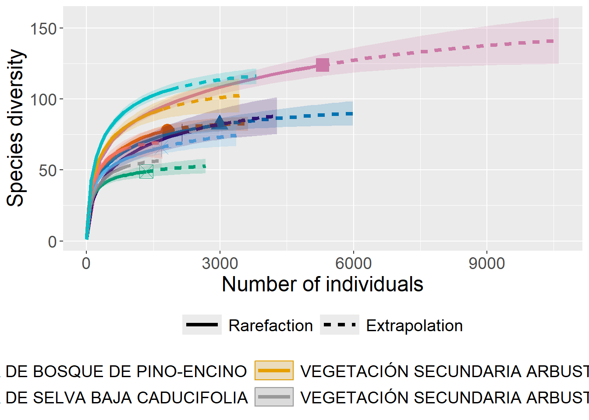
ggiNEXT(resul,
type=2,
facet.var="None",
color.var = "Assemblage")Warning: The shape palette can deal with a maximum of 6 discrete values because more
than 6 becomes difficult to discriminate
ℹ you have requested 10 values. Consider specifying shapes manually if you need
that many have them.Warning: Removed 4 rows containing missing values or values outside the scale range
(`geom_point()`).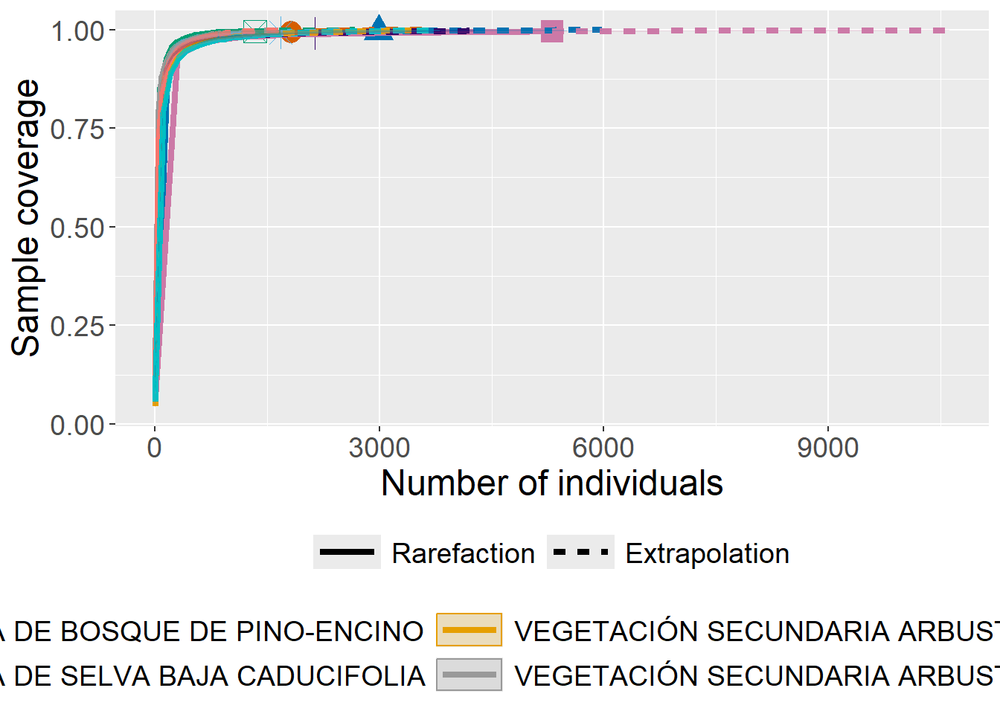
ggiNEXT(resul,
type=3,
facet.var="None",
color.var = "Assemblage")Warning: The shape palette can deal with a maximum of 6 discrete values because more
than 6 becomes difficult to discriminate
ℹ you have requested 10 values. Consider specifying shapes manually if you need
that many have them.Warning: Removed 4 rows containing missing values or values outside the scale range
(`geom_point()`).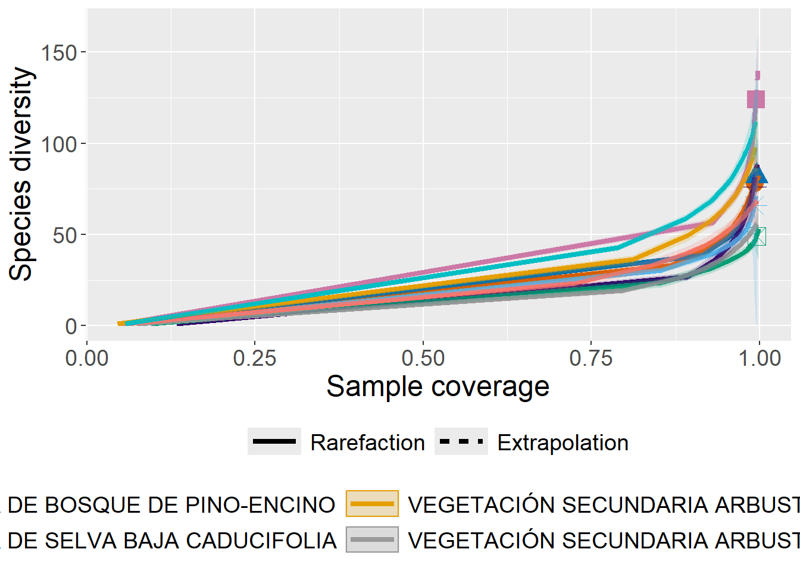
Sacar la gráfica de la curva de acumulación de especies para editarla como cualquier gráfico generado con ggplot.
resul[[2]][[1]] |>
mutate(ymin = qD.LCL,
ymax = qD.UCL) |>
ggplot(aes(x = m,
y = qD,
col = Assemblage,
fill = Assemblage,
group = Assemblage,
ymin = ymin,
ymax = ymax)) +
geom_line() +
geom_ribbon(alpha=0.5) +
facet_wrap(~ Order.q, scales = "free_y") +
theme_bw()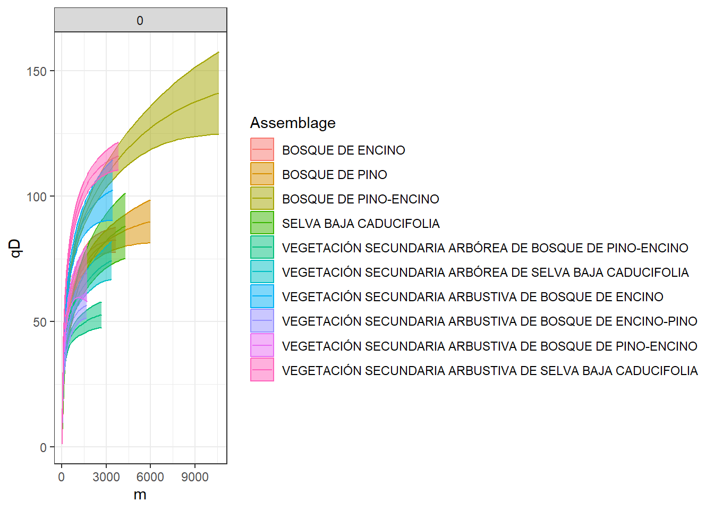